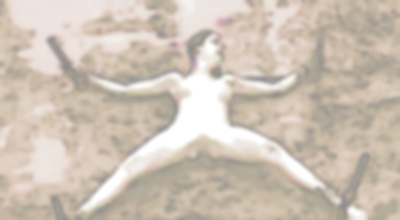

| 隷獣 | |
| あんぷらぐど | |
| aranawakoubou (2014) | |

隷獣
～郁美モノローグ版～
あんぷらぐど著
荒縄工房・発行
人は獣となってのち、
ふたたび人に戻れるのだろうか。

「郁美モノローグ版」の刊行にあたって
本書は、ブログ「荒縄工房」に掲載された「隷獣」を再編集したものです。もっとも大きな違いは、郁美による独白（モノローグ）となっている点です。
また、ブログでは掲載していない誕生日パーティー以降についても触れています。
本作品はすべてフィクションであり、実在する人物・地名・団体とは一切関係ありません。また、特定の個人、団体、宗教、人種、性別などを誹謗中傷する意図はありません。
あんぷらぐど
ＳＭ雑誌に「仲ゆうじ」名でＳＭ小説を執筆して作家活動をスタート。その後、作家活動は休止し、編集の仕事に携わる。ネットでは「ふにゃふにゃ」「あんぷらぐど」名でＳＭ小説を執筆。独自の自虐的ＳＭ、一人称による告白形式の作品、伝奇ＳＭ小説などを発表し続けている。東京在住。
はじめに
それに出会ったのは、二〇一〇年五月だった。ある山を登ったところ、山頂から望む深い森林に興味を持ち、地形図とコンパスを頼りに、通常の下山ルートを大きく外れて、獣道を下っていった。地形図では水源があり、そこから川が流れて麓の町に向かっていた。
またバス停のある峠にも近い。
等高線から見ても、それほど険しいわけでもなく、無謀なことだとは思えなかった。どれだけ迷っても、川沿いに下れば町に出るはずだから。
それでもやはり、日光をもさえぎる深い森の中で迷ってしまった。川を探して谷間を歩くうちに、見捨てられた古い温泉を見つけた。無人の小屋があり、河原に湯が出ていた。地元だけで知られている隠し湯のようだ。
そこに、郁美がいた。鬼丘と名乗る男と一緒だった。
私は事情を知りたいと思った。鬼丘は積極的で「話を聞いてやってくれ」と言う。
「録音して、声を家族に届けてほしい」と。
私はその小屋に一泊して、携帯電話の録音機能を使い、約十時間、郁美の話を聞いた。
本書はそれに基づいて書き起こしたものである。読みやすい表現、必要な補足説明など、最小限、私が手を入れていることをお断りしておく。
山ガールにあこがれて
郁美と申します。二十一歳です。
そもそものことからお話します。
私は身長が百七十八センチで、高校生の頃は体重も八十キロほどありました。
中学生の頃から身長が伸びはじめ、スポーツに誘われることが多くなりましたが、なにをやっても不器用でうまくいかず、「どんくさい」と罵られていました。
その頃、人気のあった女性芸人のネタから連想されて、「シロサイ」と呼ばれていました。
肌がきめ細かくて真っ白なのと、ブタ以上の迫力があったからでしょう。
でも、私だって女の子なのです。女の子らしい日常が欲しいだけでした。
大柄ですが、内面は夢見がちな少女のままでした。運動は苦手で、人と競うこともキライ。比較されることも好きではありません。
ただ外観と内面のギャップに悩んでいたのです。
大学に入っても見た目のコンプレックスがあって、うまく溶け込めずにいましたが、有希恵さんと出会ってから変わりました。
「ねえ、山に行こうよ」
彼女は大学でも目立つ美しい人で、裕福な家庭に育っているようでした。流行になっていた「山ガール」をやろうというのです。
「私たち、成人したんだから、その記念に、どう？」
二十歳になった記念に、誘われるままに八人ぐらいで高尾山へ行きました。
中学以来、一番、楽しい出来事でした。
それから私は毎週、有希恵さんや一緒に高尾山へ行った仲間たちと、山へ行くようになりました。
これまでダイエットに何度も失敗していましたが、歩くことは苦ではなく自分に向いていました。
「もう、シロサイとは言わせない。せめて、動物なら白馬と呼ばれたいな」
そんな気持ちになっていました。
山へ行くようになって、十キロほどの減量に成功していました。体重は七十キロで、標準的な体重にかなり近くなっていました。
このままいけば、夢のようなプロポーションに近づけるかもしれません。
猫背が治り姿勢がよくなり、ほっそりしてきたこともあって、ナンパされたりモデルのスカウトに声をかけられたりもするようになりました。
でも、私は恥ずかしがり屋で内向的なので、そうした声には耳を貸しませんでした。
やっと変わることができる、と私はそれだけでうれしかったのです。
自然の中にいると、自分の体の大きさ、無口で内気なことなど、まったく気になりません。ただひたすら自然の中を歩くのが楽しいのです。
有希恵たちと山へ行くようになって、山好きな女性の友達も増えましたが、彼女たちはどんどん競って高い山を目指すようになっていました。
私は、そういう激しい登山には興味がないので、一緒に行く山行きが減っていきました。
内気なので、知らない人と山へ行くのは億劫ですし、ひとりでは怖くて行けません。
このままでは、元に戻ってしまいます。せっかく変われそうだったのに。
有希恵にそのことを率直に話したことがあります。
すると、「望月さんに聞いてみれば」と言ってくれました。
望月孝夫さんは、同じ大学の卒業生で自称「自然人」。何度か有希恵たちと一緒に登山をしていて、指導をしてくれました。
望月さんは、私と同じぐらい背が高く野性的で、都会の似合わない素朴な男性でした。ちょっと老けて見えるほど落ち着いています。
「ひとりでもいけるような、あまり高くない山とかで、楽しめるところってありませんか？」
「うん。あるね。でも、ひとりじゃマズイよ。いくら低い山でもね。一応、熊とか猪はいるからさ。そうだ。今度の月曜日なら一緒に行ってあげてもいいな。仕事も休みなんだよ」
うれしい話でした。
異性としての望月さんを意識してしまいます。
学生ですから郁美は、混雑した週末ではなく、平日に山へ入ることができます。社会人のはずの望月さんもそれに合わせてくれたのです。
その日、私は、駅前で登山口へ向かうバスを待っていました。
典型的な山ガールのファッションでした。保温性の高いレギンス、カラフルなブッシュスカート、鮮やかな緑の防水性も備えたフード付きブルゾン。小型のリュックを担いで、赤い帽子も被っていました。
望月さんとは、登山口で待ち合わせる予定でした。
ザザーと大きなタイヤの音、そしてディーゼルエンジンらしい野太い音を立てた４ＷＤ車がやってきて、私の前に停まりました。
窓をあけて「おはよう」と長髪で痩せた望月さんが顔を出しました。陽に焼けて精悍な目をしています。三十過ぎには見えません。
「おはようございます」
私はハキハキと答えます。鼓動が激しくなっているのを感じていました。
「面倒だからクルマで来ちゃったよ。ここはアプローチが長いからさ。バス待っているとあと三十分は来ないし、バスって遅いだろ。さ、乗って乗って」
「はい」
荷物を後部座席に入れます。広い荷台には山の道具らしきものが天井近くまで詰め込まれていました。殺風景なクルマでホコリっぽく、男くさいのです。
その助手席に乗り込みました。
「じゃ、行くよ」
山道に慣れているのか、ひどく荒っぽい運転です。カーブではザザーッと砂利をタイヤが弾き飛ばす音がし、遠心力で投げ出されそうな勢いでした。
シートベルトをしていても、体が前後左右に振り回されます。
望月さんは無口です。私もそのほうが助かります。
つづら折りをいっきに上っていきます。バスの通る舗装道ではなく、細い林道に入っていきました。
三十分もジェットコースターのような運転に舌を噛まないように必死に耐えて、ようやく登山口です。
私はクルマから降りると、ふらふらになっていました。
「どうしたんだ、真っ青だよ」
「すいません」
砂利の敷かれた広場は、バスがぐるっと回れるギリギリの広さで、登山道の入り口を示す看板と登山ルートの案内図があるほかは、工事現場にあるような仮設トイレが二つあるだけでした。
私は、そのトイレに向かおうとしたのですが、降りたその場で気持ちが悪くなって、いきなり吐いてしまいました。
朝食は果物と飲み物だけだったからか、すっかり食べたものを戻しても足りず、胃液まで吐いてしまいました。
苦しくて、その場にしゃがみ込んでしまいます。
望月さんが見ている......。恥ずかしさもこみあげてきます。
「どうしたのかな？」
やさしい声ではありません。冷徹な声です。
「すみません。ちょっと気分がよくなくて」
豹変した男
望月さんは細長い杖を手にしていました。
ヒッコリーのシャフトに、頭部にはピッケル風に先の尖った嘴上の金属が握り手としてついています。末端には金属の鋭い石突きもあります。いつも登山のときに持ち歩いていました。
その石突きが、私の吐いたものを示しています。
「それは、なんだ」
「すみません」としか言いようがありません。
「すみません？ どう、すみません、なのかな」
「どうって......」
その杖が視野から消えました。
そしてビュッと風を切る音がしたかと思うと、私のお尻に激しい痛み。しゃがんでいたので、バランスを失い、手をついてしまいました。
「なんだ。わからないぞ」
二発目もすぐに飛んできました。動くことができず、尻で杖を受けます。ドスッと鈍い音がしました。
「私が、吐いたものです」
「そうだよな。これは、おまえが吐いたものだ。その結果、どうなったんだろう？」
「どうなった？」
三発目が尻を襲います。とうとう、耐えきれず、砂利に突っ伏してしまいました。
目の前に、自分の吐いたものがあります。
「いいか。おまえの汚いゲロで、自然を汚したんだぞ」
そして、望月さんの登山靴の先端が私の顎をぐいっと押し、嘔吐物に近づけようとします。
「やめて！ やめてください」
「自然はおまえにやめてくれとは言えないんだよ」
望月さんの大きな手が私の帽子を取り、髪をつかみました。そして私の顔を持ち上げて少し引きずり、嘔吐物に押しつけました。
「ふえー」と声にならない悲鳴を上げるばかりです。
「いいか。覚悟しろ。おまえに本当に自然を愛する気持ちを叩き込んでやる」
「すいません、すいません」と謝るしかありません。
おそろしいことになりました。逃げなければ......。殺されてしまうかもしれないのです。
望月さんと二人きりなのです。ここに来ていることを知っている人はほかにいません。
「じゃあ、言うんだ。おれの言う通りに」
私は自分の嘔吐物に鼻を押しつけられたままで、言わされました。
「私は自然を汚した悪人です」
声が震えています。
でも、セリフはそれだけではないのです。こうも言わされました。
「自然を尊重する立派な人間にしていただくために、根本的に叩き直してください。そのためなら、どんなことでもいたします」
「よし」
ようやく許されました。
地面をころがるようにして、嘔吐物から逃れました。
そこにバスが入ってきました。のどかなホーンを鳴らし、二人の前に止まります。
これはチャンスです。このバスに乗って帰ればいいのです。
私は、あまりのことに力の入らない足をなんとか動かして、よろよろと立ち上がります。まだクルマ酔いとショックでふらついています。
バスが完全に停車し、ドアが開いたものの乗客はひとりもいません。
気持ちは駆け出していたのですが、ふらふらしながらバスへ近づきました。
「助けて」
運転手はこちらを見ています。でも、エンジンを完全に停止させました。
「私は自然を汚した悪人です」と自分の声が聞こえました。
振り向くと、望月が小型のレコーダーを手にしています。
「根本的に叩き直してください。そのためなら、どんなことでもいたします」
私の声が寂しいバス停に響きます。
運転手はそれを聞いて、笑っているのです。
「乗せてください」
「乗せるわけにはいかないな」
「助けてください」
「望月さんの言うとおりにしたほうがいいですよ。そうすれば、あなたも、もっとましな人になれますから」
「ウソでしょう」
「生意気だよね」と望月さんが私のすぐ背後に来て言うのです。
「ちょっと手を貸してくださいよ、忙しいところ、悪いけど」
「うん。しょうがないよね。最近の登山者の中には、目に余るやつがいるからね。これも教育だから」
運転手は立ち上がり、降りてくると、私をドンと突き飛ばします。
バランスを失って倒れてしまいました。
「大きな体をしているわりに、体が弱いねえ。それで山なんか登れるわけないよ」
「そう。だから鍛え直す」と望月。
「じゃあ、まずはその格好だよね。虫酸が走るよ。山ガールだっけか」
「ああ、まったくだ」
二人の男が見下ろします。彼らの手が伸びてきて、私からザックを奪います。
「さあ、自然に戻るんだ。裸になれ」
「いや！」
この二人は示し合わせて私を乱暴する気なのです。
這って逃げようとしました。
しかし、笑いながら運転手と望月に足をつかまれてしまいました。
「ほら、逃げろ。もっと逃げろ」
亀のようにじたばたして足を蹴ってみても、二人の男の力には及びません
砂利で手が擦れ、血が滲みます。きれいに手入れした爪もボロボロです。
意地悪な二人は、体操の手押し車のように、手だけで逃げようとする私をからかうように前進させます。
ある程度進むと、無情にも引きずって戻すのです。
ざーっと砂利をする音がします。
しばらくその繰り返しでしたが、やがて、ブルゾンははだけ、その下のチェックのシャツも出てきてしまいます。
運転手がブッシュスカートを引き剥がしたので、下着とレギンスだけの下半身になってしまいました。
その下着に手がかかって、引き延ばされます。
「やめて」
逃げようと、前進する勢いを使って、パンツが股間から膝まで引きずり降ろされました。
剥き出しの尻に、冷たい山の風があたっています。
ショックで体が固まります。
「いや！」
「ほらほら、おとなしくしないと」
二人の男は、パンツを抜き取り、右足と左足をひとりずつ両手で抱えました。
トウモロコシの皮を剥くように、レギンスも引き抜かれてしまいます。
もう逃げることはできそうにありません。絶望的です。
「せーの」と二人はかけ声をかけて、足をすばやく持ち替えて、ひねりました。四つ這いでいられなくなって、ごろんと仰向けにさせられます。
真っ白な私の足を持っている二人の男は、ギラギラとした目で見下ろすのです。
「どうです。処女ですかね」と運転手。
「たぶんね」
「処女ってやったことないなあ」
「そうですか。じゃあ、試してみますか？」
「ぜひ」
抵抗しようにも力尽きていたのか、手にも足にも力が入りません。
多少、体が大きいとはいえ、運動能力は望月たちの方が上です。どうにもならないのです。
望月が足を持ち、運転手が私の後ろにまわって手を脇に入れてきました。そして、バスの中に引きずり込んだのです。
後部座席に投げ込むように落とされました。
運転手が制服のズボンを脱いでいます。その股間にはどす黒い逸物がそびえています。
はじめて、その男の部分を見せられて、パニックになっていました。
「いや、ダメ、やめてください！」
声もうまく出ません。
望月が足を持ち、大きく広げてしまいます。
そして運転手は、私の股間に体を密着させてきました。
硬いものが、ぐいっと入ってくるのがはっきりわかりました。
ゆっくりと、じわじわと運転手は私の中に押し入ってくるのです。
「ああ、ダメ。痛い！」
拳で近づいてきた運転手の肩を叩いたものの、彼はすぐ体をかわして笑っています。
そうやって彼が体をひねるたびに、ますます深く中に押し込まれてきます。
「おお、いいですね」と運転手。
「すごく締めてきますよ。大柄な女は、あそこも大味かと思ったけど、そうでもないかも」
「最初だけですよ。何度かやったら、ガバガバになっちゃいますよ」
「そうですか。さすが、望月さんはベテランですな」
そんな声の中で、さらに運転手は吐瀉物で汚れた私の顔を私のシャツでふくと、タバコ臭い口を押しつけてきました。
生まれてはじめてのセックス、そしてディープキスが、見ず知らずの男なのです。
「うっぷぅ、ひゃ、いや、イヤ！」
抵抗しても、それ以上のことをしてきます。
男の臭い唾が私の口に入り込みます。舌の先で歯や歯茎をまさぐっています。
あらがっている間に、ブルゾンとシャツを望月が脱がします。スポーツ用の吸湿性のいいアンダーシャツもずりあげられ、お腹も乳房も露わにされました。
「いいオッパイですな。こりゃ、ホルスタインだ」
運転手は、誰にも触らせたことのない乳首を次の攻撃目標にしたようです。べっとりとした口でしゃぶり、歯の先でコリコリと噛みます。
「ああ！ そんなこと、しないでください。お願いですから」
泣いても叫んでもだめだとわかっていても、叫んでいました。
その口を、望月が私の服で塞ぎます。
「あわっ、うぐぅ」
殺されるかもしれない、と思いました。ここへ来ることは、望月しか知らないのです。
ひとり暮らしの女子大生が、いなくなったことを、誰が気づくでしょう。さして有名でもない地味な山に登ろうとしたことなど、わかるはずもないのです。
殺されて、山に放置されたら、何年も見つからないでしょう。
そう思うと涙が止まらなくなりました。自分はこのまま死ぬのです。
運転手は「いくよ」と言い、私の中に熱い射精をしました。
「がっう、うぐぐ」
嗚咽しても、彼らは容赦しません。
やっと運転手が私から離れたと思ったら、もう望月がそこにいました。
「ほら、これが欲しいだろ」
運転手は私の顔に押しつけられていた服をどけて、わざわざ望月の体を見せるのです。
それはさきほどのものよりも大きく、高い確度で突き上げていました。
「これから、たっぷりと教えてやるんだからな。ありがたいと思え」
望月が入ってきます。
「くぅう！」
それは、とても激しいピストンで、私の股間が引きちぎられるのではないかと思えるほどでした。
二度目の体験も、ただ苦痛なだけでした。
二人の、大量の精液を注ぎ込まれ、ぐったりしていると、残りの服もすっかり剥ぎ取られ、登山靴と靴下だけにされてしまいました。
望月は、太い首輪を手にしています。
「こいつをつけてやろうな」
私の首に巻き付け、喉が締まるほどきつく留めました。首輪には、長いチェーンがついています。
「じゃ、そろそろ行くから」と運転手。
「忙しいのに、手伝ってくれて悪かったな」と望月。
「いいさ。これも自然を守るためなんだから。じゃ、がんばって」
裸にされ、首輪をつけられ、引っ張られて、バスの外に引き出されました。
冷たい空気にさらされて、震えが止まりません。
バスはエンジンを始動すると、なにごともなかったかのようにドアを閉じ、下山していきます。
ホーンが悲しげに木霊しました。
「助けて。殺さないで」
私はそれだけを、呪文のように唱えていました。
全裸の山行
「さて、これからだな。荷物を点検するか」
バスが見えなくなると、望月はそう言って私のザックを勝手にあけて、中身をぶちまけました。
「食べ物と飲み物はいるよな。これは虫除けか。いまのうちにたっぷりつけてやるよ」
小さなスプレー式の虫除けを私にふりかけます。岩のような手で体中にまんべんなく広げていきます。
「虫除けはこれが最後だ。これからは、虫に刺されることにも慣れないといけない」
自分たちで犯した部分にまで、虫除けを撫で付けます。
逃げようとしてもグイッと首輪を引かれて、身動きできなくなります。
「着替えも持って来たんだな。帰りにはカラオケにでも寄るつもりか？ だけどな。おまえに服なんていらないんだ」
剥ぎ取った私の服と着替えを一つにするとザックに押し込みます。腕時計も入れます。携帯電話はバッテリーを外してしまいます。
「自然を肌で感じるんだ」
「死んでしまう......」
「なんだって？」
「死んでしまいます」
「大丈夫。おれが死なせない。自然の大切さを骨身に染みるまで教えてやるからな」
殺されないかもしれない、という微かな希望にすがるしかありません。
「なんでもします。殺さないで」
「おいおい。ひと聞きが悪いな。おれがいつおまえを殺すって言った。おまえを立派な人間にしてやろうって言うんだよ。殺すなんてとんでもない。それに、なんでもすると、さっき誓ったばかりじゃないか。それは守ってもらうからな」
そしてチェーンをぐいっと引っ張るのです。
「返事は？」
「わかりました」
「最初に言っておくが、殺しはしないが、死にたくなるような目には遭わせてやるぞ。何度も殺してくれって、おまえが頼むかもしれないが、それでも、おれは殺さない。いいな」
また首輪が引っ張られる。
「わかりました」
「おまえがまともな人間になれることを証明しなくちゃいけない。もしそれがダメなら......」
望月は低く笑う。「そのときは、人間以下になってもらう」
意味がわかりません。望月は狂っているんだ、と思いました。
「このザック、軽すぎるな」
クルマまで連れて行かれました。一・五リットルの水の容器を二つ、ザックに入れました。
「足りないかな？」
さらに二つ。
「これだけで六キロか。そのほかを合わせると十キロぐらいだね」
それを背負わせるのです。
裸の上に重いザック。目の荒いナイロンを肌に感じます。
でも、それだけではありませんでした。
「こいつを前に背負うんだ」
望月のザックを前から抱えるように持たされます。乳房が押し潰されます。なにが入ってるのか、その重さは背中のザックの比ではありません。
ロープを出し、二つのザックをしっかりと落ちないように私の体に縛り付けていきます。しかも私の手を、頭の後ろで組ませて縛りあげました。
「ほら、ちゃんと立て」
疲れ果てたロバが無理やり荷物をのせられたように、よろよろと立ち上がります。手が使えないので、どこかにつかまるわけにもいきません。
犯されたばかりの股間から、血液や精液が流れ出しているようですが、それを気遣う余裕もありません。
「よし。じゃあ、出発だ」
前を歩かされます。
望月は、背後からチェーンと杖を持って、離れてついてきます。
登山道の入り口から、一歩、また一歩と足を前に進めます。最初のうちは、階段状になっていた道が、しだいに細くなっていきます。低い山なので、登りがあったかと思えば、散歩道のように平らに近い道もあります。
低山ならではの、鬱蒼と茂った森の中を進んでいきます。
いままでのように、景色や自然をながめている余裕はありません。
いつしか左手は、木々や藪の急峻な斜面になっていました。バランスを崩せば、谷へ転がり落ちてしまうでしょう。もしそこを落ちたら、自力で抜け出すことはできそうにありません。
飛び込んでしまおうか、と考えますが勇気がありません。それに、低い竹や木々もあるので、裸でそこに落ちるときっと私の体にグサグサと突き刺さり、むごたらしく、苦しみながら死ぬことになるでしょう。
しかたがなく必死に歩くのですが、とても遅く、道は果てしがないように感じます。
「はぁはぁ」
自分の荒い息ばかり聞こえます。
「ほら、ちゃんと歩け。一、二、一、二」と望月は言い、杖の石突きで、お尻を突きます。軽くやっているのでしょうが、ぐさっと刺さるような感覚に、思わず「ひーぃ」と悲鳴を上げてしまいます。
きっと真っ白なお尻に、石突きの赤い跡がついているでしょう。
お尻を突かれるのが怖くて、荷物なしでもきついぐらい、早いペースで歩いていましたが、しばらくすると息が切れてまた遅くなってしまいます。
すると、すかさず杖で突かれるのです。
「うひぃー」
涙を流しながら、三十分以上も、そうした状況が続きました。
何度目かのお尻の痛みに、私は耐えきれず、バランスを崩して、前のめりに倒れてしまいました。
抱えている荷物が幸いして、倒れても顔を打つようなことはありません。
全身から汗が流れ出ています。ザックを直接皮膚で受けているため、背中も胸も、擦り傷だらけになっています。
「はーはーはー」と激しく呼吸しますが、どれだけ呼吸しても、苦しみから逃れることはできないのです。
汗で顔に貼り付いた髪を、望月は石突きで、そっとかきあげました。
「なんだ。もうへばったのか。休憩してもいいが、おまえが休憩するときは、別のなにかをするときなんだぞ」
望月はザックから一・五リットルのボトルを一つ、取り出しました。
「どうだ、これを軽くするか？」
「はい、お願いします」
「だけどさ。軽くするというのは、ここに捨てるってことじゃないんだ。貴重な水だからね。おまえが飲むんだよ」
「はい」
喉はカラカラです。朝食はバス停で吐いてしまい胃も空っぽでした。それから暴行され、激しい運動を続けてきました。
なんとか自力で上体を起こし、裸であることも忘れ、地面にへたり込んだままボトルに口をつけます。望月がそれを傾けていきます。
ぐびぐびと飲むと、生ぬるくてもおいしく感じました。でも、とても一・五リットルは飲めません。半分以上、余りました。
「さて、残りをどうするかだ。なにかいい方法があるかな？」
「わかりません」
「あるんだよ。ケツから入れるんだ」
「ええ！」
「脱水症状も抑えられるぞ」
望月は自分のザックから、ゴムの管を取り出します。
「こいつをおまえのケツに入れる。そしてボトルにこれをセットすると、自動的に入っていく」
「歩きます。歩きますから、それは......」
「だめだ。なんでもすると言ったじゃないか」
もはや抵抗ができない私を、望月は簡単に蹴り倒します。うつ伏せになって、尻が高く持ち上がっています。
望月の指が、私の唇に触れます。
「おれの指を舐めろ。たっぷりとね。そうしないと痛いぞ」
「むっふぅぅぅ」
水を飲んだばかりの口で、無骨な人差し指を丁寧にしゃぶるのです。指先は容赦なく頬の裏側に、舌に、喉の奥にまで入ってきます。
「この指がおまえの尻に入るんだぜ」
そう言いながら、口の中を指でさんざんもてあそびます。
そして抜き取ります。
「でかいケツだな」と笑いながら、しばらく肛門の外側を指先でいじっています。マッサージするように触っていると、ひくひくとそこが反応します。
「やめてください。お願いですから」
怖ろしいことだと思います。そこを触られるだけではなく、私の口の中でやったように指で犯すというのです。
浣腸登山
「欲しいって言ってるな。ケツ穴も喉が渇くんじゃないか」
ゆっくり指先が、排泄器官を押し広げます。
「ううう」と声が漏れます。
悔しくて、悲しくて。なんで、こんな目に遭わなければならないのでしょう。
敏感な入り口の部分を、こじ開けるように、太い指が侵入してきました。
「ふぁぁあ」
思ったとおり、口の中でやったように、望月の指先が中で動き始めます。虫かなにかが入ってきたように奥へ進み、上へ下へ、左へ右へ。指がぐりぐりとそこを押し広げていきます。
「ふぇひー」
痛みだけではありません。気味が悪いのです。自分の体が汚されていくのを、これほどはっきり自覚させられるとは......。
「よし。少しは広がったかな。これもほら、しゃぶれ」
ゴム管が唇に触れます。
「いやか？ もっとこうしてほしいのか？」
お尻の中の指がグイッと、私を持ち上げるように上に引き上げられます。お尻が壊されてしまう......。
仕方がなく、口を開き、ゴムの管にも唾をたっぷりつけました。
望月がゴム管を引き抜きました。「すぐ慣れるよ」
今度は指のかわりに、それが私の中に突っ込まれるのです。
ゴムの管が押し当てられ、指でぐいっと中まで入れられます。
「ぐぇっ」
指よりは細く、柔らかいのです。痛みはなく少しホッとしましたが、挿入はなかなか終わりません。どんどん、奥に入り込んでくるのです。
異物が体内に入るおそろしさに、私は震え上がります。
「やめてください。もうムリです」
かなりの長さでしょう。腸の中でうごめくゴム管の感触は初めてですから、自分の体が壊れていくようでした。下手に動けば、お腹の中が傷つくような気がして、身動きもできません。
「このぐらい、大したことないよ」
ゴムの末端にはペットボトルのふたと同じ形状のものがついていました。ペットボトルに取り付けて、望月が高く持ち上げるのです。
それだけでも、管を水が通り、私の中へ注がれてくるのです。
容器の底に、アーミーナイフで穴をあけると、さらに勢いよく腸内に注ぎ込まれていきました。
「がぁぁぁ」
あまりに異様すぎる感触です。水がぐいぐいと腸壁を広げていくのです。
「よおし。全部飲んだな。最初にしては上出来だ」
ずるずるとゴム管を抜かれる感触のせいか、鳥肌が立ってしまいます。ゴム管と空になったペットボトルをザックに戻すと、再び私を立たせます。
「ここは子どもでも三時間もあれば山頂に行けるんだ。わかってるだろうな」
「あと、どのぐらいですか？」
「さあね。とにかく急げ」
たっぷりの水を飲んだ腹部を意識しないわけにはいきません。
足を一歩、また一歩と先へ進めるたびに、お腹の中でチャポチャポと水が鳴っているような感じがするのです。
水分を補給したのがよかったのか、徐々にペースをつかみ、三十分ほど望月の要求する速いリズムで歩くことができました。
よほど体の水分が不足していたのか、上と下から注入された一・五リットルの水はどこかに消えていったようです。
「いいじゃないか。素質がある」
「もう、許してください。家に帰してください」
「まだ訓練は始めたばかりだぞ。そろそろ、水を補給しなくては」
「もう、ですか？」
「熱中症は、喉が渇いてからでは遅いんだ。定期的に一定の水分を補給すること」
「でも......」
たっぷり入った一・五リットルの水。それを今度はどれだけがんばっても、五百ミリリットルも飲めません。残りは一リットル以上です。
「さあ、どうする」
「ムリです」
「なにがムリなんだ」
「お尻からなんて、ムリです」
「ふーん。ムリかどうか、やってみなくちゃわからないだろう」
再びゴム管と底に穴が開けられたボトルが取り出されました。
「ダメです。お願いですから......」
立っている私のお尻に、ゴム管を近づけてきます。いくらかは水が漏れていたらしく、お尻のあたりが濡れそぼっていることに気づきました。
ゴム管の先端が、乱暴に肛門に突き刺さります。
「うぐっ」
軽い痛み。いつしか必死に肛門を締めていたのです。そんな抵抗は痛いばかりで意味がなく、細い管は無遠慮に入り込んできます。奥の奥まで。
「ひぃぃぃ。お願い、助けて」
「助けてやってんだよ。お礼を言われたいぐらいだけどな」
望月は管につながったボトルの底をナイフで切り取って、そこに、ドボドボと水を注いでいきました。
強い圧力で水が中に押し入ってきます。前よりもお腹が苦しくなるのが早いのは、まだやっぱり前に入れられた水が腸内に残っているからではないでしょうか。
半分ほど入った頃、とうとう私は音を上げました。
「おトイレに行かせてください」
「どうして」
「漏れそうです」
「なにが」
「おしっこが......」
トイレをさせてもらえば、おしっこもなにも、同時にできると考えていました。
望月は意地悪でした。
「おしっこだけか？」
「お尻からも、です」
「漏れるのか？」
「はい」
「はしたないな」
「すみません」
「じゃあ、そこで垂れ流せ」
「え！」
「自然の中で垂れ流せ」
「そんな」
「こんな山にトイレがあるとでも思ったのか、バカだな」
もちろん、そこまでは思っていません。手を自由にしてもらい、草むらにいかせてもらえればいいのです。
「藪に入ると、虫やヘビがいる。危険すぎる。ここでやれ」
私は、体が疲れ切って、うまく動かすこともできません。荷物が重く手が使えないので、しゃがむこともできないまま、パンパンになった膀胱から小水が漏れだしていきました。
「おぉぉぉ、見ないでください......」
立ったまま、私はおしっこをしてしまいました。温かい汚水が足にかかります。そのあたりをびしゃびしゃにしていきます。
なかなか終わりません。
ようやく一段落しかけたとき、今度はお尻からも、じょぼじょぼっと水が漏れ出しました。
「は、恥ずかしい......」
まだゴム管が入ったままです。最初は水だけでした。
腸内の圧力でゴム管が押し出されてしまうと、それに腸が刺激されたのでしょう。水で柔らかくなった固形物も吹きだしていきます。
この頃、便秘がちでした。堰を切ったようにたっぷりの量の固形物がお尻からあふれ出して、ぼたぼたと地面に落ちていきました。
「立ったままやるとはな」
望月は笑います。
「やっていいと言ったが、そんなに出るのか」
「ううう」
屈辱で涙があふれます。
「やっぱり、体がでかいとウンコもデカいんだ」
「ごめんなさい。すみません。助けてください。許してください。お願いします。お願いします......」
恥ずかしさで身がすくみます。
望月は笑いながら、残りの水を尻に浴びせて洗い流しました。
「その汚いものを、こんなところに置いておくわけにはいかないから、片付けろ」
「片付けるって......」
石突きで示されているのは、黒々と光る自分の体内から出たものたち。それは数日分の量がありました。誰がどう見ても、登山道の真ん中に人糞が撒き散らされています。水に濡れて光っていますが、それもすぐ乾いていくことでしょう。
「せめて下の藪に落とせ」
「手を自由にしてください」
「だめだ」
「ムリです」
「ムリなものか。おまえには、便利な口があるじゃないか」
「ムリです。絶対にムリです。イヤです。そんなことできません」
望月は私の背中のザックを持ち、じわじわと力を加えていき、とうとう私を登山道にねじ伏せてしまいました。
そして足を蹴り、亀のように地面に伏せるのです。望月のザックに乗るような格好となりました。
こうなると、今度は自分の力だけでは立てそうにもありません。
目の前には、私のお腹から出たものが散らばっています。
絶対にできません。そんなことをしたら終わりです。
しかし望月は笑うばかりです。
「おまえがまっとうな人間になれるかどうか、その大切な境目だぞ。言われたことが、素直にできないようなら、畜生以下ってことだな」
「だって、そんなこと、できるわけがないじゃないですか。誰だって、そんなこと、しないです。手を、せめて手を自由にしてください」
「足を使うんじゃないぞ」と言って、足首を束ねて縛り、どこかの木に縛り付けたようです。
望月は、自分だけ道を戻って下山していくのです。
やがてカーブの向こうに望月は消えてしまいます。私は首を傾げて、それを見ていました。
このままで死んでしまうかもしれない、と思いました。
手が自由になれば、ザックの中に食糧も服もあります。
手を自由にしたい......。
五分、十分。虚しいあがきが続きましたが、手首と首を縛る縄は、かっちりと結ばれていてまったく緩みません。首輪を取ろうとしてもそのベルトも硬く、指先が少し触れてはみても、とても外せないのです。
絶望的でした。
森に日がさえぎられ薄暗く、鳥の声でしょうか。おそろしい獣のうなり声にも聞こえます。ときおり吹き抜ける風にハッとします。
下り方向を見ても、望月は戻ってきません。
この山の山頂へ行く道は、ここだけです。山の向こうからのルートもありますが、早朝出発した人でも山頂を越えてここまで来るには、まだ何時間もかかるでしょう。
どれぐらいそうしていたのでしょう。
遠くで微かに話し声がしました。
明るい声。若い女性のようです。私は希望を感じました。
隠れることはできません。恥ずかしい姿を見せることになります。でも、助けてくれるのならそんなことはどうでもいいのです。
どう事情を話せばいいのかはわかりませんが、とにかく自由にしてもらうのです。
カーブの向こうから、私と同じようなファッションの山ガールが現れました。どこかで見覚えがあります。
私を山に誘ってくれた、同級生の有希恵さんです。
助かった、と思ったとたん、その横に明るく笑っている望月がいることにも気づきました。
希望は消え失せました。残っているのは恐怖だけです。
有希恵さんが危ない！
望月はとんでもない男だったのです。彼女も同じような目に遭わされるのではないでしょうか。
その男に近づいてはいけないのです。
「ダメ。有希恵。その男から離れて！」
叫んでみましたが、聞こえないようです。
二人は早いペースで近づきます。もうすぐ私を見つけて、有希恵も気づくことでしょう。私はどうなってもいいので、せめて有希恵だけは助けたいと思っていました。
有希恵が私を視野に捉えました。目が合いました。
それなのに、有希恵は、私が見えないかのように、望月との談笑を続けています。
二人がどんどん近づいてきます。
「有希恵、その男、近づいちゃダメなの。私をこんな風に......」
私は、そう言いながら涙をこぼし、泣いてしまいました。
私の半分ほどしかないのではと思うほど小柄な有希恵。そして、望月が目の前にやってきました。
「助けて、有希恵......」
私はそう言うのが精一杯でした。
友の裏切り
「あらあら」と有希恵はあきれたように言い、「ははは」と甲高く笑ったのです。
「郁美さん。なにしてるの？」
「お願い、助けて、有希恵さん」
「あら、人間みたいなことを言うわね、コイツ」
「そうなんだ」と望月が言う。
「ダメな郁美のままなんだよ。せっかく叩き直してやろうと思っていたんだが、言うことを聞かないんだ」
「それはダメよねえ」
「有希恵さん、お願い、助けて」
「シロサイはシロサイよねえ」と有希恵は笑う。
「ほら、これを見ろよ。垂れ流しやがってさ」
「まあ。ホントに恥ずかしいわ。あ、でも人間じゃないんだものね。シロサイなんだから、大きなクソをしてもしょうがないか」
「そうなんだ。人間なら、これを山道に残すなんてことはできないはずだろう？ どうしても片付けないのさ」
「で、どうするの？」
「さあ。ここに放置して、野垂れ死ぬか、獣のエサにでもなればいい。このあたりは熊もいるけど、それよりおそろしいのは野犬だね」
「まあ、怖い」
「野犬の群れにやられたブタを見たことがあるけど、それはむごたらしかったよ」
望月は、私の体のロープを解き、自分のザックから私を引き剥がしました。
彼は自分で担ぎ、有希恵と一緒に先へ向かおうとしています。
「お願い、助けてください」
裸で首輪をつけられた私を放置してしばらく歩いていた二人が、ふと、振り返りました。
遠くから見ているのです。もう少し離れたら、見えなくなってしまうでしょう。
いましかありません。
地面を這うようにして、自分の体内から出た黒い物体に顔をつけ、口と鼻と舌をつかって、転がし、藪の中へ落としていきます。
あきれるほどの量で、しかも飛び散っていたので、必死でヘビのようにのたうちながらその作業をやりました。
助けて、助けて、と心の中で叫びながら......。
ザッザッと音を立て、二人が戻ってきます。それが喜びに感じました。
もう、なにも考えてはいません。目の前の汚物を唇でくわえて、斜面に落としていくのです。
すっかり山道から、汚物はなくなっていました。
私は地面を這い回ったので、自分から流れ出た水や小水と泥を体中に塗りたくったようになっていました。
「やればできるじゃない」と有希恵は笑っています。
「よし。危ないところで踏みとどまったな」
「ねえ、記念に写真を撮っておかない？」
「いいね。郁美の危機脱出記念だ」
望月は自分のザックから三脚を出すと、そこにカメラをセットします。
有希恵が、私のザックを引っ張って上体を持ち上げたので、私は山道に膝をつくことができました。
その左右に有希恵と望月が立って撮影をしました。有希恵の発案で、私はニッコリと笑い、ピースサインをさせられました。自分の汚物や土がついた口や鼻のままで。
三脚やカメラの入ったハードケースをザックにしまい、それを再び私に負わせるのでしょう。
私のザックから服を出してきて、それで私の胸やお腹の汚れを拭き取って、またザックに戻します。
さらに、有希恵のザックまでも背中に結びつけ、ようやく足の縄を解いてくれました。
「持ち上げるのはムリだろう。四つん這いで歩くか？」
立とうとしても、手が使えないのでもがくばかりでした。
「お願いします」
四つん這いでいることを条件に、首の後ろで拘束されていた手がようやく解かれました。
逃げることはできるでしょうか。首輪からのチェーンは有希恵が持っています。
重い荷物が体に三つ、縛り付けられて、立つこともできません。
とてもムリです。
悲しいことですが、四つ這いになるしかないのです。
しかし、膝が地面に当たると痛いので浮かせると、頭がすごく下がるので、背中の荷物が前に移動してきてしまいます。
「苦しそうだわ、なんとかならない？」と有希恵。
「いい方法があるぜ」
自分のザックから細いロープを出した望月は、それを首の付け根まできている有希恵のザックに結びつけました。それを後方に引っ張り上げます。
私は少しラクになりましたが、もちろん、それだけで終わるわけではないのでした。
そのロープは私のザックについているストラップを通り、私のお尻に食い込んできました。
「滑り止めをしないと」
望月はロープに結び目によるコブを五つ作りました。
それを尻の割れ目にあてるのです。
「ああ、そんな」
そのコブが肛門や性器に食い込んでくるのです。
ロープを腹部に下がっている望月のザックにも通して、弛みがないようにかなり強く引っ張り上げます。
「いたーい！」
思わず叫びます。
「うるさいわね」と有希恵。
上の荷物と下の荷物が引っ張りあって、以前より密着度が高まり、バランスもよくなりました。
でも、これは地獄です。私は背中の二つの荷物とお腹の一つの荷物を、股間を頂点とした振り分けにしているようなものなのです。
歩き始めると体を動かすたびに、股間を通ったロープが強く股間を擦り上げます。
どのように歩いても、重い上と下の荷物によってピンと張られたロープは、反動でズレてしまい、そのたびにコブが敏感な粘膜に食い込み、えぐっていくのです。
「ひぎぃいいい」
「おかしな声、あげないでよ、びっくりするじゃない」
「そうだ。ほら、遅いぞ」
二人は、尻をくりくりと左右に揺すり、そのたびに秘部を自らロープでさいなみながら歩く私をながめ、楽しそうに山道を行くのです。
少しでも遅くなれば、石突きでお尻を突かれます。
「これから、どうするの？」
「うん。まあ、楽しみにしててくれよ」
「郁美、なんとかなるかしら？」
「体はいいと思う。丈夫そうだし、なんといっても大きいからね」
「まともな人間に戻れるかしら？」
「それは、努力しだいだな」
私の耳にも入ってきますが、その意味を考えるゆとりはありません。山道を歩くのに必死でした。
やがて、森から抜け出すと、風が通る草原に出ました。昼前です。人の気配もありません。
石突きで突かれた尻の皮膚は破け、ロープで擦れた粘膜も腫れ上がっていることでしょう。
重い荷物を動物のように運ばされ、地獄としか思えません。
ぐっしょり汗をかいた肌に、冷たい風が吹きつけ、体温を急激に奪います。
「もうすぐだぞ」
高原の中程を直登する道があり、頂上が見えました。そこに人影があるようです。もはや、私はまったく希望は持っていませんでした。
望月だけならまだしも、有希恵も参加しているのです。この二人から逃れるのは簡単ではないでしょう。
いまは、考えないで、言われたことをする。それだけに集中すれば、殺されないかもしれません。
その一心でした。
しごき
賑やかな声がして、上から人が降りてきます。子どもと大人の六人のグループ。山ではみんな元気に挨拶をするのがマナーでした。
「こんにちは」
有希恵と望月も軽快に答えます。
山では、登りが優先で、道が狭いときは、下る人たちは横にどいて道を譲ってくれます。
私は、ぜーぜー言いながら、彼らの足下を這うように上がっていきます。
「なにしてるの？」と子ども。
「このお姉さんはね。こういう風にして登るのが趣味なのよ」と有希恵。「怖がらなくていいのよ」
「裸だよ」
「ごめんね。許してね」と有希恵。
グループの男が望月に「大丈夫なんですか」と尋ねる。
「ええ。すみません。お恥ずかしいですが、この郁美という女は、こうやって登ることを自分に課しているのです。自分への挑戦ってやつで」
「はあ。でも、やっぱりどうなんでしょうか、その格好は」
「そうですね。申し訳ありません」
そんな会話も背後に、私は黙々と山頂を目指します。もう、他人に頼ってもダメなのです。有希恵が望月と一緒に行動している以上、この罠から脱出するのは簡単ではありません。
有希恵はすべてを知っていたのです。山に誘ったときから、すっかり計画されたことなのかもしれません。目的はわかりませんが、私が思っている以上に大きなことが起きているのかもしれません。
山頂に着くと、ようやく休憩が許されました。
剥き出しの土の上に、私はへたり込みます。上体を起こすと、股間をさいなむロープがようやく緩みました。
もしかしたら、ズル剥けになって血が出ているかもしれませんが、いまは見ないようにしました。
太陽を受けて温まっている地面が心地よく、鼓動が平常に落ち着くのを静かに待ちました。
木造のテーブルが三つあり、誰もいません。平日の月曜日にこの山に入っているのは、さきほどのグループと私たちだけなのでしょう。
「メシにしよう」
「お腹すいたわ」
有希恵は、私のザックから食べ物を出しました。自分のザックからも出しています。二人は、それを分け合って食べています。
有希恵は私が作ったおにぎりを食べています。
「おいしい」
そして半分ちぎって、地面に落としました。
「ほら、食べてごらん」
私は、それをしばらくながめていました。汗と涙が顔を伝っていく。
「食べないの？ 食べないなら、こうなるわよ」
有希恵の登山靴が、地面のおにぎりを踏み潰そうとします。
「いただきます」
私はとっさに、そう言っていました。
「お礼は？」
「ありがとうございます」
「これから、そういう態度じゃ、ダメなんだけどな」
有希恵は私にこう言わせました。
「有希恵様。貴重な食べ物をお恵みいただき、ありがとうございます」
私は倒れ込むようにして、泥のついたおにぎりを手にすると、それを口に入れました。
歩くときに必死だったからか、手の平から血が出ていましたが、そんなことはもう気になりません。
ほどよい塩気がおいしく感じられました。
「もっと栄養つけるんだ」
望月がザックから出したのは、レトルトフードでした。
私の横の土の上に、その中身をボトッと落としました。
「なに、それ。ドッグフード？」
「いいや。不味すぎて売れなかった非常食だよ。知り合いがタダでくれたんだ。処分するのに費用がかかるらしいからね。賞味期限は半年前に切れているが、中身がダメになったわけじゃない」
「ドッグフードにすればよかったじゃない？」
「ドッグフードのほうが高いんだよ。なんといってもタダなんだからさ」
温めて食べるべき五目ご飯。それでも、私は必死に食べました。まずい、という感じはしません。なにか薬品っぽい臭いが染み込んでいるだけです。
「全部、食べちゃったわよ」
「さすがに食欲は落ちないか。ますます見込みがあるね」
三本目のペットボトルが出されて、それを飲まされました。飲めなかった残りは再び浣腸です。
有希恵の前でされることに抵抗はあっても、逃げられないのです。
力が尽きたのか、望月がゴム管を抜くと、それにつられるように、入れたばかりの水が腸内からだらしくなく、漏れ出しました。
「ひどいわ、郁美。せっかく入れたのに、どうして」と有希恵が怒ります。
「そうだな。栓をしなくちゃいけないみたいだな」
自分の腸内から出た水で、股間のロープや下半身を濡らしてしまいました。
望月は郁美のザックをあけて、中から使い切った虫除けスプレーを見つけ出しました。細長いペンタイプです。
私にそれを見せつけます。望月は自分の指と比べて、指二本分ほどの太さであることを見せます。
「許してください」
「だめよ。締まりのないお尻は、きちんとしつけないと」と有希恵。
最後のペットボトルを取り出した望月は、薄笑いを浮かべながらゴム管をセットします。
「さて。たっぷり飲んでもらおうかな」
「尻をこっちに向けろ」
靴でお尻を蹴られ、私は重い体を動かします。
「ほら、ケツを上げろ」
四つ這いになってお尻をあげます。
管を肛門に入れていくのも、朝に比べればスムーズでした。これまでになく深く入っていきます。腸内はほとんど空なのです。
ペットボトルはテーブルの上に、横向きで置かれました。四角いボトルの小さい側面を上に向けて、そこをナイフで大きめに切り裂きます。
「圧力は面積に比例するからね」
同じ気圧でも、それを受ける表面積が広がり、いままで以上に強く管に水が流れ込んでいく、と説明します。
「あっあっあっ」
その勢いは激しく、空だった腸内がたちまち水でパンパンに膨らんでいきます。
私はもだえますが、立ち上がらないように有希恵が背中のザックに腰をおろしました。
「ぎひぃー」
地面に押しつけられ、なすすべもなく、一・五リットルもの水を受け入れるのです。
ズズッと音を立ててボトルの水がなくなりました。
「そのまま押さえていてくれよ」
望月はスプレー缶を持ってしゃがみ込みます。濡れてたるんでいるロープ。
その間から、管を慎重に引き抜きます。すぐに水が一緒に出て来ようとするので、そこにスプレー缶の底を押しつけました。
管が抜け、スプレーをグリグリと動かします。
「いやー」
「うるさい」と有希恵が、私の鼻のあたりをつま先で蹴りました。
「ふぅえぇえん」
思わず子どものように泣いてしまいました。
缶がぐりぐりと沈み込みます。
「力を入れるなよ」
肛門が緩んだり締まったりしているようです。望月は缶を動かして、それを楽しんでいるのです。
とうとうスプレーの底がすっぽりと体内に沈みます。
「いいぞ」
さらにぐいっと、えぐるように押し込まれました。そこに股間のロープを戻します。
望月はそのロープを結び直し、これまで以上にきつく股間に食い込ませました。
「出発だ」
「お、お願いです。苦しいです」
「うるさいよ」と有希恵が怒鳴る。
「それ貸して」と望月の杖を借りて、ゴルフのスイングのように振り回し、何度も何度も私の尻を打ち据えます。
そのたびに悲鳴を上げてしまいます。有希恵は手加減をしません。杖の石突きの金属部分が、お尻に食い込むぐらい、叩きつけるのです。
「それぐらいでいいだろう。もう少し歩くことになる。ただ、今度はちょっと道は険しいぞ」
「迷ったりしない？」
「大丈夫だよ。道としてはしっかりしている。元はけもの道だったが、何度も使っているから大丈夫だ」
山頂をあとにすると、道は下りです。それだけ荷物が下がり、ロープが股間に強く食い込みます。
登山道を少し下ったところにもテーブルが二つ置かれていました。ながめのいい頂きです。そこから左が正式なルートらしく、案内の矢印もあります。
山頂を巻いて北側に回り込むように、右側に細い道らしきものもあります。そこには案内はありません。
望月が先頭に立ち、私、その鎖を持つ有希恵の順で、背の高い笹が生い茂る中をしばらく歩きます。
あまり下っているようではなかったのに、急に傾斜がきつくなるのが股間の痛みでわかります。
笹はなくなり、薄暗い森に入っていくのでした。
荷物を股間のロープだけで支えているようなものでした。
歩くたびに、粘膜は激しく傷つき、めくれ上がり、押し潰され、血を流しています。一歩、一歩、痛みが加わっていきます。
この下りが何時間も続けば、体が股間から真っ二つに割けてしまうのではないでしょうか。それほどの苦痛の中で、必死についていくのです。
ヒンヤリとした森は、どんどん暗くなっていきました。日当たりが悪いため、道がじめじめしています。
下りが突然、終わりました。道が広くなっていました。
「着いたぞ」
そこには小屋がありました。窓、煙突。外には薪で焚くドラム缶風呂もありました。
苦悶の小屋
「いるかな」
望月は独り言を言って、鍵などかかっていない小屋のドアを開けました。
「おう、いたか」と声がします。
「早かったな」としわがれた声がしました。
望月は、初老のがっしりとした男をともなって小屋から出てきました。男は、目を細めて私を見下します。
「これまでの中では、一番、でかいな」
「ああ。身長が百八十近くある」
「ふーん。大したもんだ。そうやってここまで来れたのだからな」
ぐるっと私をながめます。
「ケツになにか、突っ込まれてるぞ」と笑います。
「粗相をしたからだ。ケツの締まりが悪い」
男は望月の言葉にさらに笑います。
「郁美。この人は、鬼丘さんだ。鬼の丘と書くが、やさしい人だよ。これからお世話になる。ご挨拶しろ」
そう言われても、すぐには言葉が出ません。考えてから声を発しました。
「郁美です。望月さん、いえ、望月様に命じられ、人間としてもう一度、チャンスをいただくためにこうしてやってまいりました。よろしくお願いいたします」
正解かどうか、わかりません。誰も文句は言いませんでした。
「これからどうなるの？」と有希恵。
望月は、私のザックから、携帯、サイフ、部屋の鍵などの入ったポーチを取り出し、それを有希恵に渡しました。
「また連絡する。それまで、頼む」
「わかったわ」
「こっちの道を二時間も行けば、バス停に出る。森の中の平坦な道だから楽だろう」
有希恵は名残惜しそうにしていたが、「じゃ、がんばってね」と私に言って、帰って行きました。
有希恵が見えなくなると、そこが暗く、あまりにも静かで、隔絶された場所に感じられました。森が人を圧倒しているようです。
「いまのうちに水場を使え」と鬼丘。
望月は、残りの二つのザックも降ろし、小屋に運び込んでから、私を立たせてくれました。
「裸足になれ」
登山靴を脱ぎ、靴下も脱ぎました。
久しぶりに立ってみて、体のあちこちの痛みに顔をしかめます。なによりも肛門の痛み。これまで異物はおろか、指先でさえそれほど触れたことのない場所です。そこが傷つきただれ、大変なことになっているのです。
望月はロープを使って、私の二の腕を縛り、それを脇に固定し、乳房にも縄をかけました。肘から先が自由になるものの、苦しみから解放されたわけではないのです。
チェーンを引かれて小屋の裏に行くと、水が勢いよくビニールパイプから噴き出していました。
「湧き水だ」
その水はタイル張りの古い流し台が受けており、あふれた水がさらに流れて小川となって森の中へ消えていきます。
流し台に入るように言われ、足を入れました。身を切るほどの冷たさです。
「外してやろう」
アナルに深く突き刺さった缶を、望月は捻るように引き抜きました。
「あっ、ひっ」
腸内に残っていた水が排泄されます。おしっこも一緒に漏れました。
ヒリヒリと痛む粘膜。
望月は手で水をすくって、私の髪、顔、体をごしごしと擦ります。物のように扱われるのです。ガタガタと震えながら、汚れ、疲れ、傷ついた体に山の水が染み込んでいくのを感じました。それは、心地よくもありました。
「どうだ、気持ちいいだろう」
「ありがとうございます」
「大事なところは自分で洗え」
脇にくくりつけられている手は、肘から先は自由なので、流し台にしゃがみ、自分の手で股間を洗うことができました。
傷ついた粘膜を冷たい水で洗い流すと、痛みは多少、引いていくようでした。
恐る恐るお尻の穴にも指を這わせます。そこに直接触れたことがほとんどないので、唇のようにぶよぶよと柔らかく、腫れているような感触に少し脅えました。
お尻は、細かい傷がたくさんついているらしく、どこに触れてもピリッと痛みが走ります。
「行くぞ」
濡れたまま、小屋に入りました。
土間があり、畳八畳ほどの部屋があります。囲炉裏があって、煙が立ちのぼっています。
時代劇に出てくる寒村のセットのようです。
鬼丘に渡されたのは、何十年も前からありそうなバスタオルのなれの果てでした。もとの色がわかりません。毛羽立ち、穴があいています。ごわごわしていますが、それで拭くしかありません。
「郁美というんだな」
「はい」
「いくつだ」
「二十歳です」
「男は？」
「え？」
「セックスは何人、経験した」
「ふ、二人です」
望月が笑って、今朝のことを鬼丘に話します。
「おれと運転手で、こいつを女にしてやったんだよ」
それを聞きながら、鬼丘は、私が体を拭いたボロ布を土間に敷きました。
「おまえはそこだ」
「えっ」
まともな対応などされないとは思っていましたが、まさかこれほどひどい扱いが続くとは、さすがに絶望的な思いにかられました。
「夜にもう一枚、出してやるからな」
呆然としていると、望月の平手が飛んできました。パチンと弾ける音が小屋に響きます。
「お礼は！」
「ありがとうございます」
「もう忘れたのか！ なんなんだ、おまえは」
「すみません」
「これは時間がかかりそうだ」
「まあ、ゆっくりやればいいさ」と鬼丘は悠然としています。
「いつ、帰していただけるのでしょうか」
「なんだと？ おまえ」と望月が手をあげると、間に鬼丘が入りました。
「いいか、郁美。おまえは人間として戻れるか、ケモノに成り下がるか。その瀬戸際にいる。それはわかるか？」
「わかるはず、ないじゃないですか。私は人間です。人間の女です」
「それはどうかな」と鬼丘。
片手で私の乳房を鷲づかみにしました。
「ひいっ」
「こんなものをぶらさげて、本当に人間かな？」
「人間です」
「ほらね。鬼丘さん。こいつは、しぶといんですよ」
「かもしれない。厳しくやるしかないか」
鬼丘は私の乳房を両手で握り潰します。ぐいぐいとねじり上げます。
「望月が言ったことを覚えているか。おまえはなんでもすると誓った。違うか」
「いやです。そんなこと、できるわけがありません。これ以上、私はなにもしたくありません」
「そういう言い方をすると、どんどん、おまえはゴールから遠ざかっていくな」
鬼丘の手に力が入る。節くれ立った黒い指先が、白い肌にめり込んでいます。
「勝手なことを言わないでください。あなたたちが、決めたことでしょう。私は関係ありません。これって誘拐でしょう？ みんな逮捕されればいいわ」
望月と鬼丘が、静かに笑った。
望月は首を横に振り、「ダメだな、こいつは」と吐き捨てた。
「殺せばいいわ。殺しなさいよ」
もう私の怒りは止まりません。これ以上、どんなことにも応じたくなかったのです。自分から進んで、とんでもない仕打ちを受けるつもりはないからです。そう決意しました。
有希恵は平然と町に帰っていきました。そして明日は大学へ行くでしょう。だったら、私もそうする権利があります。それができないなら、殺されてもいい。むしろ殺してくれたほうがいいぐらいです。
もう、苦痛も屈辱も十分でした。
鬼丘は部屋の奥の棚へ行きました。いろいろな道具が置かれているようです。奇妙なものを手にして戻って来ました。
「これがなにか、わかるか？」
磨き込まれたように光沢がある節くれ立った木の枝です。全長、三十センチほどで、ねじくれながら、いくつもの瘤を作っています。末端は拳ほども太く、そこに丸い金具がついていました。
鬼丘はそれを私の腕と、比べるように並べてみせました。私の肘から親指の付け根ぐらいまであります。
「これはな。相当に古いものでね。秘木と呼ばれている。なんに使うと思う？」
「わかりません」
「これは、わかっているだけで、おまえのような者が、六人、使ってきたのだ。それ以前は江戸時代で、もっと大勢の人に使われていたと思われる。これは、職人が磨いてこうなったわけじゃない。大勢の人間の体で磨かれたんだ。もっと具体的に言うとな、こいつはケツの穴で磨かれたんだよ」
意味がわかりませんでした。
鬼丘は小さな輪を親指と人差し指で作り、そこに、秘木と呼ばれる道具の細い方の先端を入れました。
「こうしてな」と、ぐりぐり動かしながら、輪の向こうへと秘木を突き進ませるのです。
金具のついた大きな瘤が、指を通り抜けることができずに残りました。
「問題はこいつだ。最初は、これがこんな風に外に出ている。しかしな、最後には......」
指の輪は広がり、人差し指と親指は遠く離れてしまいます。それは、肛門が裂けて、その瘤を飲み込んでしまうことを暗示していました。
最後に残っているのは、金具の部分だけでした。
「この金具、なんのためにあるか、わかるか？」
鬼丘はどうせ答えは求めていません。私は、怒りとおそろしさで、荒い息をするばかりです。
「ケモノと人間の違い。それは尻尾だ。この金具にその者の髪を切って、束ねて取り付ける。すると、立派な尻尾になるんだ」
吊し打ち
私は首をひたすら横に振りました。狂っています。もう、この場にはいられません。
思い切り戸口に向かって走ろうとしましたが、首輪とチェーンを忘れていました。
望月がしっかりと握っていたのです。がくんと首が引っ張られ、バランスを崩し、土間に仰向けに倒れてしまいました。
喉と首に強烈な痛みが残ります。
「おまえから、これをどうぞ、入れてくれださい、私の尻尾を作ってくださいと言うのは、いつだろうか」
鬼丘はまだ自分のペースでしゃべっていました。
「おかしい！ 狂ってる！ そんなの、ぜったい変よ。私は人間なのよ。ケモノになるなんて......」
「そうそう。いま、自分で言って気づいたな？ いまのけがれた、間違っている自分を捨てて、ケモノに堕ちることなく、人間となる。もちろん、それが目的だ。だがね。自分を捨てたとき、つまり人間を捨てたとき、いったんはケモノになる。人間として再生するためには、その道を通らないわけにはいかない。まずは、自分を捨ててケモノになることだ」
「そんな......」
「ケモノになれない者は、自分を捨てることもできない。つまり、生まれ変わることもできない。違うかね？」
鬼丘はギラギラとした目をしていました。催眠術でしょうか。奇妙な理論に、私は混乱していました。
とても理解できないことです。理解する気もありません。この場からなんとか逃げ出したいだけです。そのためには鬼丘と望月を、安心させて隙ができるのを待つしかありません。
「多くの者は、こいつをちゃんと受け入れることができない。つまりケモノにさえなれなかった。だが、何人かは、ケモノになることができた。もっとも、今度はケモノであり続けることを望むようになってしまい、人間に戻りたいとは思わなくなった。ケモノのまま死んでいくのだ。おそろしいことだ」
「どうなるんですか」
「なにが？」
「ケモノになれなかった人......」
「別に。昔のままの人さ。生きるに値しない者だ。そのまま、寿命が尽きる」
死ぬのか。殺されるのか。
「ケモノでいたいという者は、どうなったんですか？」
「悲しいものだよ。哀れなものだ。ケモノの寿命は、人よりもずっと短い」
どのみち、殺されるのです。
「有希恵は？ 彼女はどうしたんですか」
鬼丘がおそろしい形相になりました。
「有希恵様は、巫女だ。そもそもが人間と同列ではない。ふざけたことを言うな！」
別格というのでしょうか。
さらに混乱してしまいます。
もはや、まともな会話は成り立ちません。狂った世界の狂った話です。理解できないのが普通です。
「少しは素質があると思うから、それなりに対応しようと思ったが、どうも違うらしい。なあ、望月さん」
「すみません。少しはまともになろうとしているんだと思っていたんですが......。有希恵を自分と同列と思うような、とんでもない思い上がりで......」
「わかっとらんな。じゃ、ともかく、やってみるか。この哀れな娘を救うためなのだから」
「ええ、そうですね」
男たちは勝手なことを言っています。
「いいか。これからしばらくは、おまえにとって、ここの小屋だけがすべてだ。ここで自分を捨て、ケモノになる」
望月が私の背後に回り、羽交い締めにしました。その間に、鬼丘はすばやく棚から道具を持って来ると、土間に飛び降り、私の口に押し当てたのです。
鉄の味がします。金属の棒です。それを口に深く噛ませようとするのです。抵抗してもムダで、がっちりと顎をとらえた手が、上下の歯を左右から押し開けていきます。
金属の棒が、口に食い込みます。唇が割けるのではないかと思うほど、深くきつく。
金属の棒には革のベルトがついていて、頭の後ろで固定されてしまいます。
「あー、がー」と私は声を出します。言葉になりません。
なんとか望月から逃げようと、体重を活かして暴れてみても、圧倒的な力で身動きが取れません。
鬼丘は首輪の鎖を持ち、それを天井から下がる太い縄の先端に取り付けました。縄の先端に金具が仕込まれていて、チェーンを引っかけることができるのです。
鬼丘は、小屋の隅へ行き、そこに取り付けられた丸いハンドルを回しています。みるみるチェーンは短くなっていくのです。
「ふえええ」
首が締まってきます。
望月が手を離したのですが、私に自由はありません。
天井から首を吊り上げられ、つま先で立つのがやっとです。
「チャンスをやろう。いまなら、そのまま楽に死ねる」と鬼丘。
「ほら、死んでみろ。腐ったメスブタとして死んでいけばいい」
天井を見ると、そこに素朴な山小屋らしさはありません。何本ものパイプが格子状に見えていて、チェーンや滑車、ロープが下がっているのです。
望月は、私の足を蹴ってきました。七十キロを超える体重を、首だけで支えることは困難です。片足だけでも地面についていなければ、本当に死んでしまいます。
「どうだ、辛いか」
片足ずつ後ろから蹴られ、そのたびに首にぐいっと輪が食い込みます。
強制的に開かされた口から、涎とうめき声が流れ出ます。
おそろしさに小水が吹き出し、足を伝っていきます。真っ黒な濃い陰毛にその滴が残り、生温かい感触が広がります。
「じゃあ、少し楽にしてやろう。首だけで支えるのは難しいだろうから」
望月が合図をし、それに鬼丘が応じて、隅に立て掛けてあったアルミの脚立を持って来ました。
望月は背後から私の乳房を握りました。
「ＦカップかＧカップだな」
揉みしだくので、身もだえします。そこに新たな縄がかかりました。乳房の根本に、二重三重に縄が巻き付き、ぎゅっと絞り上げていくのです。
左右の乳房に別の縄を取り付け終えると、乳房が前に飛び出しています。
その縄尻を鬼丘が持って三脚を上がっていきます。天井のパイプに縄を通します。
「このぐらいボリュームがあれば、いきなりやってもいいだろう」と鬼丘。
「まあな。少しはおとなしくなる」
二人して縄を持って「せーの」としゃがみ込みました。
「うがー」
叫ぶしかありません。
乳房がもぎ取られるように引き上げられ、首と二つの乳房で、体重を支えるのです。
乳房がちぎれる痛み。何秒も耐えられないでしょう。でも、しばらくすると、自分が身動きしなければ、体重を分散させて、痛みも多少は耐えられることがわかってきました。
「どうだ。郁美。ケモノに堕ちる気になったか？」
返事などできません。
望月たちも、返事を聞きたいわけではないのです。
二人は手に、細長い鞭を持っています。長さは一メートルほどで小ぶりですが、革の一本鞭は、振り上げるとヒュッと小気味いい音を立てます。
そしていきなり一撃が、お尻に打ち込まれました。
「がー」
せっかくかろうじてバランスを取っていたのに、鞭の勢いと痛みでつい体が動き、乳房や首に余計な負担がかかってしまいます。
鞭の痛みは尻だけではなく、首と乳房にも連鎖するのです。
「まだまだ許さないぞ」
ピシッ、ピシッと細い鞭が尻たぶを切り裂いてきます。石突きの跡が残っている尻に、餅つきのように交互に鞭を打ち込み、新たな赤い傷が生まれていきます。
二人で五十発ほど打ち込んだでしょうか。
「限界かもしれないな」と鬼丘。
「よし、じゃあ、もう一カ所、体を支える場所を増やしてやろう」
新たなロープが天井のパイプから下がってきます。黒ずんで見える縄は、瘤がいくつも作られていました。それを私の足の間に通します。
彼らがやろうとしていることは、私にもわかりました。
「せーの」と二人は声をかけて、その縄をピーンと張ろうとしました。瘤のついた部分が股間を直撃します。
「あぐぅう」
うめき声が小屋に響きました。
発電機の音が大きくなりました。天井や壁の電灯がいくつも点灯し、薄暗い中に、私の白い体を浮かび上がらせているのです。
私は、天井から吊された縄にまたがっていました。登山中に股縄でなぶられた敏感な部分に、新たな痛みが加わっていました。
首が絞まるか折れるかして死ぬかもしれないという危険は少し遠のきました。
ただ、乳房は赤黒く変色して、そのうちに、ちぎれてしまうでしょう。股間も縄で切れて、ズタズタになってしまうでしょう。
恐怖は、形を変えただけで、消え去ることはないのです。
二人は飽くことなく、鞭を振り下ろしていました。お尻だけとは限りません。好きなところを打つのです。
鬱血した乳房、背中、汗で光る下腹部......。例外はありません。
さらに五十発以上の鞭打ちを受けて、失神寸前になっていました。
「今日の仕上げだ」
鬼丘がスプレーを手にしています。そこにライターの火をかざすと、大きな炎の舌が噴き出しました。
気が遠くなっていた私は、とうとう最後が来たと思い泣きわめきました。なにかを言ったと思うのですが、鉄棒を咥えているので言葉になりません。ただ、「あわあわ」と叫んでいるだけです。
炎の先が、股間に向けられました。ドラゴンの吐く息のように、音を立てて炎が陰部に襲い掛かります。逃げ場はありません。
パニックです。もう体がどうなってもいい。首が折れようが、乳房がちぎれようが、股間が裂けようがかまわない。もうこんな状況は終わりにしたかったのです。
激しく暴れました。
死の恐怖以上の恐怖なのです
「どれどれ、おとなしくしろ」と鬼丘は、私の股間の毛を炎で炙ります。その臭気を逃すために、天井に近い窓を開けました。
「こいつを焼いてやろうな」
永遠とも思える苦悶の時間。それはまだ始まったばかりなのでした。
ケモノ狂い
泣きました。涙がとめどなく流れて止まらないのです。
男たちは、私の手を肩胛骨のあたりに絞り上げて縛りあげ、足は左右とも膝を折って縛り胴と密着させて固定しました。思い切り股間を広げてしゃがんだような格好です。
「図体はでかいが、思ったより体が柔らかいな」と鬼丘。
ザラザラとした畳に転がされました。
焼け焦げたた陰毛を、男たちにからかわれるのです。
「濃いな。燃えきらなかったぞ」
「ケモノの証拠だな」
「どうだ、つるつるに剃ってやろうか」
ややサビの浮いたカミソリを手に、鬼丘はうれしそうに洗面器と石鹸を持って来ました。
「こうされたのは初めてだろう？」
鬼丘はうれしそうにカミソリを操ります。燃え残った毛が、ジャリッと音を立ててそり落とされました。
「つるつるに、赤ん坊のように仕上げてやろう」
昼間の登山、そして小屋に連れ込まれてからの縄による吊りによって、そこは真っ赤に腫れていました。
今朝、処女を失ったばかりなのに、外側からも激しく傷つけられているのです。
そこを飾る毛まですっかり剃られて、剥き出しになってしまいます。
その柔らかな部分を、男たちの指先が無遠慮に触るのです。
二人の男は、油のようなものを手につけてザックで擦り剥けた背中や乳房、そして股間を感触を確かめるように揉んでいます。
「これだけの体だ。きっと、どんなことにも耐えられるだろう」と鬼丘。
「最初に見たときから、責め甲斐があると思ったんだ」
肉体的にも精神的にも限界に近づいている私を、二人はさらに追い詰めます。
「最初が肝心だからな。忘れられない夜にしてあげよう」
油のついた二十本の指が自在に体の中を行き来し、敏感すぎる核にかかる皮を剥きあげるのです。そして、お尻の穴までも......。
「あふぃぃぃ」
最初、どこを触られているのかわかりませんでしたが、人に触れられるべきところではない穴だとわかると大きな声で泣き叫びました。
少し落ち着いたのを見計らって、猿ぐつわの鉄棒が取り除かれました。
「どうだ、気持ちいいだろう？」
「やめてください。もう、これ以上は」
「これ以上？ まだ序の口じゃないか」と望月が言います。「おまえは、わかっていないんだよ、自分の本当の姿を」
「いやです」
「なにがいやなんだ。本当の姿を知りたいだろう？」
「知りたくありません」
「知ることになるさ。たっぷりとな」
鬼丘は、細い泥だらけの棒を持って来ました。その先端をナイフで剥いていくと、真っ白な中身が出てきました。
それを二本作り、鬼丘と望月が一本ずつ持ちます。
「さあ、すごいことになるぞ」
望月がその先端を私の恥丘にこすりつけます。二人の指になぶられて柔らかさが増している女性の穴に、冷たく尖った棒の先端が入り込みました。
「これがなにか、わかるか？」
「わかるわけないじゃないですか。やめてください」
望月が棒をゆさぶります。その先端は私の粘膜に密着して、しだいにねばねばとしてきました。
「よし、おれはこっちだ」
鬼丘は棒を私の肛門にこすりつけ、静かに押し込んできました。
「やめて！」
怖ろしくて叫びます。
二人とも無視して、二つの穴の粘膜にたっぷりとねばっこい汁をつけていきました。
「ここの自然薯はな、ものすごく体にいいんだよ」と鬼丘。「それだけに、かゆみの成分もとびきりきつくてな」
二人はそう言いながら、穴の奥へと棒をすべりこませていくのです。
柔らかくなった部分に粘りのある棒がぐいっと、奥深く入り込んできます。そして彼らはその棒をこねるように動かすのです。
「あひぇあひぇ」
私の体に異変が起きていました。最初は言葉にならず、ひたすら汗がどっと噴き出てきました。
「かゆい、かゆい！」
やっとその感覚を表現できる言葉を見つけました。
「まだまだ、これからだ」
男たちは、自然薯を手加減せずに押し込みます。そしてその汁をたっぷりと粘膜の襞という襞にこすりつけていきます。
かゆみ成分が敏感な肉体に、じんわりと染み込んでいきます。
「うひー」
頭が激しくスパークし目をぐるぐると回して、身もだえしながら私は狂っていくのだ、と思っていました。このまま狂って死ぬのだ、と。
鬼丘は、金属の道具を持って来ました。私には、それがなんだかわかりませんでした。
「医者が使う膣鏡だよ。前は直径五センチ、後ろは三・五センチからやってみるか」
膣鏡、と聞いてもピンときませんが、その器具をパカパカと長い先端部分を開いて見せるので、なにをするつもりか私にもわかりました。
自然薯の汁ですべりやすくなった性器に、望月は大きな方を差し込みました。冷たく、硬く、奥の子宮に乱暴に突き当たります。そして、ネジを回すのです。
「どうだ。こうすると、あそこがめいっぱい広がっていくぞ」
男をほとんど知らない性器が、彼らの目の前で限界まで広げられていくのです。
かゆさ、恥ずかしさ、痛さ。そのすべてによって、私の毛穴から大量の汗が噴き出し、死にたい、とばかり思うようになりました。殺してほしい、そのほうがラクになれる、と......。
言葉は出ません。歯を食いしばって耐えているだけです。
次に鬼丘がお尻を広げて、細いタイプを突き入れてきました。最初は痛みはあまりなかったのですが、ネジを回して口を開いていくにつれて、股間が裂けるような痛みになります。
「こっちはまだ経験が浅いから、慎重にやらないとな。三、四センチぐらいは普通に開くはずだがな」
とうとう二つの穴を全開にされてしまいました。猛烈なかゆみは肉体を蝕み、痙攣するような震えが止まりません。
「取って、お願いですから」
歯を食いしばりながら、なんとか絞り出した声。でも、それはすぐに泣き叫ぶ声になってしまいます。
「うがぁー、助けてぇ、殺してぇ」
彼らはまったく無視しています。
「これからだ」と鬼丘。
おろし金を持って来て、私の体にこすりつけた自然薯を、すり下ろします。そして全開にされた穴の中へどろっとした自然薯を流し込み、たっぷりと詰めていくのです。
「びゅえー、気が変になります」
二つの穴を責められて、身もだえしながら泣き叫ぶしかありません。
膣鏡を抜き取られていくとき、どろっと大量の自然薯があふれました。その量はどんぶり一杯ほどもあるようで、体内に残された分がどれほど大量か想像するのも怖ろしいことでした。
「どうだ。どうしてほしい？」
「かゆいんです。取ってください。洗わないと死にます」
「それはできないな」
二分、三分。じわじわとかゆみの成分が体に染み込んでいきます。
感じてる苦痛だけではなく、これから何時間もこの苦痛の中にいることへの恐れも重なります。
絶望的な気持ちです。
「なんでもします。なんでもしますから、お願いです。取ってください」
なんとかまともな言葉を発することができました。
二人はあんまり反応してくれません。
「なんでもしますから！」
「たとえば、どんなことをする？」
「なんでもします」
二人の男たちは全裸になりました。汗臭い男たち。小屋に体臭が広がっていきます。
「じゃあ、まず、おれたちの臭いをたっぷりかいでもらおうか」
望月が私の顔の上に腰をおろしてきます。汗臭く、男ならではの臭気を発散している部分。硬い毛がびっしりと生えています。それが私の鼻、口に押しつけられます。
「舐めろ。なんでもするんだろう？」
抵抗をしようにも、それもできません。なんでもしなければ、助けてはもらえないのです。私は口を開き、舌を伸ばしました。
望月はわざと腰を浮かして、ちゃんと舌が伸びているか確認するのです。
「どうなんだ、舐めたいのか。だったら、お願いしろ」
「助けてください」
「違うだろ。舐めさせてくれ、だろ」
「ううう」
これほどの苦痛、屈辱。頭がカッとなっています。
言うしかないのです。
「お願いです。舐めさせてください」
「なにを？」
涙があふれてきます。
「望月さまのお尻を」
「よし」
望月が腰を下ろしてきました。息ができないほどです。ぐいぐいと前後に揺すります。舌に、彼のお尻の穴の部分や、ぶらさがった陰嚢が触れてくるのがわかります。
「もっと、しゃぶるように吸え！」
そんなことはできない、と思いながらも吸っていました。いやらしい音がしていて、それを自分がやっているとはとても信じられません。
「次はこっちだ」
鬼丘の尻は、山小屋に長く暮らしているからでしょう。望月以上に臭いだけではなく、ケモノのように毛深いものでした。陰嚢も大きく垂れ下がっています。
私は必死で舌を伸ばします。
どれほど吸い、舐めたことでしょうか。口の中に二人の陰毛がたくさん残っています。
「吐き出すんじゃないよ。飲み込め」
うげっとなりますが、とりあえず飲もうとはしました。大半は口の中に残ったままです。喉にもへばりついています。
初めての絶頂
「よおし。だいぶ、よくなってきたな。じゃあ、かゆみを取ってやろうか」
「お願いします」
「方法はいくつかあるが、ケツは酢を浣腸してやろう」
鬼丘は、その支度をはじめます。ガラス製の大型の注射器のような道具に、酢をたっぷり吸い上げていきます。
異臭に強い酢の臭いまで混ざり、吐きそうになります。
「きついぞ」
「早く、早く！ 耐えられません」
鬼丘は先端をお尻に押し込んで、ぐりぐりと肉の感触を楽しむようにゆすりながらプランジャーを押しました。最初は液体が入り込む感覚だけでしたが、やがて酢の激烈な刺激が腸に染み込んでいきます。
かゆみを痛みで抑えるとでも言うように......。
「ぐぅああー」
腸が焼け爛れてしまう、と思いました。
「熱い！ 焼ける！」
叫んでも男たちは笑うばかりです。
「うるさいな。こっちはどうするかな」と望月。「掻き出すしかないか」
棚から、木の枝を削って作ったらしい、杭のようなものを取ってきました。よく見るとこけしのようでもあり、その顎の部分は傘のように大きく張りだしています。
「どうだ、これで掻き出してやろう」
望月は、白い粘りのある自然薯をぷくぷくとあふれ出している膣に、その杭を押し込んでいきます。それは男性の性器を模したものだ、と私にもようやくわかりました。もちろん、私が経験したことのない大きさ、硬さです。望月も、運転手も、鬼丘も、そこまで残酷な固さ、容赦のない大きさではありませんでした。
「ぐひぃぃぃ」
ぐりっと、引き裂くように奥まで入れてきます。
「すごいね、入ったぜ」
しばらく中に押し込んだまま、ぐるぐると回すようにこねています。内臓がえぐられるようです。
そして、今度は抜こうとします。
「あぐぅぅ」
それも強烈な痛みをともないます。自然薯とそれに反応して体から滲み出た汁によって、普通のサイズのものなら、それほど苦痛ではないはずです。
傘の部分が、粘膜をこそげ取るように突き刺さりながら、引き抜かれていくのです。
「ぐげぇぇぇ、いったーい！」
ゆっくり抜き出されていきます。くちゃっと音を立て、大量の自然薯が掻き出され、私の股間に山のように盛り上がりました。
それほどの量を入れられていたのです。
「お願いです。殺してください」
私は泣き叫ぶのでした。
望月は股間に食酢を垂らし、再び杭を押し込みます。ぐちゃぐちゃとイヤらしい音がして、酢が流し込まれます。杭が激しく抜き刺しされています。
白い汁は出なくなり、透明になっていきました。
小屋の中は強い酢の臭いでいっぱいです。天窓から少しずつ空気は抜けていくようですが、息苦しい空気が淀んでいました。
「ふぇー」
私の全身が突然、痺れます。体全体をなにかが、ぎゅっと包み込むようです。
肛門から酢と自然薯を吹き出します。性器からは、透明な液体がビュッと噴き出しました。
とうとう私は壊れてしまった、と思ったのですが、押し寄せる波のような感覚がつぎつぎとやってきて、わけのわからない状態になりました。
「アクメってやつだぜ」
体がビクビクと震え、魚のように口をパクパクさせ、白目を剥いてしまいます。なにも考えることはできません。脳みそが宇宙に吹っ飛んだような感じです。
「どうだ、こんな気持ちのいいこと、初めてじゃないか？」
「ふひっ」
気が狂いそうになっているのです。口をパクパクさせるだけで、言葉になりませんでした。
これが、私の生まれてはじめての絶頂感だったのです。
彼らはなにもしませんでした。それでも、長い時間、私は勝手に感じまくっていたのです。
部屋の空気が冷たい、と感じたとき、ようやく、私は目の焦点が合うようになりました。
「よがり狂いやがって」
鬼丘たちは、私の下半身を水で洗ってくれました。
「どうだ。おまえはケモノだったな」と鬼丘。
「認めるか？」
「はい。私はケモノでした」
認めるしかありません。
逆らえば、さらに激しい責めを受けるでしょう。それに耐えることはできそうにありません。
それに、通常の人なら耐えられないような責め苦を受けて、私は絶頂を感じていたのです。
怖ろしいことでした。私は本当にケモノなのかもしれません。
「じゃ、次は、これだ」
鬼丘は、拳ぐらいの大きさの円盤状の金属に、木の外枠がはめ込まれた道具を持って来ました。
「見ろ。この木のところ。ガタガタになっているだろう。これは、おまえの先輩たちがつけた歯形だよ」
「いや」
拒絶です。もう責められるのはイヤでした。心も体も壊れてしまうに違いないからです。
「いやなものか。あれだけ感じておきながら。おれたちに感謝するべきだろうが」
望月が怒鳴っています。
「なんでもします。ほかのことなら、なんでもしますから」
「だめだ。これをするんだ。口を開けろ」
仕方なく、口を開きました。
器具がねじ込まれます。木の枠に刻まれた歯形のいくつかが、ぴったりとはまります。ベルトで後頭部にしっかりと止められました。
鬼丘がネジを回すと徐々に金属が開いて、口が強制的に開いていきます。鬼丘は私の顎に指をあてて、限界を探りながらネジを回します。
「これで、おまえは、口の中に何を入れられても文句は言えないな」
男たちは笑っています。
男たちは交互に、その男根を開ききった口に入れてきました。
舌が逃げようとしてもかえって彼らに触れてしまい、悦ばせてしまうのです。
「あげっ、あげっ」としか、私は言えません。
望月のものは、長く細いのです。鬼丘のものは太くて短いですが、傘状にはっきり張りだしていました。そしてなんと言ってもすさまじく臭い。
容赦なく口に押し入ってきます。舌に、頬の内側に、喉の奥にこすりつけてきます。
「ほらほら、いくぞ」
ほどなくして、鬼丘のものがビクビクと震え、粘りのある液体が喉に流れ込みました。
望月は、その喉の奥まで突き入れて、激しくこすりあげたのちに液体を噴き出しました。
粘りがあって、味も臭いもない、えたいの知れない物質を、私は吐き出したくてなりません。
「飲めよ。おれたちの精子だからさ」
飲みたくないのです。体がそれを吐き出そうとしますが、できません。
仕方がなく、喉に貼り付くように粘る大量の精液を、なんとか飲みます。
「まだ残ってるぞ」
二人は口の中を見下ろし、ぺっぺっと唾を吐きます。
「うまいだろう。ちゃんと飲めよ」
唾と精液を飲みます。それはもはや味などというものではありません。
「へへへ。だんだん、それらしくなってきたな」と男たちは妙に満足そうです。
私を放置したまま男たちは料理を作り、酒を飲みはじめました。気が向くと食べ物と水を、開いたままの私の口にも押し込みます。
味のするものが喉を通ることで、正気が保てているようです。
休息は束の間でした。
望月は、再び勢いを取りもどした男根を見せつけます。
「どうだ。少しは慣れたか。ケモノはケモノらしく。よがり狂えばいい。それがおまえの本性なんだ」
そう言い聞かせながら、私の中にそれを突き入れます。
「どうなんだ。少しは感じるようになったか」
なぶられて、痛みしか感じない膣を彼は擦り上げていくのです。
そして、中に果てました。
「しぶといやつだな」
鬼丘は、私のお尻に興味があるのです。
「こっちのバージンをいただくか」
硬く太いものが、ぐいっと私の体を持ち上げるかのようにめり込んできます。
そのおぞましい感覚に、泣きながら耐えるしかありません。尻の穴が限界まで押し広げられ、激しく揺さぶられるのです。
「おう、おう」と私は思わず声を上げていました。
「感じてるのか？ こいつ、こっちのほうがいいらしいぜ」と鬼丘は満足げに、射精しました。
でも、それで終わったわけではないのです。
二人はすぐにまた硬く立ち上げると、今度は、同時に二つの穴を狙うのでした。鬼丘のものは、さきほどよりもすんなりと尻に入ります。鬼丘が私を担ぐようにして、股間を望月に突き出させます。
そこを望月が覆い被さってきて、肉棒を入れてくるのです。
「あふうう」
二本の棒が体内でふくれあがり、ゆすられていくうちに、これまでにない熱いものが体の中を駆け巡っていきました。それが、全身を包み込むような快感になっていくのです。
いつまでも、これが続けばいいと思いました。そしてそのまま狂って死んでしまえたらいい、と。
だが、そうはなりません。
「あぁうぁぁ」
うまく言葉が出せないまま、絶頂を一度、二度と迎えて、男たちが射精して終わりました。
そして現実に引き戻されたのです。
「よかったなあ、おまえ」と鬼丘。
「望月に目をつけられなかったら、こんなすごい快楽を感じることは一生なかっただろうさ」
その意味を噛みしめます。悔しかったのです。その言葉に反論できなかったからです。
あれほど苦しく、痛く、かゆく、そして恥ずかしい目に遭わされ続けているのに......。
自分の中にある獣性が目覚めさせられたようなのです。
もっと快楽が欲しい、という気持ちがあることに初めて気づいてしまったのです。なんとかそれを彼らに知られないように、押し殺そうとしていました。
縄を解かれ、痺れた手足に血が戻ってきます。
「おまえは、そこだ」
土間に落とされ、首輪をつながれたまま、夜を明かしました。
男たちは、酒盛りをしながら寝てしまったようです。
泣きはしません。このまま、ここで自分は快楽と死に直面するのでしょうか。もはや、自分は元には戻れないのだろう、とは思っていました。
冷静になると、とてもケモノになりきることもできそうにありません。そこまで堕ちることなど、できるのでしょうか。
あの底なしの快楽の中に、ずっと死ぬまで浸っていることができるというのでしょうか。
ケモノになれなければ、殺されるかもしれません。ケモノに堕ちきっても、そのまま死ぬかもしれません。
どっちにしろ、私はもう自分の意思で生きることはできないのです。
それなら、苦痛よりも快楽の中で死にたいと思うことは、いけないことでしょうか。
ケモノから再び人間に戻ることなど、とうてい、できそうにない話です。
どっちにしろ明日も、明後日も、彼らに責められ、殺されるのです。
泣き叫び、わめき、そしてたとえようのない快感に包まれて、私はこの世から消えていくのです。
痛む体を抱えて、眠れぬ夜が明けていくのを待ちました。思ったよりも早く、外が明るくなりました。
帰宅
小屋の窓に光が差して、あたりがよく見えるようになるにつれて、私は自分の惨めな姿を自覚させられることになりました。
なにも悪いことはしていないのに、なぜ、こんな目に遭うのでしょう。
望月、鬼丘の二人の常軌を逸した行動に、ただ、なされるがままにされてきたのです。その疲れ、だるさ、そして節々の痛み、さらにそけい部など皮膚が一枚剥がされたような痛みもありました。
今日、さらに過酷な現実を突きつけられるのでしょうか。ケモノに堕とされるのでしょうか。
なにもかも、あきらめるしかないのでしょうか。
楽しい大学生活、就職し、仕事を持つこと。働いて得たお金で海外旅行をすること。その間に、運命的な出合いがあって、恋愛、結婚。愛する人の子を産むこと。人として人生を精一杯生きること。
そのすべてを失うのです。取り返しのつかないところに来てしまっているのです。
有希恵は、同じ女性なのに、私をこんな目に遭わせて平気なのでしょうか。彼女は、なにごともなかったように大学へ行き、就職し、結婚するつもりでしょうか。
あまりにも理不尽です。
激しい怒り。悔しくて涙が出てきてしまいます。
「起きてるのか」と望月の声がしました。
その声、その影を見ただけで脅えてしまい、逃げようとしました。
ですが首輪とチェーンを忘れていました。
「あぐっ」
喉が締まり、私は土間に倒れてしまいました。
「元気そうじゃないか」
体がケモノじみた反応をしてしまうのです。怖くて、怖くて、仕方がありません。
「今日は、朝飯抜きだ。すぐ出発するからな」
身支度をした望月は、二つのザックを私に前後に縛り付けます。昨日に比べると、半分以下の重さでした。
それでも素肌は疲れ、傷ついています。布が当たるだけでもきついのです。そして、シュッと音を立ててロープが股間に通されていきます。
「うぁへっっー」
痛みがすべてよみがえるのです。
開口器のせいで、一晩中、口を開けたままでした。望月はそこに水を注ぎます。ごくごくと飲みましたが、こぼれて体を濡らしました。
「じゃあな、また来るから」
半分寝ている鬼丘は、「おう」と言っただけで、起き上がってもきません。
鎖を引かれ、四つん這いで小屋を出ることになりました。
昨日、有希恵が歩いて行った道をたどるのです。微かに期待がありました。もしかしたらこれは悪い冗談で、このまま解放されるのではないでしょうか。
二時間ほど比較的平坦な森の中の道を歩かされます。今日は登山靴も取り上げられて素足です。道には小石や小枝はあるものの、湿った土が多く、なんとか遅れることなく歩くことができました。
惨めすぎる姿で、このまま誰かの目にさらされるのが怖ろしくてなりません。
縄がこすれる股間の痛みも、激しいものです。昨日のいたぶりによって腫れている部分が破れ、血が出ているに違いありません。
何時間もこうしていたら私の股間は生木を裂くように、真っ二つになっていくのだろうと思うほどです。
突然、森が終わりました。
まばらな木、そして砂利道。手足にその角が突き刺さってきます。
望月は容赦なく、鎖を引っ張り、進むのです。
気づくと、そこはバス停でした。
突然、もとの場所に出て恥ずかしくてなりません。昨日、ここで犯され、裸にされてから永遠とも思える時間が過ぎていったのです。
驚くべき苦痛の連続。それによって、獣欲に身をまかせ、自分自身も崩壊寸前まで追い込まれたのです。
もう崩壊してしまっているのかもしれません。
恥ずかしすぎて、森に戻りたい。そんなことを思ってしまうほどでした。このまま、どこかへ行くのか。人目にさらされるのは耐えられません。
望月の車。そのテールを開けました。荷物だらけの荷台ですが、一番下には小さな檻がありました。トランクぐらいのスペースしかありません。
「入れ」
抵抗したくても、ムリなことはわかっています。
荷物を解かれ、頬を二度、三度と平手で殴られて、体から力がすっかり抜けてしまいました。
そんな私を、望月は転がすように檻に入れ、頑丈な檻を閉じました。横になって膝を抱えるようにするしかないのです。それほど小さな空間でした。
上から布がかけられます。
クルマが動き出し、山道を下っているのがわかります。
がまんできず、おしっこを漏らし、クルマに酔って胃液も吐きました。不快な臭いに包まれてのドライブでした。
うとうとしていたら、いつしかクルマは滑らかな道路の上を高速で走っていました。まさかと思うのですが、町に向かっているようです。
どうなってしまうのでしょう。
「着いたぞ」
気づくと、布がめくられてテールが開いていました。
「ちくしょう、汚しやがって。出ろ」
引きずり出されます。
まぶしい陽光。秋はまだ本格的にはなっていません。都会は夏を思わせる暑さです。
「立て」
裸で、口を開けたまま立ち上がりました。ガタガタと震えていました。
見慣れた町です。逃げ出したい。すぐに、どこかへ隠れたい。首輪とチェーンが、その気持ちを私からむしり取ります。
ぐいっと引かれて、首が取れそうになるので、私は望月についていくしかありません。
揺れる気持ち
マンションの入り口に有希恵が待っていました。ちゃんと化粧をし、ミスキャンパスにでも出るようなファッショナブルなブラウスとスカートです。
これほど恥ずかしいことはありません。昨日よりもずっと恥ずかしくて、私は体を隠したくて、身もだえしていました。
「お帰りなさい」
望月と有希恵に連れられて、私は見慣れた自分の部屋に戻されました。なにも変わっていません。
助かるかもしれない。
私は喜んでいいものか、二人の様子を、こわごわと見ていました。
望月は「じゃ」と言って、帰っていきました。
有希恵だけです。そして、開口器を外してくれました。
「苦しかった？ 大変だったわね」
やさしい言葉に、私は、子どものように泣き出し、床に崩れ落ちました。
「泣けばいい。思い切り泣きなさい。落ち着くまで、いてあげる」
十分ほどして泣き止むと、有希恵は「落ち着いた？」と確認し、「これ、お薬。アフターピル。いまから飲んでおけば、妊娠はしないわ」
錠剤が渡されます。すがるように私はそれを飲みました。あの男たちの子を宿すことなど、絶対にゴメンでした。
「ゆっくり休みなさいね。あとで電話するわ」
奪われた携帯やサイフなどが、すっかりそこに揃っていました。
これで終わりなのです。助かったのです。
有希恵が立ち去ると、バスルームに駆け込み、シャワーを浴びました。たっぷりのボディーシャンプーで何度も、穢れてしまった体を洗いました。
洗えば、すべてが元に戻るのではないか。
これは事故よ、と自分に言い聞かせます。忘れるべき悪夢なのです。
早く忘れ、現実の社会に復帰すべきです。そうすれば昨日のことなど、どうということはないはず。
あれは長い人生の中で、たった一日のことに過ぎません。望月とも鬼丘とも、二度と会うことはないのです。
部屋着に着替えるとすっかり落ち着きました。二回、三回とドアの鍵を確認し、冷蔵庫のもので食事をしました。
たった一日のことなのです。冷蔵庫にあるものはどれもまだ新鮮で、賞味期限は来ていません。
それなのに......。
私はもう、とんでもない体にされてしまっていました。
一生、この消えることのない傷を背負って生きていくのです。
とにかく体を休めよう、寝てしまおうと思うのですが、ベッドに横になるとかえって落ち着かないのです。携帯電話に細工でもされていないかと調べてみたり......。
本当に終わったのだと感じられるようになってきて、笑い出したくなったり......。
あんなことは、なにもなかったのだ。自分は明日はまた学校へ行くだろう、と思ったり......。
有希恵だけが、知っています。でも、彼女だって人を誘拐し暴行を加えた犯人の一味なのです。負い目があるはずです。
私の方が強く出ることができる、と自分に言い聞かせます。
耐えなくては、しっかりしなくてはと自分を励まします。
いろいろ気になることをチェックしてから、またベッドに横になりました。テレビをつけても、まったく関心が持てません。絵空事にしか見えないのです。
そのうち、昨夜は、よく眠れなかったこともあって、そのまま眠ってしまうのでした。
「ひーっ」
自分の悲鳴で目が覚めました。やつらがこの部屋にいる、と思い込んでいました。
誰もいません。
気がつくと夕方でした。
あれだけ長く感じた昨日に比べて、なんてあっけなく時間は過ぎていくのでしょう。
それが平凡な、普通の一日なのです。
明日の大学の予定をパソコンで調べ、同級生とメールのやり取りをしました。
かなり気分がよくなってきたので、夕食を近くのコンビニで買ってくることにしました。
外におかしな連中がいないかと心配しましたが、それもありません。望月の姿も、クルマも見当たりません。
簡単な食事をし、もう一度、ゆっくり風呂に入りました。
夜になってくると、テレビを見て笑うこともできました。
寝る前に、有希恵から電話がありました。
「郁美。どうしてる？」
「もう、二度と、かけてこないで」
「ええ。そうする。だけど、これだけは覚えておいて。明日の朝、あなたは二つの選択ができるわ。普通に大学へ行くのもいい選択。だけど、もう一つ。あなたの本能のままに、とことんやり抜くこと。ケモノの道を進むことよ」
「バカなことを言わないで」
「明日決断できないかもしれない。でも、待ってる。あなたは、きっと正しい選択をするでしょう」
「そんなこと、あるはずないでしょ」
私は一方的に電話を切りました。
脅迫でもされるのかと思えば、ただ、えらそうにしているだけなのです。有希恵の人をバカにしたような笑顔が思い浮かびます。
大学へ行って顔を合わせても、無視することです。そして、なんとかして訴えることを考えなければなりません。有希恵も、望月も、鬼丘も、警察に突き出すのです。
眠れるだろうと思っていましたが、昼間に寝すぎたせいか、なかなか寝付かれず、夜半を回っても、起きていました。
テレビを消しても眠れません。
目を開けると午前一時。次に目を開けると二時でした。
私は、パジャマを脱ぎ捨てました。下着も脱ぎ捨てました。
裸になってカーテンをあけて、ベランダに出てみました。
なにかわかるかもしれないと思ったのですが、なにもわかりません。
生ぬるい風が体を吹き抜けていくばかりです。
あの山小屋のような陰惨な空気は、ここにはまったくありませんでした。
顔に押しつけられた男たちの下半身。あれに似た臭いは、このあたりのどこにもありません。
激しく責められ、いじめ抜かれ、犯され続け......。
そして脳天を突き破るほどの快楽に何度も失神しそうになった自分。
あれは、二度とあってはならないことなのです。
平凡で、おとなしい生活こそが、正しい選択です。大学を出て就職し、結婚し、出産して子どもを育てて......。
ポロリと涙が頬を伝います。
なぜ涙が出るのか不思議でした。自分のことがわからなくなってきているのです。
忘れるべき記憶が懐かしく感じてしまう。これは、精神的にギリギリのところに置かれていたからこその、単なる反射的なもので、錯覚に違いないのです。
あんなものは、思い出であるはずがないのです。
バカなことはしてはいけない、と自分を叱ります。
裸のままベッドに入りました。
触るとまだ痛みが残っている股間。そこを指で撫でてみます。サビの浮き出たカミソリで毛を剃られてしまい、ロープで激しく擦り上げられ、傷ができ、そこにかさぶたができていました。
縄で絞られた乳房も、触るだけで痛みの記憶がよみがえります。
擦過傷だらけの体なのです。何十発と浴びた鞭の痕も。
あれは、とてつもなく苦しいことでした。体中を打ちのめされると、吐きそうになるほど苦しいのです。
その痛みは体の奥にジーンと残り、いつまでも取れません。
あんなことをされた自分がいて、しかも、激しい快楽まで感じていた自分がいたのです。
強制されたとはいえ、あれも自分なのでしょうか。
誰にも言えない経験も経験なのでしょうか。
それが、私にどんな作用を及ぼしたというのでしょうか。
とりとめのない考えの中で、いつしか落ち着いたのか、やっと眠りに入るのでした。
究極の選択
翌日、私は大学に行きました。
最初はとても楽しくて、すべてを忘れられそうでした。
有希恵も見当たりません。
よく話をする女友達と、勉強の話や学園祭のことなどを話しました。
ランチはひとりで食べました。
今日の講義は終わり、レポートを書くために図書館へ行き、二時間ほど過ごしました。
また今日も平凡に、そして充実した時間が過ぎていきます。
傷は驚くほど早く回復しているのもうれしいことでした。アフターピルのせいか、むかむかするような不快感は一日中、つきまとっていましたが、食事もおいしく食べることができたのです。
すっかり元に戻ったようです。
それなのに、私は気づいてしまいました。
自分はもう、以前の自分ではない、と。
それがはっきりわかってしまったあとは、部屋に戻り、テレビをつけたり夕食を食べても落ち着かなくなりました。
もう、自分は戻れない。傷は治っても、昔の自分にはなれないのです。
「有希恵？」
思わず電話をしていました。ただ、状況を把握したいがために。あのことを話せる唯一の人間としての有希恵を求めてしまったのです。
「なに？」と有希恵はきわめて平然と、そしてあたりまえのように電話に出ました。
「大学へ行ったわ」
「ええ。そうでしょうね。どうだった？ 楽しかったでしょう？」
そうだ、楽しかった、と言うべきなのに言葉が出ない。
「あれは、なんだったの？」
「あれって？」
「とぼけないで。あの山のこと」
「忘れなさい。あなたには関係のないことでしょう？」
「そうはいかないのよ。私はもう昔の自分には戻れない。だったら、なにがあったのか、正確に知っておきたいの」
有希恵が息を吸い込む音がしました。
「レイプ。あなたは暴行された。それだけのことよ」
私はハッと息を飲みました。そうなのです。これは事件なのです。それでいて、ただの事件として片付けたくない気持ちもあるのです。
「訴えるの？」と有希恵。
「そういうんじゃないの」
自分がなにを言っているのか、わからなくなってきました。
「よくわからないから、あなたに電話したんじゃない」
「確かめるなら、また、あそこに行くしかないんじゃない？」
有希恵の声は、サラッとしていました。
「それはできないわ」
「でしょう？ だったら、いいじゃない。お休み」
「待って！」
思わず叫びました。
「どうして私を戻してくれたの？ 有希恵がそうしてくれたの？」
「え？ 違うわ。確かにあなたには素質があるかな、と思ったのよ。だけど、最後にはあなたが選ぶことよ。決断は自分でしてほしいの」
「選べなかったじゃない。ムリやりに、あんなことを......」
「最初はね。最初は誰でもそうじゃない？ 私もあなたも、承諾なしにこの世に生まれてきたの。強引にね。選択の余地なし。でも、そのあとの生き方は、自分で選ぶことができる。幸い、いまのこの国ではね」
「選ばせるって、なにを？」
「正確に言えば、選ぶとか選ばないですらないの。あなたには素質がある。その素質が、あなたがどう思い、どう考えようと、ある方向へ進もうとするでしょう。水は高いところから低いところへ流れていく。選んでいるわけじゃないのよ、行き先を」
わかったようなことを言うわ、と私は思ったのですが、頭の中ではいろいろな思いが重なって整理できなくなっています。
有希恵のドライな声が続きます。
「もしいま、あなたのマンションの外に望月が待っていたら、どうする？」
「冗談でしょ」
「あなたはどうする？ 拒否するのよね、当然。だけど、あなたの中にある本質の部分はそういう選択はしないのよ。選ぶんじゃなくて、あなたはもう選ばれている。あとは、自分から行動するだけ。違う？」
「わかるわけないでしょう、そんなこと」
催眠術なのではないか、と私は少し疑いました。有希恵の滑らかで冷たい言い方は、反発ばかりの心を静め、奥底まで染み込むようです。
抵抗が消えていくのがわかります。
「でしょうね。私だってわからない。だけど、私は生まれたときから運命づけられていて、その道をたどるしかなくて、こうしている。あなたはどうかしら。そうじゃない道を選ぶこともできるし、選ばれることもある」
「わからないわ」
いつしか電話は切れていました。
私は、自分がなにを確かめたくて有希恵に電話をしたのかも、わからなくなっていました。
ドレッサーに、開口器と首輪が置いてあります。
ふと、そのことを思い出します。
鼓動が激しくなります。
帰された日、郁美がそこに置いていったのです。それを、ずっと見ないようにしてきました。触れることもできなかったのです。
おそろしく、汚らしいからです。二度と身につけてはいけないものです。
それが、いまは目の前にあります。
私はドレッサーの前に立っています。
触りたくないおぞましい器具に手を伸ばします。
指先が触れます。
ビリッと電流が走ったような気がしました。
首輪。
無骨な皮で作られた首輪から、長いチェーンが伸びています。その内側には、私の汗と涙が染み込んでいます。それは、苦しいものでした。喉が締まるだけではなく、そこを強く引かれるだけで、体が麻痺するほどの痛みが襲うのです。
手に取りました。思ったよりも軽いものです。
たかが革製品です。
鏡の前で、それを身につけてみました。自分はそんな格好で一日、山の中で過ごしたのです。
緩く締めただけではダメだと、思い切りきつく締めてみました。望月がやったように。
喉が苦しく、気が遠くなります。
まだ大して時間が経っていないので、革の湿り気が痛みの記憶にぴったりと重なって、私は臭い山小屋に引き戻されたような気分になりました。
呼吸が荒くなっていくのがわかります。
「はー、はー、はー」
犬のように舌まで出して......。
みっともない郁美。それが鏡の中の自分なのです。
開口器。
蛍光灯の下で見ると、いかにもグロテスクな装置です。黒光りする木の部分に、いくつもの歯形が見えます。これを嵌められて、もだえ苦しみ、痛みを噛みしめた人たちが、大勢いたのです。
私もそのひとり。
自分の歯形もうっすら残っているのではないでしょうか。たかが、半日ぐらいでは大したことはないのでしょうが......。
これを装着されたまま一生を終えた人がいたかもしれません。短い一生だったかもしれません。
口を開き、歯を当ててみました。
ぴったりと窪みに歯が当たります。古い歯形であり、私がそれをなぞった跡でもあるのです。
顎が外れるほど、開けるのが望月たちのやり方でした。
ネジを回して大きく開いてみます。顎に痛みが走ります。
そう、こんな感じ。この感覚。この苦しみ。この屈辱。この恐怖。
その中で、私は犯されたのです。
バカなことをしているのはわかっていました。
それでも鏡の中の自分は、バカには見えませんでした。
気味が悪い存在です。人間らしさが隠れ、ケモノ臭い生き物がそこにいました。服なんて似合わないのです。
肌の匂いこそが、似合うのです。体から滲み出るケモノ臭が似合うのです。
裸になってみました。
なんということでしょう。罰せられるべきグロテスクな存在は、この肉体そのものだったのです。
大きく発達した乳房。
剃り上げられたそけい部。恥丘。少し男を経験したからといって、だらしなくさえ見える性器のリップ。
しゃがみこみ、手鏡で肛門を見ました。
あれだけのことをされたのに、いまでは慎ましやかにすぼんでいます。多少、色素は沈着したかもしれません。その程度のことです。
すべてが醜い、と私は感じました。
私自身の体としての実感はどこにもありません。
残念なことに、精神はこの体を求めていないのです。
汚れきった醜悪な肉体が、ズタズタにされて徹底的に罰せられることで、それは改善されるのでしょうか。
いまのままでは少なくとも、とても普通の男性に抱かれる体ではありません。そして、まともな子どもを産める体でもないのです。
汚いだけの肉の塊。それが私なのです。
誰か、私を助けて......。
私は、気がつくと、玄関から外に出ていました。全裸で裸足で。
非常階段から、一階に降りて、裏口から外に出ました。真っ暗な都会の夜。ぬるい空気が肌を撫でるのです。
見上げると満月が雲の間から顔を出しました。
あらかじめ、決まっていたことのように。
道路に出ると、四駆のクルマが停車していました。月光が汚れた車体を、少しは美しく見せていました。
ドアが開き望月が降りました。
言葉はありません。テールゲートを開けて、檻を見せただけです。
私は魅入られたようにその暗い箱を見つめ、振り返ることもなく中に入っていきました。
まだ私の嘔吐物と小便の臭いがしていました。
ああ、これだ、と思うのです。
檻が閉じ、布がかけられ、テールがバタンと閉じたとき、心底からホッとしました。
なにもかもが変わってしまったのです。
迷ったり、選んだりすることはないのです。
自ら飛び込むだけなのです。
棒狂い
真っ暗なバス停。
鋭い砂利を足の裏で感じ、冷たい風で全身をなぶられていました。
望月はなにも言わず、開口器をしっかりと後頭部で止めました。そして、チェーンを持つと、山小屋への道を歩きはじめました。
私は、四つ這いになってあとをついていきました。それがふさわしいと思えたからです。
真っ暗な道を、望月は慣れているらしく、懐中電灯も使わずにすたすたと歩きます。その足元を見ながら必死に歩きました。
恥ずかしいほど乳房がぶらぶらと揺れ、すぐに汗が皮膚を濡らしていきました。
そして、あの小屋に到着しました。
これだ、と感じました。
大勢の人がいる前で、どうしてもがまんできずに、おしっこを漏らしそうになったときにも似た、突き抜ける感覚。後戻りできないという悦び。
煌々と明かりが灯っていました。小屋の外の灯、小屋の中。そして天窓から、光が発散されています。
悪魔の殿堂。醜い自分にふさわしい場所。ここでケモノに堕ちるのです。それが私の本性なのです。
鬼丘が笑みを浮かべて小屋から出てきました。
「見込んだ通りか。有希恵の眼力はすごいな」
「ああ。これから忙しいぞ」
「やり甲斐がある」
独特の臭いが染みついた小屋に入ります。
私だけは土間に正座です。
神妙な顔付きをした鬼丘が言います。
「いいか。前は強制的に連れてきた。だが、今回は違う。自分から来た。その違いはわかるな？」
私は頷きました。
「おまえは、いまから隷獣となるための、ありとあらゆる責め苦を受ける。隷獣の本性を引き出すためだ。そしてとことん、堕ちるところまで堕ちる。残念ながらその途中で命を落とすこともある」
怖ろしい話なのに、なぜか体の中が熱くなっていくのです。
「第一に、おまえの言葉を奪う。その口にしている器具を、かなり長時間、つけたままになるだろう」
私の目はきっと輝いていたと思います。宝石の山でも発見したかのように。望んでいたものが手に入る瞬間なのですから。
「これからおまえの意思は完全に無視される。おまえの体に、おれたちはあらゆることをするが、拒絶することはできない」
その苦痛を想像しただけで、恍惚となるのです。はしたなくも、唇を舐めてしまいました。
「まず、髪の毛を剃る。おまえの尻尾を作るためだ」
鬼丘は電気バリカンを手にし、私の黒髪を額から後頭部へと刈り込んでいきました。
わずか数分で坊主頭です。
ポロポロと涙が流れました。剃られたからというよりも、そり落とされた自分の髪の毛を、鬼丘のような男が手にしているからでした。
自分の分身を奪われたような気持ちがします。
鬼丘は髪の毛を木箱に入れました。
開口器のベルトがわずかに緩くなったので、望月がきつく締め直し、そこに小型の南京錠をつけました。簡単には外せなくなったのです。
「手もケモノとしての用を足すだけにする」
鬼丘は革のブーツを用意していました。手にそのブーツを履かせます。手袋とは違い、靴のような形状で、中で指を広げたり閉じたりはできますが、指を使ってなにかをすることはできません。
「この二日の間、おまえは過去の自分と同じようにだらけた人間の食べ物を口にしてきた。それをすっかり洗い流さないとな」
口に鬼丘が苦い液体をコップ一杯、注ぎ込みます。飲み込むしかありません。あふれないように、ゆっくり注がれます。ハッカのような味です。どろりとした感触は不気味でした。
キャリーカーにブリキの一斗缶と手押しポンプがついた、手作りの道具を持って来ました。
細く長い管がついています。その先端はヘビの頭のように膨らんでいました。
「これは、おまえのケツの洗浄器だ。もともとは、薬品を噴霧するために作ったんだが、このポンプを押すと、高圧で先端から液体が噴き出す。十八リットルの容量があるから、何回でも、徹底的に洗うことができるぞ」
そんなことを聞かされているうちにも、胃が熱くなり、さらに腹部がゴロゴロと動き出す不快感があります。この不気味な感触、急激な体調の変化に私は脅えていました。
「効いてきたかな。自家製の強烈な下剤を飲ませてやったんだ。牛でも馬でも、これ一発で、腸の中をすっかり、出すぐらいだからな。ハハハ」と鬼丘は笑っています。
油のようなものを、管の先端に手で塗ると、「ほら、ケツを出せ。その汚い、でかいケツを」と命じました。
考える暇はありません。尻を高く上げるのです。鬼丘に足で蹴られて「もっと開け」と言われます。
這いつくばるようなポーズ。
腹部の違和感は、しだいに激しさを増して、腸がうねり、くねり悲鳴を上げるほどです。
スコン、スコンと鬼丘はポンプを操作し、一斗缶に圧力をかけました。
「入れてやろう」
シュバーと噴き出す水の圧力をお尻に感じます。それは穴に集中して、そこが唇のようにめくれあがっているようです。
管の頭がぐいっと押し込まれました。水を噴き出し、腸壁を広げながら管がどんどん奥へと侵入してくるのです。
「ふっ、へぇっ」
無様な声を出してしまいます。
押し寄せてくる下剤の効果、そして下から突き上げてくる水流。お腹が捻れて、切り刻まれるような痛みです。
「ここでやられてはたまらんな。歩け」
すぐには動けずにいると、鬼丘に蹴られました。それも、剥き出しの股間に硬い靴先が手加減なしでめり込んだのです。
「うがぁぁぁ」
ケモノらしい悲鳴をあげながら、這うように小屋の外に出ました。
小屋から離れた草むらまで行き、ようやく管が引き抜かれました。
「がひぃー」
悲しい声をあげてしまいます。
限界だったお腹は、腸内にあった汚物をとめどなく噴き出していきました。
お尻の穴が切れてしまうのではないかと怖ろしくなるほど、水分と固形物が断続的に噴き出します。
ちょっとでも噴出が止まると、すぐに管が突っ込まれて、腸内を水で満たすのです。
十八リットルの水がなくなるまで、それが続けられるのでした。
下剤のせいか、もやもやした感じが残っていましたが、すっかり空っぽになった腸は痛みだけを残して落ち着いてきました。
「小屋に戻れ」
土間に戻るとそこは暑いほどで、汗と水しぶきで濡れた体には心地よく感じました。
「よし。じゃあ、縛ろう」
望月が私の手を背中で縛りあげます。乳房の根本にも、幾重にも縄を巻き付けます。
足首を交差させて縛り、あぐらのような格好にされました。
首輪からのチェーンをその足首の縄目を通して引っ張られて、土間で上体を深く曲げ、這いつくばるような姿勢を取らされました。
「押さえていろ」と鬼丘。その手にはキリがありました。
「簡単だからな」
私の鼻をつまみ、その鼻柱にキリの先をあてたのです。そしてグイグイとえぐるように突き通そうとします。
「おおうぅぅぅ」
あまりの痛みに、逃げようと顔を動かしますが、鬼丘と望月に抑え付けられて逃げられません。
やがて貫通すると、血がこぼれました。止血の薬を塗られ、長さ四センチほどの棒状の金属が開けられたばかりの鼻柱の穴に、力任せにねじ込まれました。小鼻を押しやって鼻柱が前に飛び出すほどです。ムリなことをするのです。
その棒には、Ｕ字型の金具がボルトで取り付けられます。本格的な鼻輪でした。アクセサリー用のピアスなどではありません。
その鼻輪は、開きっぱなしの口の上に垂れ下がっています。
鬼丘が肩を蹴ったので、ごろんと仰向けにひっくり返ってしまいました。下半身を上に向けて丸出しにした格好です。
「この間は自然薯を使ったが、これは、おれが開発した薬で、効き目はその二倍ぐらいある。たっぷり塗り込んでやろう」
二人はゴム手袋をしてから、スポイトで薬を私の二つの穴に垂らし、奥まで薬を塗り込んでいくのです。
その作業も、体の中をすべて確認しなければすまないようなしつこさで、薬剤が奥までしっかり染み込んでいくのです。
熱くなってきました。そこだけではなく下腹部全体が、そして下半身が、やがて全身が、カッとほてり汗が噴き出してきます。
二つの穴はきっとパクパクと口を開けたり閉じたりしているのではないでしょうか。それほど強烈な刺激で、私の体がガクガクと震え始めました。
「かゆいなんてものじゃないだろう。それを慰める道具も用意してあるから」と鬼丘は、土間の隅を示すのです。
土間にはコンクリートが埋められているらしく、そこに望月が短い鉄棒を二本、立てます。ネジでしっかり土台にはめ込まれます。
そして、その鉄棒の上から、太い棒をやはりネジりながらかぶせます。
二本の突起が地面からはえたようになりました。
長さ十五センチほどの短い一本、そして三センチほどの間隔をあけて、三十センチはある長い一本です。
短い棒は直径五センチほどの太さがあり、長い棒はそれよりやや細くなっていました。
足首の縄が外されたので、私はしばらく苦悶にもだえ、転げ回っていました。
「ほら、これで思うぞんぶん、掻けばいい」と望月に言われ、縄をつかまれて引き上げられました。立ち上がることはできず、しゃがんだまま、その突起物に向かいました。
でも、それは、あまりにもむごい課題でした。
長さがあまりに違うからです。長い一本を膣に入れて少し擦ってみましたが、それではアナルが満足できません。そしてアナルと取り替えると、今度はおまんこが悲鳴を上げます。
同時に二つの穴を満たしたいのです。そして思い切り、擦りつけたいのです。
二つの穴を同時に慰めようとすれば、思い切り深く突き刺さなければなりません。もちろん、膣は三十センチもの長さはムリですから、入れるとすればお尻ということになります。
虫のエサ
「狂っちゃうぞ」
選択肢はありません。
長い一本を自ら腸に入れようとしました。水流で押し広げられた肛門は十センチぐらいはすぐに入りますが、そこから先が困難でした。
水のような形のないものは奥までやすやすと侵入します。それが、細いとはいえ硬いまっすぐの棒なのです。柔らかく、くねっている腸を自ら串刺しにするわけですから簡単なはずがありません。
体をひねり、腰の向きを変えるなどしながら、少しずつ奥まで入れようと必死でした。
「ふぅがー」
悲鳴をあげながら、かなり奥まで棒が入ったのがわかります。お腹の左側に硬い棒を感じます。
「慌てると、腸が破けて死ぬぞ」
鬼丘は脅すのです。
でも、強烈なかゆみが脳ミソを麻痺させています。
慎重にしなくては、と思いながらも、勝手に腰がおりていきます。
二十センチほど入ったところで、ようやく短い一本が膣に浅く入ってきました。
「もう少しだぞ」
棒が太短いので、強烈にかゆい膣にしっかり入れて、強く掻きたくてなりません。そのために、もっと深く腸内に長い棒を入れないといけません。
焦っていました。
体を上下させて、粘膜を棒にこすりつけながら、少しずつ深く飲み込んでいきます。
擦ると熱によって、かゆみ成分が弱くなっていくようでした。擦れば擦るほど、苦しみが減り、気持ちよくなっていくのです。
理性などどこかに吹っ飛んでしまっていました。ますます激しく体を揺さぶりました。
五分、十分とあさましい踊りを披露していたことでしょう。
その間に、確実に腰は下に落ちていき、お尻が地面につくほどになりました。とうとう長い棒がすっかり腸内に入ってしまったのです。
「大したもんだ」と望月が感心しています。
いつしか、かゆみよりも快楽が勝っていました。しゃがみながらもだえている私を見ていた二人は、半ばあきれています。私はケモノそのものだったからです。
「そのぐらいでいいだろう」と二人は抱え上げて、慎重に棒から私を引き抜きました。
土間に横たえられ、穴の状態を鬼丘にチェックされます。
「ついこの間まで男を知らなかった体とは思えないぜ」
「気持ちよくなったあとは、苦痛に慣れてもらおう」
コブのついた黒い縄が用意されます。
首輪と乳房で、天井から吊り上げられます。その股間でコブのついた縄を挟みます。前回と同じ格好にさせられました。
違うのは鞭でした。
今回は痛みが増すように、一本はピアノ線にゴルフのグリップがついたものです。
鞭は皮膚に当たる部分が細いほど痛みが増すのです。鋼のピアノ線は軽く正確に打つことができます。
もう一本は、乗馬に使う長鞭です。固い鞭で、二メートルほどもあり、硬く棒のようです。
「行くぞ」
二人はスポーツでもするかのように、鞭を次々と私の体に叩きつけていきます。
ヒュッと軽い音がして、ピアノ線が皮膚を裂きました。
バシッと重い音がして、皮膚を打ち据えます。
殴られながら、カミソリで切られているような感覚でした。
白い肌はたちまち赤くなり、皮膚が裂け、血が流れ、そこが青く痣になっていきます。
男たちは私の体に取り憑かれたかのように、暴力をふるい続けました。
二人がひと汗かく間に、二度軽く失神していました。
地面に降ろされ、傷の様子をみて、鬼丘の手製の傷薬が塗られました。
彼らは交互に私の口に陰茎を入れて、硬くしていきました。そして、望月は前、鬼丘は後ろで二人同時に傷だらけの私を犯すのです。
「これまでのおさらいだ」
彼らは、私の体を道具のように扱って、自分たちの快楽のために、いろいろと向きを変えては激しく突いてきました。
男たちが果てるまで、長い時間、体をまかせるしかありませんでした。
そのあとようやく手の拘束が解かれました。
「どうだ、気が済んだか。これをやってほしくて、戻って来たんだろう」と望月。
「これからは、こんなヤワなことじゃすまない」と鬼丘。
コップの水を飲ませていただきました。
「いいか、これからは、喉を開いて、いっきに飲む練習をしろ」
鬼丘が傾けるコップの水。一杯目はごくごくと飲みました。二杯目は、喉を開くことを意識して、水が直接流れ込んでいくようにしてみました。ガマンできなくて、むせて、あふれてしまいます。
「だめだ。こぼさずに、全部飲めなくてはならない。どんなに大量でも、そのまま胃まで入れるんだ」
必死に喉を開きました。
三杯目で、ようやくこぼさずにいっきに飲むことができました。
コツがなかなかつかめませんでしたが、四杯目は、なんとか喉を直接流れ落ちるようにできました。同じコップの量なのに、ほとんど一瞬で胃まで落ちていくのです。
「わかったな。今後、おまえはおれたちの小便でもなんでも、ごくごく飲まないといけないぞ」
二人は膣鏡を取り出し、以前のように、二つの穴を大きく広げました。さきほどのこすりつけた二本の棒、そして肉棒で、真っ赤にただれているのではないでしょうか。
「立ってみろ」
二つの穴を全開にしたまま、立ち上がりました。男たちの精液がしたたります。
「外へ出るぞ」
山は秋が早いようです。夜になると外は凍り付くほどの寒さです。
「今夜は、ゆっくり寝させないからな。ま、今後はずっと、まともに眠ることはできないぞ」
小屋の外の広場は屋外灯で明るく照らされています。地面に、八本の杭が打ち込まれていました。
仰向けに寝るように命じられました。
二本の杭は脇の下。もう二本は腰の左右。それよりも遠い残り四本は、手首、足首のためにあるのでした。
足首にロープをつけ、私の体の柔らかさを試すように、百八十度以上の開脚で杭に縛り付けていきます。
土の上に、足を大きく開いて固定されるのでした。
手も左右に引き延ばされて、大の字です。脇の下の杭と乳房を縄でくくります。乳房は夜空を向いて突き出しています。
腰の横の杭と腿の付け根に、縄が通されます。
ただ手足を広げて縛るだけなら、体をひねったり、少しは動かせるでしょう。でも、脇と腰の杭のせいで、まったく身動きができません。
「念のためだ」とスイミング用のゴーグルをかけられます。
「うまそうな甘い香りをつけてやろう」
鬼丘が、小さな瓶からスポイトで薬液を吸い上げ、私に向けるのです。
「この香りは、かなり遠くまで届くぞ。朝まで楽しく過ごせよ」
大きく膣鏡で開かれた穴の中とその周辺、そびえ立つ乳房、そして口、鼻にまで、そのエキスをたっぷり塗られました。
そのまま小屋に戻っていきました。
最初は寒さに耐えられるか不安でした。汗が引き、傷ついた体に冷たい夜風が吹きつけてきます。じめっとした土も冷たくなっていくばかりです。
救いはうっとりするほど甘ったるい香りです。私はそれに包まれて、鞭の痛みや、体のあちこちに残る辛さが少しやわらいでいくように感じていました。
でも、鬼丘は、私を癒すためにその液体を私にふりかけたのではありませんでした。
ほどなくして、おそろしいことが自分の身に起きていることに気づきました。
森の中から、樹液を吸うタイプの虫たちがやってきて、私の体を獲物として襲い始めたのです。
最初に気づいたのは、鼻や口に飛んできた小さな甲虫です。鋭い細い足で無遠慮に顔を這い回ります。
「あぅあぅ」
うめいても、抵抗できません。
ゴーグルをされた意味がわかりました。目だけは保護してくれたのです。でも、全身はまったくの無防備でした。
口は開かされたまま、鼻や耳も防ぎようがありません。そして、おそろしいことに、膣と肛門を全開にされているのです。あの甘い香りのエキスをたっぷりと注がれて......。
人間として、大切な器官、柔らかな粘膜が外気にさらされ、まったく無抵抗に虫の侵入を受けるのです。
蟻でしょうか。
尻や膣の中にもぞもぞと入り込む感触があります。そしてとうとう、その強い顎で敏感な粘膜を、容赦なく噛んできました。
「うぐぅう」
その痛みは、これまでに経験したことのないほどでした。痛みを感じる神経そのものを、直接、ごく小さな顎が噛みちぎっているようです。
おそらく虫特有の、毒性のある唾液などもまき散らされているはずです。
屋外灯の明かりも手伝って、虫たちは集まってくる一方です。
飛んでくるタイプの虫が、体にぱたっととまると、当然のように針のような口で刺してきました。
小さい虫のようでいて、鋭い針は皮膚と肉を突き刺し、えぐるのです。
突き立った乳房は格好の餌食です。白い肌。それが屋外灯に反射して、光り輝く塔のようにそびえているのです。最初は遠慮がちにチクッと刺す感覚がして、すぐに無遠慮にぐいぐいと、ささくれた竹を押し込むように、肉を切り裂いてきます。
「あぐぅあ」
寒さはどうでもよくなっていました。
汗をかきながら、もだえ苦しみ、ときに失禁しながら、苦痛を味わっているのです。
膣を器具で広げられているため、自分のおしっこが中に入ってしまったのも、怖ろしいことのように思えました。
すると、体温で温められた尿の臭いに引き寄せられてか、また別の虫たちの興味をひいたらしく、陰部につぎつぎと虫たちが集まってくるのです。
束の間、疲労のために、眠りというよりも失神している時間がありました。それは、穏やかなようで、決まって悪夢のような強烈な痛みで現実に引き戻されるのです。
その繰り返しでした。
正気なまま、朝が迎えられる自信はありませんでした。それでいて、ここへ来てしまった自分を否定することもできませんでした。
こうして虫たちに犯されながら、ボロボロになっていくのが、一番、ふさわしいように思えたのです。
虫取り改造
陰惨な夜が明けました。
白い光があたりを照らし、屋外灯も消えていました。
でも、終わったわけではないのです。
昆虫は、夜中に動くものもいれば、夜明けとともに活動するものもいました。
ブヨや蚊が活動をはじめたのです。蟻たちはすっかり私を獲物と信じ、粘膜や肉片を囓り取っていきます。
慣れることのない痛み、かゆみ。そして惨めさ。
身もだえしたくても、縛り付けられて動けるスペースもありません。それなのに一晩中、苦痛の中でわずかに動いていたからか、背中がいくぶん、地面に沈んでいたほどでした。
「どうだ」
鬼丘と望月がやってくるのが、曇ったゴーグル越しに見えました。そのゴーグルにも虫が貼り付いているのです。
「おお、けっこう、人気があるな」
柔らかな肉を楽しんだ跡が、私の全身に広がっていたはずです。
頬、鼻、唇、耳、首筋、脇、二の腕、乳房、腹部、太もも。虫は襲いやすい部分をよく知っているようです。
ポツポツと赤い跡、青く腫れている部分、破けた皮膚......。白い肌を探すほうが難しいほどです。
手にピンセット、そしてプラスチックの容器を持った鬼丘は、学者のように注意深く私を観察して虫を発見して採取します。
鼻の中に入っていた羽虫を数匹取り出しました。口の中に落ちていた小さな甲虫類。乳房に刺さったまま動けずにいる甲虫たち。そして膣の中からも、肛門からも、何匹もの虫やその残骸が採取されました。
体にへばりついている、蚊やアブ、蟻までも、叩くように潰しては、容器に入れていきました。
容器はたちまち大小の虫で真っ黒になりました。
「これしかないね、収穫が」
私には十分に思えましたが、足りないというのです。
「いいか。ケモノは自分の食い扶持は自分で見つけなくちゃいけない。おまえは能なしだから、自分の体をエサにして食べ物を見つけるしかないんだ。しかも、もう秋。虫はどんどん減っていく。これだけじゃ、満足できんだろう」
その意味がわかりませんでした。とにかく、この場から解放してほしいと目で訴えるのですが、ゴーグルのせいできっと彼らにはそれも見えていないのでしょう。
「しょうがない。屋外灯の下に落ちている虫も足せば、一食分ぐらいにはなるだろう」
「もういいかな」
望月がそわそわしています。
「がまんできないんだ」
「いいさ。おれもだ」
二人は逸物を取り出して、私に向けました。
「思い出せ。喉を開くんだ。こぼすなよ」
勢いよく小便が落ちてきました。最初、思わず顔を背けてしまいました。
「おい」と望月に怒鳴られて思い返し、自ら口を放尿に向けました。
喉を開くことができず、口からあふれてこぼれます。そして、少しずつ喉が動くようになり、やがてすべてを飲み干せるようになりました。
鬼丘も続けて放尿します。それはほとんど飲むことができました。
「これが、いつでもできないようでは、ダメだぞ」と鬼丘。
私は彼らの尿を飲むのが決まりとなったのです。私は人間らしい性愛の対象ではなく、生理的な排泄の対象でしかないのです。
鬼丘が屋外灯の下に置かれた錆びたバケツから、その水に落ちて死んでいる蛾や虫を拾い、容器に入れて戻って来ました。容器は虫でいっぱいになっていました。
「まあ、これで少しはましになるかな。待ってろ」
鬼丘は小屋に戻っていきました。小屋の中では、鍋の音がし、油がはぜる音がしばらくしていました。香ばしい匂いが外に漂います。
その後、ガリガリと砕くような音がしばらくしていました。
そして鬼丘が戻って来ました。手にはすり鉢があります。
「これを食うんだ」
すりこぎには、黒、茶、白の、油でテラテラとして、粉砕された虫の残骸がついています。
それが口の中に入れられます。
「食えよ」
舌を伸ばすまでもなく、開いたままの口の中で、肉棒のようにすりこぎが動いて、それをなすりつけ、落としていくのです。噛むことができないので、飲み込むしかありません。
最初、おいしいとさえ思いました。それはおそらく調理用の油のおかげだと思います。それと塩味のおかげです。ただ、塩分はかなり強く、しだいに苦みと妙な臭いも鼻をついてきました。
鬼丘はニヤニヤしながら、すり鉢の中身を口に流し込み、すりこぎで喉へ押し込むのです。
「飲み込め。考えるな」
ひたすら飲み込むしかありません。それが自分の体にたかった虫の死骸だとしても。
「いいか。こうやって自然のものを体に入れていくと、おまえの獣性はさらに高まる。裸で野山で生きるんだから、人間よりも強くなければダメだ。いろいろな抵抗力が試される。それはもともと原始の人間にあったものだ。こうやってそれを呼び覚ますんだ」
鬼丘の理屈は、相変わらず私の理解を超えてます。でも、考えるのはやめるように努力していました。ここに来た以上、過去の郁美はいないのです。ここにいるのは隷獣としての郁美なのです。
かろうじて人間の女の体をしているものの、いつかケモノになりきる日が来るはずなのです。
「さて。これだけじゃ足りないだろう。おまえは体もでかいしな。どうすれば、もっと虫が捕れるかな？」
鬼丘の言葉は考える対象ではありません。そのまま、頭に入れておくだけでいいのです。
「肝心の穴に、金属の器具が入っている。あれが虫を遠ざけているな。つまり、器具なしで、穴を全開にできないとな」
そうだ、器具なしで全開にできれば、そこにたくさんの虫たちが入り込み、収穫も増えるだろう、と私は思うのです。粘膜にびっしりと虫がたかっている様が浮かびます。
そのときの痛みはどれほどでしょうか。その苦痛を早く、味わってみたい、と思うのです。
「鼻も小さいしな。もっと広げよう」
しばらく鬼丘と望月の存在が消えました。
小屋に入り食事をしているのでしょう。人間の食事らしい、いい香りがしてきます。コーヒーの香り。ラジオの音。笑い声。
それは、私の世界ではありません。もう、人を恋しいと思ってもいけないのです。
太陽が上にのぼってきました。森の中にも、陽光が差し込んできます。
夜とはうってかわって、夏を思わせる暑さです。
虫たちは、いまも体に這い、柔肌を刺し、噛み、血を吸っています。
不思議と昨夜ほどのかゆみは感じません。麻痺してきたのでしょう。
戻って来た鬼丘と望月は、両手にじゃらじゃらと金具を持っていました。
「虫取りがもっとうまくなるように改造してやろうな」
鼻輪がつけられた鼻。その穴の上と横にフックが取り付けられました。それを後頭部で引き絞ります。鼻孔が上下左右に、これ以上はないというほど広がっていきます。
「あぅぅぅ」
ちぎれそうな痛み。涙があふれてきます。
足が杭から自由になりましたが、それも束の間で、二人は足を持ち上げて、体を折り曲げるようにして引き絞っていきました。
背中が曲がり、腰が浮き上がります。自分の目の前に膣鏡の埋め込まれた二つの穴が見えてきます。
なんということ......。剃り上げられ、縄や鞭で傷ついた柔らかな股間は、たった一夜の虫による攻撃で、見るも無惨になっていました。正視に耐えないほど、無数の噛み跡や赤黒い血豆、小さく裂けてささくれた肌、腫れ上がった粘膜......。
太もも、お尻にも無数の虫さされがありました。哀れなほど皮膚がボコボコになっています。
「体が柔らかいから助かるよ」
鬼丘たちは、私がいまどんな気持ちなのか、わかろうともしないようです。
足は手と同じ杭に縛り付けられてしまいました。
床に足を広げて前屈したときのような格好を、ひっくり返されたようなものですから、いくら体が柔らかくても苦しい姿勢です。
膣鏡が緩められ抜き取られます。
その器具がどれほど体を押し広げていたか。いまさらながらに実感できます。まるでつっかえが取れたようでした。
男たちは容赦がありませんでした。彼らは淡々と作業を続けていくのです。
一晩、広げられたままで伸びきっている性器の小陰唇を、自分のオモチャのように指でつまんで引っ張り、そこに小型の器具を向けるのです。
「これはな、おまえの体に自由に穴を開けることができるんだ」と鬼丘は、おそろしいことを言うのです。
パンチのように握る部分があって、その先端には、八本の円筒状の刃先が水車のようにセットされています。それをくるくると回すのです。
「二ミリから四・五ミリまで選ぶことができるんだよ」
細い刃先から徐々に太くなっていく、そのペン先のような細い刃先には穴があいているようです。
「そんな道具、よく見つけたな」
「革のベルトに穴を開けたりする回転式の穴開け器だ」
「なるほどね」
「三ミリがいいかな」
引き延ばした小陰唇を挟み込み、ぐっと器具を握りました。
「うぐー」
私の体は革のベルトとは違います。皮膚があり肉があり、血が通っているのです。
そこを鋼鉄の刃先が貫通していきます。
引きちぎられたような痛みがあって、それが重い痛みへと変わっていきます。
目の前で自分の肉体に穴があけられているのです。本来の痛み以上の痛みを感じてしまいます。
鬼丘は開いた穴を確認すると、無骨な指先でしたが、器用に金属の小さな鳩目をねじ込んでいきました。
「いずれ、もっと大きな穴にしていくがね。最初はこれでいいだろう」
消毒液のスプレーを望月が吹きつけます。
じとっと冷や汗をかきながら、私はただ見ているしかありません。
パチン、パチンと、全部で八カ所に穴が開けられ、金色の鳩目が差し込まれていきました。
小さな、敏感な肉片にびっしりと鳩目が埋め込まれました。
「この鳩目もいずれ、ハンマーでぶっ叩いて潰すんだが、いまはまだこれでいいだろう」
そこにヒモが通されます。
めいっぱい引っ張られると、膣がパッカリと開いていきます。
「まあ、これだけじゃ、虫は入っていかないかもしれないから、こいつを仕掛けてやろうか」
直径四センチ、長さ十センチのほどの、針金で荒く編んだカゴを、鬼丘はピンク色に口を開けている膣の中に押し込みます。
「ぐがっ」
鋭い針金が、粘膜を削るようにして奥へ侵入していきます。
「こいつは、釣りで使うコマセを入れるカゴだよ。おまえの穴に虫をたっぷり誘ってくれるぞ」
「おお、子宮が見えそうだ」と望月。
「いずれ、もっと楽に開くようにしてやるからな」
小陰唇を広げているヒモは、腰を回って縛り付けられていきます。
空気が体の中に入ってくるのを感じます。完全に開ききっているのです、虫を捕るために......。
次は肛門です。
膣鏡を抜き取られ、小さなおちょぼ口になっています。そこにも穴を開けるのでしょうか。
「これを見ろ」と鬼丘。それは、膣鏡に似ていますが、違う器具でした。
「特大のアナル・リトラクターだ。手術で使うんだろうが、おまえにぴったりだぞ」
鏡のように磨き込まれた嘴のかわりに、逆Ｕ字の棒状のものが二つ、ついているのです。
頑丈な馬蹄形の腕に支えられていて、腕の片方は、刻みのついた支柱に取り付けられていました。
鬼丘がそれを操作して見せます。
「シンプルだろう？ こうやって広げるだけだ」
カチッと音をたてて支柱部分のツマミをずらすだけで、逆Ｕ字の部分が大きく開いていきます。
「最大、十八センチまで開く」
最大まで持って行くと、とても人間の肛門の大きさではありません。四角い大きなペットボトルがラクラク通り抜けるぐらいの幅です。
鬼丘は私のお尻に唾をはきかけ指で揉み込み、リトラクターを差し込んでいきます。
冷たい金属が、せっかく閉じていた肛門に奥深く入り込んできます。それだけでも苦痛なのに、押し広げていこうというのです。
「力を入れるんじゃないぞ。ケツの穴が裂けるぞ」
カチッ、カチッと音がして開いていくのがわかります。力を抜けと言われても、コツがよくわかりません。
「せいぜい五センチが限界だろう」
ぽっかりとお尻に大きな穴があきました。私の下腹部は荒い呼吸で波打っています。苦しい姿勢ですが、それよりも、余計な力を入れてはいけないという一心で、なんとか下半身を緩めるようにします。
それでも、穴を開けられ引っ張られている性器が痛くて、つい、力が入ります。すると、お尻が硬い器具を握りしめるように、キュッと反応してしまうのです。
そして鬼丘が、虫の好むエキスをまぶしていきます。
「ケツの穴、おまんこにたっぷり入れてやるよ」
肛門と膣にはあふれるほどまぶしました。
そして乳首、乳房、鼻の穴、口の中や周り、耳の穴、首筋、脇、そけい部、太もも、臀部にも。
「あと二カ所、いい場所があるんだが、それはまあ、これからだな。どこか、わかるか？」
私にわかるはずがありません。
早くも香りを嗅ぎつけた虫たちが肌にまとわりついてきます。
鬼丘はエキスのついた指先で、私の開ききった性器を触ります。その先端が、もっとも敏感な核をつまみました。
「いずれ、このクリちゃんを大きく育てて、そこにも虫が食いつけるようにしてやるよ。それから、ここだ」
太い指先が、おしっこの口を開こうとします。
「ゆっくり時間をかけて、ここも広げてやるからさ。楽しみにしているんだな」
二人は笑ってまた小屋に戻っていきました。
時間の感覚が徐々に薄れていきます。鬼丘や望月がいるときと、いないときの違いしかなく、二人がいれば必ず残酷な目に遭うのに、それがうれしいとさえ感じるほどです。
なにをされてもいいから、ひとりにしないでほしいのです。
こうして放置されているよりも、彼らが自分の体を痛めつけているときのほうがまだいいのです。
穴という穴を開かれて、体を裂かれるような痛み。そして孤独に耐えるのは辛いことでした。
太陽は真上にのぼり、木々の間から降り注ぐ光がまぶしく、目を開けていられません。ときどき意識を失いながら、ふいに猛烈な痛みをもたらす無数の虫の攻撃を受け気がつく......。その繰り返しでした。
隷獣改造
どれぐらいの時間が経過したのでしょう。
体の奥まで虫たちに蹂躙されて、朦朧としていたようです。
パチンパチンと頬を叩かれて、目を開くと、曇ったゴーグル越しに、ぼんやりと視界が広がります。太陽はまだ高い位置にありました。
「どうだ、収穫はあったか」
望月がしゃがみ込み、私の体を眺め回します。
私の目の前にある柔らかな肉と粘膜の中に、おぞましい虫たちが、つぎつぎと入り込んでいくのを見たような気がしています。
それは夢か幻だろうと思いたかったのですが、現実であることを教えるかのように強烈な痛みが襲ってくるのです。
その繰り返しに私は心が折れ、自分を守るために何度も意識を失ったのです。
鬼丘は、先端に小指の先ほどの小さなピンセット状のハサミのついた細い管を持っていました。白く光っています。
手元には液晶画面があって、それを見せるのです。
「奥まで入り込んでいるだろうからな。慎重にやらないと」
尻の穴にそれが差し込まれていきます。
「ほら、大物だぞ」
半分にちぎられたムカデが引っ張りだされたとき、私はまた失神してしまいました。
再び、頬を激しく叩かれました。
「けっこう採れたぞ」
ケースには、今朝見た以上に大量の虫が入っていました。
「すごいじゃないの、郁美」
その声にハッとしました。有希恵がいるのです。私の頭の上の方に。
「郁美、見てごらんよ。あんたの体にこんなにすごい虫がたかってたんだよ。これはなに？」
「うん。これはカナブン、これはゴキブリだな。それにこいつはダニの一種。毛虫、蛾、ブヨ、蚊、小さな蜂、蟻、カミキリってとこだ。それにこれはハネカクシ。あちこちに皮膚がかぶれたみたいになってるだろう。これのせいだよ。それに、今回の大物はこいつだな」
鬼丘は箱を振って、十センチほどもあるムカデを見せつけます。
「ごあぁー」
私は叫んでいました。
「何カ所か、痺れているところもあると思うんだけどね。こいつは肉食で虫を食べに来たんだな。ほかにも三匹ぐらいはいたね、どこにいたと思う？」
「え、どこなの？」
「ケツ穴だよ。中で潰してから、引っ張り出してやったがね。下手に暴れるとやばいからな」
心の底から震えていました。自分の体にそんな大きな虫が入り込んでいたとは......。大声で叫び出したいぐらいの恐怖でした。
「初日でこれだけ虫が捕れるなんて。やっぱりガタイが大きいと有利なのは、自然界の法則かしら」
「いやいや」と鬼丘。「ガタイが大きいと、それを維持するためにたくさんの食べ物がいる。体を支えるためには捕食能力がなくちゃダメだ。いまのままじゃ、生き延びることはできない」
「そうね。虫がいくらたくさん採れても、それがこの体を維持できるだけのエネルギーになるかどうかってところなのね」
なにかの実験でもしているかのように、冷静に話をしているのです。
「こいつをまた料理してくるから」と鬼丘が告げて遠ざかりました。
「よく決意したわね」
有希恵が私を覗き込みます。
「やっぱり私の思ったとおり、あなたの血には、隷獣の素質があったのね」
そして有希恵はズボンを下げて、私の顔にまたがりました。真っ白な下半身、そしてこんもりとした茂みが、目の前にあります。
「喉が渇いたでしょう。ちゃんと飲みなさいよ」
ジョーッと音を立てて、有希恵は小水を口に注ぎます。
しぶきを立てて、顔、鼻を濡らしていきます。必死に喉を開けて飲み干しました。
「下手くそね。もっと上手に飲みなさいよ」
有希恵は、湿った股間を伸びきった私の足にまたがって、こすりつけてぬぐいました。
私の体をトイレットペーパーのように使ったのです。
「うわあ、酷いわねえ。そこら中、虫に刺されてるわ。こんな姿、誰にも見せられないわね」
同年代の同性に言われて、自分がどんな姿になっているのか、想像してみました。それは皮膚が裂け、ぶつぶつや、でこぼこだらけになっている姿です。
体中が痛くて、熱があるようです。昨夜から血を吸われ、噛まれ、食いちぎられ続けていたからです。
見える範囲の皮膚は、ぶよぶよに腫れて、点々と赤く跡がついています。広げられた二つの穴の粘膜は、ズタズタに傷つけられているのか、感覚が麻痺しているようです。
ほどなく、すり鉢を持って来た鬼丘が、その中身をゴミ箱に捨てるように、私の口に注ぐのです。
「熱はあと一晩もすれば下がるさ。最初が肝心だ。こうやって抵抗力がついてくるんだ。そうなれば、獣への第一段階を突破できる」
何回にもわけて、ドロドロの異臭のする液体を飲まされます。その様子を有希恵はカメラで録画しています。
「あんな風にされて、痛くないのかしら」と有希恵がつぶやきます。
痛くないわけがないのです。
「なーに、大丈夫。鼻輪もちゃんと消毒しているし、この食べ物にはそれなりに役に立つ薬草のエキスも入っているしな。見ろ。化膿はまったくしていないだろう？」
「だけど、あの、大事なところなんて......」と有希恵。
「ああ、まだこれは臨時なんでね。穴をもう少し大きくして、金属のハトメを打つ予定だよ」
「そんなことしたら......」
「まあ、こいつは耐えるだろうね。それぐらいのことは平気だろうさ。自分から隷獣に志願したんだ。さあ、忙しいぞ。今日はほかのこともしなくてはならない」
「望月さんは？」
「そのためにちょっと町に買い出しに行っている。どうだ、こいつがなにをするか、見たいんだろう？」
「ええ、見たい」
「じゃ、今晩はここに泊まるんだな。退屈はしないだろうさ」
「話では聞いたことがあるけど、本当に隷獣になる女なんて、見たことがなかったから」
「昔は、隷獣の小屋が山の向こうにあって、繁殖までさせていたそうだがね。いまでもその頃の集落は残っているが、一頭も残ってはいない」
「そう。でも、最近まで何頭かは残っていたの？」
「人間に戻りそこなったやつがな。かろうじて生きていたが、見なくて幸いだよ。あまりにもその......」と冷徹そうな鬼丘でさえも口ごもる。
「でも、見たかったな」
「相当な心の準備が必要だ。普通の心では、こっちがやられてしまう。おれはガキの頃から見ていたからな」
「繁殖ってできるの？」
「必ずというわけじゃない。体を酷使しているから、普通のようにはいかない」
「不可能じゃないわけ？」
「ま、ゼロではない。おれがガキの頃に産ませたことがあるよ。珍しいからって、大騒ぎだったはずだ」
「これだけのいい体なのに、繁殖もさせないなんて、もったいないじゃない？」
「有希恵様にそこまで面倒を見る勇気がおありなら......」
「そうか。それを言われちゃうと、ちょっと考えちゃうわね」
熱いうちに打て
鬼丘が洗浄用の道具を持ち出して、私の膣内を水で洗います。激しい水流に腫れ上がった粘膜が洗われていくのです
次は、お尻からお腹の中へ。冷たい水が染み込み、逆流して噴き出します。何度もやりながら、最後にはホースの先端を奥まで入れて、大量浣腸をされました。
開きっぱなしのお尻なので、まったくガマンができません。
汚物の混じった水が噴き出してきて、顔や体に浴びてしまいます。
「ごう、ぉぇっ」
開いたままの口や鼻に自分の汚物が入ってくるのです。それを無抵抗で受け入れるしかありません。かなりの量の汚物と水を飲んでしまいました。
余った水でその顔と口の中も洗われました。水が鼻から気管に入って激しくむせていましたが、同情などはされないのです。
びしょ濡れになったお尻から、鬼丘はアナル・リトラクターを取るためにネジを緩めてくれました。口がすぼまり金属の器具を引き抜きます。
やっと肛門は閉じることが許されました。見ていると、そこの感覚はあまりなくて、動きも鈍いのです。なにか大きな塊をはさみ込んでいるような鈍痛が残っています。
お尻の穴は、とうとう完全には閉じませんでした。指が入るぐらいの穴が残っています。そこからまだ残っていたのか、水が漏れています。
膣内のコマセのカゴが、ようやく引き抜かれました。虫たちに蹂躙されて腫れ上がった粘膜を、掻きむしるような行為です。激しい痛みに思わず全身を震わせます。
「あらあら。せっかくのおまんこが、台なしだわ。よっぽど虫に気に入られたのね」
カゴにはまだ、洗っても落ちなかった虫の残骸が貼り付いていました。水に混じって、どろっと粘りけのある液体も流れます。
「虫にやられて、感じてたんじゃないの？」
有希恵が笑っています。
そんなこと、ありません。ただひたすらおぞましく、痛かったのです。痛い、痛いと泣いたり失神していただけなのです。
小陰唇を広げていたヒモも解かれました。だらしなく伸びきったまま、元に戻ることはありません。
埋め込まれた小さな鳩目のせいもあって、剥き出しの恥丘から、貝のようにだらしなく飛び出しています。
足を縛っていた縄が解かれました。ゆっくり背中を伸ばし、地面に大の字になります。柔らかな土に触れるだけでも、背中やお尻に痛いところが何カ所もありました。
一晩中、そして朝からいままで、虫に食われていたのですから。
手も自由にしてくれました。
逃げよう。いましかない。
私は一瞬考えたのですが、体がまったく動きません。長時間、苦しい姿勢で固定されていたのと、虫たちの毒が回っていたからではないでしょうか。
逃げたくても逃げられないから、縄が解かれたのです。
悔しくて涙がポロリと流れ落ちました。
ぐったりしていたら、鬼丘は容赦なく鎖を引っ張るのです。
「がぁぐぅぅ」
うめいても、首が引き抜かれそうな痛みが増すだけです。
這うようにしてついていくと裏の水場に行かされて、そこで体を洗われました。
乳房の縄、鼻フックもゴーグルも外されました。
冷たい水を頭から浴びせられ、石鹸の泡で痛む体を洗うのです。しかも、柄のついたタワシで擦られていきます。
切り傷、擦り傷をタワシが刺し、皮膚をめくりあげていきます。そこに冷たい水が染み込んでいくのです。
寒さと新たな激痛に震え、泣きわめいていました。
「大げさだぞ。このぐらい、慣れなくて生きていけないじゃないか」
鬼丘が厳しく言います。
体全体を洗われて小屋の土間に連れていかれました。ふわっとした温かい空気に、少しホッとします。
拘束はなく、水の冷たさと、発熱と、痛みと恐怖にガタガタ震えていましたが、徐々に落ち着いていきました。
さっきに比べれば、このときのほうが、逃げようと思えば逃げることもできたと思います。
でも、私は小屋の壁にもたれて、ただじっとしていました。彼らや有希恵が、私に温情をかけるはずはないと思っていました。それはわかっていても、いまは、さきほどのように逃げたいという強い衝動が消えていました。
有希恵が持って来た食べ物が広げられ、鬼丘はそれをうまそうに食べています。その匂いは、つい昨日まで、私にも簡単に手に入れられたものばかりです。コンビニやデパ地下に漂う香りが小屋に広がります。
もはや、望んでも得ることのできない別世界のものになったのです。
人間をあきらめること。人間とケモノを区別すること。それが隷獣になることです。私はそれを、体で理解させられるのです。
ぼんやりとしていると、有希恵は「あいつ、こっちを見てるわ」と言いました。
「気にするな。なにも考えてはいないはずだ。高熱でそれどころじゃないだろう」
「ふーん。食べたくないのかしら」
「もし素質があるなら、隷獣らしく、あきらめるはずだ。ペットじゃないんだからな。ケモノなんだから」
「おあん」と、私は思わず喉を鳴らしました。
「これから、どうするの？」
「あいつが戻ってくればわかるさ。夜は夜でお楽しみがあるしね」
「私も楽しめる？」
「それはどうだろう。試してみればいい。有希恵様なりの能力を確認することになる」
「私の？」
「そう。ケモノを見抜く目を持っている。その敏感さは貴重だ。そして、人がケモノになっていくように仕向けても、心が乱れない。その冷静さも貴重な能力だ」
「ふーん」
「なにしろ、そこにいるのは、生身の体なんだぞ。人をひとり、こうしてケモノにしてしまうのだからな。それで有希恵様は平然としていられる」
「まあ、そうね」
有希恵はよくわかっていないのでしょう。私が本能のままにこの道を選んだように、有希恵もまた、わからないなりに、本来の能力を発揮しつつあるのです。私がその最初の犠牲者であり、実験台なのです。
そこに望月が戻ってきました。どうも敏感になっているのか、臭いでわかります。彼が都会的な臭いをつけてきているのもわかります。
「お、早いな」と鬼丘は機嫌がいいようです。
「うん。たいして時間はかからないよ。地元で全部、揃ったから」
望月はそう言いながら、私を見ます。きっと無反応なので驚いたのでしょう。
「大丈夫か？」
「ただ熱が出ているだけだ。じき治る」
「ムリさせないほうがいいんじゃないか」
「鉄は熱いうちに打て、だ。おれたちは甘やかすために、ここにいるんじゃない」
「ま、そうだが......」
「時間が大切だ。一定の期間の間に、徹底しておとしめてやらないと、あとで裏切られる」
「そういうものか？」
「そうだ」
鬼丘は望月から、いくつかの袋を受け取りました。
「なに、それ」と有希恵。
「いまは」と鬼丘は口を歪め、それを棚に置きました。
「ほら、時間がないぞ。日が暮れる前にやることがある。手伝ってくれ」
「人使いが荒いぜ」
「おまえ、町で焼き肉を食っただろう。ぷんぷんしている。昼メシが終わってるなら、さっさと仕事だ」
ああ、それは焼き肉の匂いだったのですね。私にはもう口にすることもない、遠い存在です。
男たちは棚に行き、ガチャガチャと金属音を立てて道具をそろえていました。
前にも使ったベルトなどの革製品に穴をあけるパンチ。そして、金属の細い管。消毒薬も用意されました。
なにかされるのです。私の体に。もう、壊れそうなこの体に......。
土間には、昨日よりやや太い棒がセットされました。長さは同じぐらいでしょう。
「郁美。自分でまたがってみろ」
鬼丘に命じられます。
昨日は股間に塗り込まれた薬の力を借りて、その棒にまたがるしかありませんでした。今日は私の意思で、自分からそれを突き入れろ、というのです。拘束もされていません。イヤなら逃げることもできそうです。
「こっちに、おまえの大好きなものを塗ってやる」
かゆみを誘発する例の液体を、棒にたっぷりと垂らします。
もし自分からそれを体内に入れれば、激しいかゆみを受け入れ、死ぬ思いをしながら、ボロボロの粘膜を太い棒にこすりつけることになります。
前後の穴は粘膜を虫に噛まれ、かぶれ、腫れ上がっているのです。
それは快楽などとはほど遠い、激痛だけの世界でしょう。
改造
望月も有希恵も、黙って私を見ているだけです。
鬼丘も、ただ待っています。
私は、体を起こしてみました。体が重く、だるくて、駆け出すこともできません。
小屋から外に出ることもできないでしょう。
でも、私は棒に背を向けて、小屋の戸口へ一歩、踏み出しました。
「そっちじゃないよ」
鈍くなっているので、鬼丘はすぐ私の背後にきて、剥き出しの両肩をしっかりつかんでいました。
体の向きを変えられます。
土間から生えている棒。そんなものが体に入るとは思えません。
許して......。声にならないので、目で鬼丘に訴えました。
「ほら」
鬼丘は笑いながら、私を押し出します。
いつの間にか、棒の上に立っていました。
どこからか冷たい風が流れてきて、私の頬を撫でていきます。
「そうだ。やれよ」
彼らは私の大柄の醜い裸体をながめて、笑っているのです。
虫刺されで傷だらけの体を、ゆっくりとかがめていきます。膝がガクガクと震えています。おそろしい。苦しい。それでも、もう止める力もないのです。
「ふぇぇぇぇ」
うめきながら、腫れた粘膜を棒の先端にあてました。閉じかけた傷口を開くように。
ゆっくりと体をさらに沈めます。
拡張され続けたせいか、すんなりと棒は奥へ入っていきました。体でおぼえたのでしょうか。要領までよくなって、棒の大半がスムーズに入り込んでいきました。
真ん中をすぎたあたりから、腸壁がジンジンと痺れてきます。激烈なかゆみ。踊るように身もだえをはじめます。薬が染み込んできます。抑えることができません。
太い、と実感したのはそのあたりでしょう。昨日のようには入っていきません。
「うっぐぅぅぅ」
バランスを取りながら、なおも棒を受け入れていくと、やがて短い方の棒が膣口に近づいてきました。
そこで腰から力が抜けました。
「はっ、ひー」
思わず恥ずかしくも甲高い声を上げて、ぺたんと尻が土間につくまで、いっきに突き通ってしまいました。
立ち上がることはムリです。擦りつけようにも、自分の体を動かせません。
狂ったように身もだえして、絶望的な苦痛の中で、底なし沼に沈んでいくような感覚です。
「あさましいわ」
有希恵が吐き捨てます。
男たちはなにも言いません。
しばらくは棒をくわえ込んだままで、体をくねらせていましたが、ようやく膝に力が入るようになって、ぐいっと持ち上げると、全身をカーッと灼熱の快感が追いかけてきて、私はもうそれに夢中になっていくのです。
十分ほど、休むことなく体を上下させながら、何度も絶頂を味わっていくのでした。
壊れる、もう、私は完全に壊れる、と思いました。
鬼丘と望月は私の背後に立って、ふいにバランスを崩さないように注意してくれていたようです。
もし棒が内臓を突き破るようなことがあれば、そこですべては終わってしまうからです。
ケモノと化して、もだえ狂う私を、鬼丘は危ないと思ったのでしょう。
乳房と上半身に縄をかけると、天井からの滑車に結びつけ、バランスが取れるように吊り下げていきました。
乳房に食い込む縄。その新たな痛み。でも、体が軽くなったような気がして、屈伸をするようにさらに激しく上下に棒を擦り続けました。
すでにかゆみは遠のいていました。薬剤の効果は失われているのに、自らの欲望からやめることができないのです。
鬼丘と望月が、縄をゆっくり引き上げて棒を抜き取り、足が地面につかないほどまで吊り上げました。
私は足をバタバタさせて、もっと欲しい、もっとめちゃくちゃにしたいとアピールしましたが無視されました。
「いけそうだな」
鬼丘は急いで棚に戻り、そこから、以前に見せつけた節くれ立った秘木を取ってきました。
宙づりの私の膝に縄がかけられ、Ｍ字型に開いていきます。その足を天井に向けて吊り上げて、腰のあたりにも縄をかけました。
婦人科の診察台にいるような格好です。
鬼丘は、手にした秘木を持って近づいてきます。
「これがうまく入るかどうか、試してみるか？」
返事を待たずに、肛門にその先端を感じます。
ぐりっと入り込んできました。
先端部分は難なく入ったようです。それから、捻れ節くれ立った秘木の中間部分を、慎重に探るように入れようとします。
「あぐぅう」
腸が捻れるようです。
ただの木の棒ではないのです。ケモノが乗り移ったような、特別な木なのです。
それが鬼丘に操られて、生きているかのように私の中にぐいぐいと入り込んでくるのです。
痛みを避けるように体をくねらせますが、それはまるで秘木に命じられているかのようで、くねるたびに奥へ奥へと入り込んでくるのです。
まるで、私の体の中が秘木に合わせて組み替えられていくようです。
鬼丘は、三十センチもある長い棒を、最後の瘤だけを残してすべて体内に入れました。
「うーん。みごとだ。これほど早く飲み込むとはね」
「でも、その最後の部分はムリじゃない？」
有希恵が私の腹部に溜まった汗を指先で撫でながら言います。いつしか、私は全身が燃えるように熱くなっていて、汗をびっしょりかいていたのです。それは虫の攻撃による発熱とはまったく違い、自分自身の中にある発電所がフルパワーを発揮しているような、すさまじいエネルギーのせいでした。
「いまの郁美では瘤の部分を入れようとしてもムリだ。肛門が裂けてしまうだろう。しかし、いずれ自然に飲み込んでいくはずだ」
興奮した鬼丘は、急いで棚へ行くと、そり落とした私の髪の束を取ってきて、瘤の先端から突き出ている金具に、髪の毛と同じように細い針金で縛り付けました。
隷獣にふさわしい、黒々とした尻尾が生まれたのです。
秘木が私になにかをもたらしているらしく、熱いものがこみあげてきて、それが猥らな透明の液体となって、秘部からあふれ、したたり落ちていきます。
有希恵はポカンと口をあけて私を見ていましたが、気を取り直すと、何枚も撮影していました。
「郁美、この秘木をできるだけ長い時間、入れておくことだ。いいな」
鬼丘がそう言ったとき、私はまるで絶頂を感じたように、体を震わせました。性器による快楽とは違う、熱い陶酔の世界に入っていたのです。
「はへぇ、はへぇ」とあえぎ続けていました。
「どうなってるんだ」
望月は私の惚けた顔を覗き込んでいます。
「この秘木はな、ただの棒きれではない。特別な木だ。何百年もの間、何十頭もの隷獣の体内にあった。その間に、秘木は磨きこまれ、喜悦が染み込んでいる。装着しているだけで快楽となる。この長さ、太さを受け入れることのできる者だけが得られる快楽だ。もちろん、秘木がもたらす快楽に耐えうる心身でなければならない。並の人間なら、一晩で気が狂うだろう」
びくびくと体を震わせて、秘木の快楽の虜となっている私を、有希恵と望月が見つめていました。
傷だらけで、醜く皮膚がただれている私でしたが、秘木のパワーで輝いていました。
体の中から喜悦がほとばしって、その滴が飛び散っています。彼らだって感じないはずがありません。
ほら、有希恵。そこの望月とやってみればいいわ。この快楽の半分ぐらいは得られるかもしれないけど、どうかしら......。
私は有希恵が全裸になってその場で望月に貫かれている様子を妄想していました。
「こうして、こいつはケモノに堕ちていく。だがな、この快楽にどっぷりはまり込んでしまったら、ほとんどの者は、人間には戻れなくなる」
「そうなの......。でも、それを取り上げたらいいじゃない？」
「同じことだ。この棒による喜悦で狂い死ぬ者がいるように、この棒を取り上げられることで、抜け殻のようになってしまう者もいるからな」
「それを乗り越えた者だけが、再び人間に戻れるってわけ？」
「そうだ。それが真の再生だ。大自然を支配する崇高な力、私たちの祖先はそれを『シン』と呼んでいた。『心』という意味のシン、『芯』という意味にも、『真』にも『新』にも通じている。もちろん『神』にも......」
有希恵はチョロっと舌なめずりをした。
「郁美は、再生できる？」
「わからない。誰にもわからない。まだ、ケモノに堕ちきっていない。まずは徹底して堕とす。それからの話になる」
ようやく床におろされて、いったん縄が解かれ、尻尾をつけたまま、あらためて縛られました。
土間と居住する畳を敷いた床の間には、五十センチほどの段差があります。床の縁にはいくつもの金具がついていました。その金具を使って私を縛り付けるのです。
後ろ手に縛られ正座して、床の上に乳房をのせ、固定されました。
「いろいろ便利なように、この大きな乳房に穴をあける」
鬼丘が、黒いマーカーで、乳房に点々と印をつけます。それが、穴をあける場所らしいのですが、一つや二つではないのです。
私はＦカップで、背の高さとは違って、ここだけは、多くの女性から羨望や嫉妬を得ていたと思います。
まだきちんと男とセックスをしたことはありません。ぐいっと乳房は突きだし、乳首はピンク色です。乳輪が大きめで恥ずかしいのですが、薄いピンク色で溶け込んでいます。
「穴をあけるって、そんなに？」
有希恵は驚いています。
「大丈夫だ。何度もやっている」
鬼丘は平然とマーカーで印をつけました。乳首、乳輪の縁の上下左右、乳房の上下左右と、片側だけで九カ所。左右合わせて十八カ所もあります。
鬼丘が乳首をコリコリと指で揉み固くさせました。
「大きいからやりやすい」
そう言うと、二ミリにセットしたパンチで横から打ち抜きました。
「あがっ、あがっ」
ふいにやってきた痛みに飛び上がりそうになりましたが、体が縛り付けられているので、余計に痛い思いをしただけでした。
血が少し出て、小さな肉片が飛び出しています。私の乳首の一部です。それを鬼丘は捕虫の容器に入れました。いずれ私に食べさせるつもりなのです。
うめき暴れる私にお構いなく、左右の乳首に穴を開けて、望月が銀色のリングを通していきました。細いリングでしたが、その輪は四センチほどもある大きなものでした。
乳首を囲む乳輪は、少し大き目です。その端の部分。乳輪のピンクが乳房の肌色に溶け込んでいくあたりの、上下左右に、三・五ミリの穴を開けられました。
そこには、小さなフックをつけるのです。
フックは先端に釣り針のような返しがあります。穴がふさがったあとも、返しによって簡単には引き抜くことはできません。フックの末端にはヒモなどが通せるような五ミリほどの穴もありました。
最後に乳房の付け根付近の上下左右です。
四・五ミリの穴を開けられ、大きく太いフックが装着されました。
「あえっへ、へえぇ、へえぇ」
連続する痛みに呼応するかのように、体内の秘木が熱く、お尻が焼けるようです。
私は咳き込むように叫びっぱなしでした。痛みが快楽に変換されて、とてつもない力となって私の体の中に染み込んでいくからでした。その力によって、私の細胞や分子が組み替えられていくようでした。
「やってみろ」
左側の乳房をすべてやり終えると、鬼丘は道具を望月に差し出しました。
「できるかな」と望月が迷っていると、有希恵が「私がやりたい」と言い出し、パンチを奪い取りました。
彼女は、仮にも友人として一緒に山に登った同級生の私に、穴を開けたいというのです。
乳房の柔らかさを確かめるように指先でつまんで、鬼丘に習って冷酷にパンチを握りしめました。
パチンと音がして、肉片が飛びました。
有希恵は表情一つ変えず、残りの穴を開け、リングやフックをつけていくのです。
私のうめき声や身震いなど、まったく目に入らないようです。
「ふー」
ため息をついた有希恵は、額にうっすらと汗をかいていましたが、仕事をやり遂げて爽快な表情になりました。
「案外、簡単ね」
男たちは黙っています。
有希恵にはもともとおそろしいほどの素質が隠されているのです。大自然の力「シン」に仕える特殊な能力があるはずです。
私に隷獣になる素質があったように、有希恵には隷獣を見抜き、支配する力があるはずです。それは、もしかすると鬼丘をしのぐほどかもしれません。少なくとも、その冷酷非情な部分は......。
私はこれから、有希恵に見られただけで痛みを感じ、身もだえするようになるのでしょう。
「かつて山の裏で、多数の隷獣たちがいたのだ」
鬼丘はその光景を思い浮かべているかのように語ります。
「ひとりずつケモノに堕としては結果を見るようなまどろっこしいやり方ではなかった。あの頃はおれみたいな役目の者が数人いて、一度に何頭もの隷獣を育てていたのだ」
「それはスゴイな」と望月。
「そんな時代は二度と来ないと思っていたが、有希恵様の能力が目覚めたからには、復活できるかもしれない」
「私なら大丈夫。できるわ。ケモノたちを統制し、その命の権限を握ってやるわ」
「そのためには、いま以上に冷酷になることだ。できるかな？」
「やってみせるわ」
私が隷獣となることで、有希恵の能力が証明されるのです。
そして私はケモノに堕ちたあとに、そこからどうやって人間に戻れるかが試されるのです。
それがどれほど血なまぐさく、激烈な痛みを味わうことになろうとも、やるしかないのでした。
使役されるケモノ
私の胸を、銀色のリングとフックが貫通していました。
変わり果てた乳房。ここへ来てからのわずかな時間に、大きく私は変わりました。その変化の象徴が、この醜く改造された乳房です。
ただでさえ高熱を発しているところに、さらに加えられた仕打ちに、体が拒絶反応を示しています。その全身を包む痛みに、ひたすら耐えるしかないのです。
「このフックは、いずれ背中とか尻にもつけていく」
「なんのため？ だって、せっかくカッコのいいオッパイだったのよ。これじゃ、台なしだわ。楽しみがなくなっちゃうんじゃないの？」
「有希恵様。隷獣はペットでも、セックスの道具でもない。その存在そのものが、使役のためにある」
「しえき？」
「隷獣としての務めだ。『シン』に仕える使役動物なのだから」
「たとえば体で虫を捕るような？」
「あれは、自然界で食べて行くための隷獣としてのごく基本的な行動にすぎない。まだまだやることはいっぱいある。これから、もう一仕事しなければならない」
鬼丘は、灰色のビニールパイプを持ってきました。直径は五センチほど。長さは三十センチほど。それにぴったりはまる金属の筒。
「なに、それ？」
「こうなる」
金属の外側の輪を鬼丘が手前に引くと、中から丈夫な八枚の金属片が出てきて、花びらのように開いていきました。
「どういうこと？」
鬼丘が指先で金属片を確かめます。バネでできているらしく、広がったままで、かなりの力を入れないとすぼめることはできないようです。
外側の輪を押し戻すと、きれいに中にしまわれていきます。
「隷獣は、『シン』の使役動物となるが、その行為にはすべて無上の悦楽がある。郁美はまだ気づいていないが、昨夜から昼にかけて、虫に食われながらも、何度もまばゆいばかりの快楽に溺れていたはずだ。高熱が引いてくれば、もっとそれを自覚できるはずだ」
そうなのか、と私は実感しましたが、有希恵は鬼丘の説明がもう一つよくわかないようでした。
「これでいいかな」
望月はポリ容器を鬼丘に渡します。
「うん、これでいい」
「ええ！ なに、気持ち悪い」
「ゴカイだよ。元気がいいな。有希恵様、指を入れてみたら？」と鬼丘。
容器の中に、ミミズのような肌色の細長い生物が固まっています。有希恵が、恐る恐る指を入れました。柔らかく細いものが動いています。
「痛い！」
慌てて指を引っ込めました。
男たちは笑っています。
「ゴカイは釣りのエサだよ。元気がいいやつは噛むからね」
「噛むの？ こいつが？」
「ああ。かなり噛む」
「用意はできた。暗くならないうちに行くぞ」と鬼丘が言いました。
拘束から解かれ、背中には網状の袋を担がされます。そこに鬼丘は道具を入れていきました。袋から伸びた細いロープを、尻尾である秘木に数回巻き付け、パンチで穴だらけにされた陰唇の間を抜け、金具が埋め込まれた乳房の間から、首輪に結びつけられました。
鼻フックもきつく装着されました。
奇妙な三人と一匹が、小屋の裏から流れる小さな川に沿って下っていくのです。鬼丘が使っている踏み固めた細い道。草むらの中に入っても、鬼丘にはわかるらしく、薄暗い森をすたすたと歩いて行きます。
必死にあとから四つん這いで歩きます。荷物が動くたびに秘木がくいくいと上下し、下半身に得も言えぬ快感が走ります。そのせいで、あえぎながらも恍惚となっていました。
あまりにも気持ちがよくて、このまま死んでもいいと思うほどです。
三十分ほど下ると、いくつかの支流が合流し、川らしくなってきました。
さらに十五分ほど歩いて、開けた谷に出ました。人里が近いことがはっきりと感じられます。
もっと明るければ遠くの町が見えたかもしれません。
河原には大きな岩、丸い石がゴロゴロし、川は深くなって急流もあります。
そこをさらに抜けて、田畑が広がる場所に出ました。
町外れという感じです。それに気づくと、恥ずかしさがこみあげてきました。
有希恵は、チェーンを強く引きました。
「なに恥ずかしがってるのよ。おまえは隷獣なんだよ。あそこから、いやらしい液をこんなにあふれさせてるくせに」
同じ年齢の女性になじられながら、厳しい言葉さえも、秘木からにじみ出す快楽を増す効果があるようで、私はズキンと感じていました。
悔しくて、恥ずかしくて、痛い。その感覚すべてが、どういうわけか、「もっと欲しい」と思えてしまうのです。
これが隷獣なのでしょうか。
ぼんやりと思いながら、引かれるままに穏やかな流れとなった川縁を歩くのでした。
「このあたりがいい」
鬼丘が立ち止まりました。近くに舗装された道があり、ポツリポツリと街灯もあります。それが川から二メートルほどの高さのところに見えます。誰がいつ通りかかっても不思議ではないのです。
太陽が山に隠れそうですが、まだほのかに明るさが残っていました。
鬼丘は懐中電灯をつけて、それを有希恵に持たせると、私の背から荷物を外しました。
「仰向けになれ」
ざらざらとしたコンクリートの護岸の上で、仰向けに寝ます。青白い肌が、暮れていく淡い光線の中に浮かんでいます。
「足を上げて、膝の裏に自分の肘を回して」
鬼丘の指導のままに、子どもがおしっこをさせられるようなポーズを取りました。
望月が「まんぐり返しだな」と言いました。
「そうだ。いいか、郁美。これから、まんぐり返しをしろ、と言われたら、いつでもどこでも、その格好をするんだぞ」
穴のあいた小陰唇にヒモが通されていき、あそこが全開にされました。
虫による腫れが引いたのか、ピンクの粘膜がギラギラと光っています。歩いている間に感じてしまった名残の汁が、まだあふれていました。
あの金属の輪が、そこにあてられました。ぐいぐいと先の部分をねじって無理に膣口に押し込まれます。
冷たい金属に、体がキュッとなります。
そして輪をゆっくり手前に引いていきました。
「あぐうぇー」
痛みと怖さにうめきます。バネの部分が、膣の最奥部分で外側に向けて、強烈な力で広がっていくのです。私の柔らかな粘膜は、それを押しとどめることはできません。
バネ部分は広がりながら、さらに奥へと入り込んでいくのです。その苦痛に反応すればするほど、私はそれを奥へと飲み込んでしまいます。子宮の手間に先端が押し広げた肉の空間が生まれました。
以前、五センチの膣鏡、コマセのカゴで広げられたことがあります。今回はそれ以上に、奥へ行くほど大きく広げられていきました。きっと妊娠して子宮が大きくなって下がってでも来ない限り、普通の女性はここまでお腹の中を広げられたりはしないでしょう。
体を裂かれるような恐怖を味わいつつ、うめいていました。
バネの部分が完全に食い込んで、外に向かって広がろうという力をなおも発揮していましたが、肉の力と均衡して、ある程度で止まったようです。
「見ろ。とうとう子宮が見えるまでになったな」
「どれ？」
有希恵が懐中電灯で、照らしてきました。
「ホントだ。なんだかグロテスクね」
「ま、普通の女のような役目は果たさないけどね。使役には役立つ」
そしてポリ容器のゴカイをごっそりと、その中に投げ込むのです。
「ぐぅへー」
私は叫びましたが、膝に回した手ははずしませんでした。拘束されたり、強制されているわけではないのに、まんぐり返しのままで、その怖ろしい行為をすべて受け入れたのです。
柔らかな粘膜の空間に放たれたゴカイたちは、ぬめぬめと動いています。
体が自然に反応してしまいます。キュッと子宮や膣が震えます。
すると攻撃を受けたと勘違いしたのでしょうか。ゴカイたちが粘膜を噛んできました。
噛まれると、余計にビクビクと子宮や膣壁が反応してしまいます。ゴカイたちも、それに対して攻撃してきます。
「うごぉぉぉ」
お腹の中を食い荒らされる痛みと恐怖に耐えるのです。
「元気のいいエサだ」
鬼丘が金属の筒に、ビニールの筒をつなげました。ぴったりと合うのです。
鬼丘は、それからやっと私の手と足をその格好のまま縄で縛りあげました。足首にも長い縄を結びつけます。
「よし。これでいい。こっちを持て」
鬼丘と望月は、私の足首からの縄を肩にかけ、左右から体を持ち上げました。そのまま川に入っていきます。水深は膝までもありません。
「ここがいい」
丸い石がゴロゴロしている川床に降ろします。冷たい水に浸かります。
望月は足首のロープを持って、反対側のコンクリートの護岸に打ち込まれている錆びた鉄の輪に結びつけました。
「もうちょっと引け」と鬼丘に言われて引っ張って結び直しています。
そう言いながら鬼丘ももう一方の縄を近くの護岸の鉄輪に結びつけて、私の足の広がり具合を調整します。
柔らかな体のおかげで、股間を全開に近い状態で固定されました。
水量が増えても腰が浮かないように、別の縄で大きな岩に結びつけられました。
しだいにオレンジ色の夕焼けが広がり、のどかな田園風景は、山の陰に沈んでいきます。
「こういう場所だから、いろんな獲物が獲れる」
鬼丘は、私にゴーグルをかけ、耳、鼻、口、腕などに例のエキスを落としていきました。虫に襲わせるつもりなのです。
「大物が獲れるといいな」
「で、どうするの、これから」
「あとは三、四時間放置するだけだ。こいつのエサとしての働きしだいだな」
「私たちは？」
「ここまで来たんだ。その先に知り合いのそば屋がある。久しぶりの町だからな。うまいものでも食いたいよ」
「いいわね」
三人はそう言いながら護岸を上がり、上の道路に出ると、のんびりと歩いて行ってしまいました。
川床のエサ
残された私は、複雑な気持ちでした。寂しく心細いのです。誰かにこんな私を見られたらどうなるのでしょう。
それでいて、ゴカイによる激しい攻撃を受けて、涙を流しています。
秘木はなおも、神秘の力を発揮していました。あらゆる痛みが、快楽の底なし沼に私を引き込むのです。
小さな虫たちが、体の中から自分を食い尽くしていくような幻想が見えます。それはとても甘美なイメージでした。
まだ熱のある体を、川の水が冷やしてくれます。
日が暮れると山里の気温は急速に下がっていきました。川面を冷たい風が吹き抜けていきます。
カエルの鳴き声。セミの鳴き声。鳥の鳴き声。そして秋の虫の声もしています。
耳元にはぶんぶんと人を刺す虫たちが寄ってきました。チクチクと顔や、剃られた頭、首などが容赦なく襲われていきます。刺された跡をさらに刺すのです。
ぼんやりとしか見えませんが、川の底から黒いものが太ももの内側に這い上がってきました。一匹、二匹、三匹......。どこからともなく、獲物を求めてやってくるものたち。蛭です。
痛みはなく、何倍にも膨らんでは川の中に去って行くだけです。不思議とゴカイによる痛みもやわらいでいくようで、妙に心が穏やかになりました。血を吸われていたからでしょうか。
突然、今度は水に浸かっている太ももやふくらはぎに、鋭く突き刺す痛みが襲いました。
「ぐぅあああ」
何度も、何度も刺してきます。
足をそのままもぎ取られるかのような痛みで、気を失いそうになりました。
なにかが柔らかな体を攻撃しているのです。抵抗もできません。理不尽な苦痛に身を任せるしかないのです。
その激痛が、快楽になるのを祈るように待ちながら、秘木の力にすがるのです。
いつしか薄暗くなっていました。遠くの街灯が川面に反射しています。
自動車が何台か通過しましたが、私に気づく者はいませんでした。川の中までは、ヘッドライトも当たらないのです。
うとうとしていると、なにかがパイプに入ってきました。それは重く大きなもので、パイプにぶつかりながら奥へと進んできます。
何？ イヤ！ 怖い！
とうとう一番奥までやってきて、私の体に入りました。それは、ゴカイを襲っているようです。パイプが動くほど、激しく暴れるのです。
そこにまた、新たなものが入ってきたらしく、パイプの揺れはさらに激しくなります。がっちりと金属の先端が私の体の中に食い込んでいるので、パイプと金属の輪が外れることはありません。
「ひゅぅうぇぇー」
たちまち絶頂を迎えてしまいました。それほどの苦痛だったのです。
熱も下がったようで、はっきりと覚醒したような気分がありました。
自分の中であばれる大きなものの感覚に、失神してもいいようなものでしたが、むしろ冴え冴えとして、明瞭な快楽が脳髄を突き上げていくのを感じていました。
これほどの喜悦があるとは、思いもよらないことでした。
もはや体にたかる虫たちも、それほどの問題ではありません。
パイプ、膣、子宮口へと行ったり来たりしている物体が、徐々におとなしくなっていくのがわかります。
ああ、とめどなくあふれるこの快楽は、なんでしょう。
そしてまた新たな物体がやってきました。三匹になったのです。
再び激しく暴れます。三匹が私の中で格闘しているようです。パイプごと、下半身を引きちぎっていくのではないかと思います。
「うぇおぇぇがっ」
声をあげながら、いつまでも続く快楽をむさぼります。こうして肉体を引きちぎられて、死んでいってもいい、とさえ思っていました。
遠くでケラケラと笑う有希恵の声がしました。
ほがらかな女子大生の有希恵。その一方で、自分は体をボロボロにしてこうして川に浸かっているのです。その惨めさも、快楽になっていくようでした。そんなことでも、感じてしまう体なのです。ケモノとしかいいようがないのです。
懐中電灯が川面を照らしました。
「いたいた」
無邪気な有希恵。それは酔っている声です。
三人が戻って来たのです。
「うわあ、キモい」
有希恵が私を照らして、はしゃいだ声を出します。
きっと虫に刺されて、すっかり変形した顔が見えたのでしょう。
そして足には、びっしりと蛭がたかっています。
それだけではなく、何匹もの肉食系の水中の虫たちが、太ももに、その鋭い口を突き刺していました。
「マツモムシだな。こいつは、消化液を肉に注ぎ込み、それを解かして食べるんだ。体長は一センチほどしかないけどな」
その攻撃による痛みはあまりにも激烈です。
「さすがに絶滅危惧種のタイコウチはいないか」
「どんなもの？」
「似たタイプの肉食系の水棲昆虫だ。大きさは、このマツモムシの三倍ほどもある。昔はこういう漁をすると、何匹ものタイコウチに襲われて身もだえしていた隷獣がいたもんだよ。懐かしいな」
「ゲー、吐きそう」
「引き上げる前に見てみよう」
鬼丘は川に入って、私の下腹部に手をやりました。
びくびくっとパイプが震えます。
「おお」
指先に確実な反応を感じたはずです。パイプを少しゆすると、さらにはっきりと反応がありました。
「獲れてるぞ。すごいな」
望月が対岸の縄を外してきました。
川の中で手や足の縄を鬼丘が解いていきます。私を川から引き上げるのは難しいのでしょう。だから、私に自力で河原へ上がらせるのです。
「よし、こい」
ゆっくりと護岸に這い上がります。ずっしりと重くなったパイプから、水がしたたり落ちます。
体の中にいたものが、暴れながらパイプの端へ落ちていくのがわかります。
使役、という言葉がなんとなくわかってきました。こうして私は全身を使い、苦痛の中で身もだえながら、快楽をむさぼるケモノとなっていくのでしょう。
「ほら、まんぐり返しだ」
濡れた体を震わせながら、護岸のコンクリートの上で再び自ら秘部をさらします。
上になったパイプからどっしりとした物体が子宮まで落下しました。
「がぅぅぅ」
再び暴れています。
「見ていろ」
鬼丘は、懐中電灯を私の顔にあてました。
虫に襲われて、腫れているはずです。顔、手、足、それが徐々に快楽に包まれていくのです。
「なにやってるの、こいつ」
「感じてるんだよ」
「うそ」
「隷獣になっていくと、あらゆる苦痛が快楽になっていくんだ。だから普通の人間では無理なこともできるのさ」
「こうなったら、人間としてはもう終わりってことじゃない？」
「有希恵様のそういう蔑むような言葉も、郁美にはごちそうになるんですよ」
「ふーん」
もっと蔑んでください。私をいたぶってください。有希恵様。殴ったり、蹴ったりしてもいいんです。これがどれほどの快楽なのか、あなたは知らないのでしょう。
望月がビニールのバケツを構えました。金属の輪から、鬼丘がビニールパイプだけをゆっくり抜いていきました。
そこに懐中電灯をあてる有希恵。
「うわ」
広げられた膣の中に、三匹のうなぎがひしめいていました。
「大漁だよ」
鬼丘はうれしそうです。指先でうなぎを私の中から掻き出してはバケツに入れていきます。
「大丈夫だ。うなぎは傷ついていない。よかったな。うなぎの血には毒があるからな」
暗い夜道を一時間以上かけて、三人と一匹は小屋に戻りました。
私はうれしそうにお尻を振って、自分の髪の毛で作られた尻尾が左右に揺れ、お尻に当たるのを感じていました。すごいな、自分ってこんなこともできちゃうんだな。苦しくて怖くて死にそうだけど、あの快感は獲物を獲ったから得られたものでもあるんだろうな、と思っていました。
私という存在が、どんどん人間ではなくなっていくのは、怖ろしいような、ワクワクするような気持ちでした。有希恵に、それがわかるでしょうか。
きっと誰にもわからないのです。秘木を深く受け入れた私だけが得られる、ケモノの快楽だからです。
穴の具合
久しぶりに土間で横になって眠りました。開口器以外はなにも身につけていません。すっかり熱は下がり、夜の間は秘木も取り除かれて、体が軽くなっていました。
真っ白な光の中で石のように固まっている自分の夢を見ました。裸なのですが、少女の頃の体つきです。まぶしくて目をあけていられません。そこは山頂で、太陽がとても近く感じます。足下には尖った岩があり、その上につま先立ちしています。
周囲には雲海が広がっていて、そこに自分の裸体が写し出されています。不安定な場所にいるのに、不安はなにもありません。
ただ気分がいいだけです。
「いつまで寝てるんだ」と鬼丘に尻を蹴られました。
目を開くと小屋はまだ薄暗いのです。気持ちのいい夢ですが、体は重く、頭もぼんやりしています。くたくたなのです。
「来い」と鎖を引かれて小屋の裏へ連れていかれます。手押しポンプのついた噴霧器で、冷たい山の湧き水を、お尻に強制的に入れられ、排泄させられます。
うなぎとゴカイが暴れ回った膣の中も洗われます。
頭から水をかけられ、全身を柄のついたタワシでこすられます。容赦なく体のあらゆる部分を、皮が剥けるほどの強さで洗われるのです。
口の中にも、タワシを押し込まれて洗われるのです。
濡れたまま土間に戻されると、望月と有希恵が眠そうな目をして待っていました。
昨夜はあれから三匹のうなぎを食べたのです。私にも、彼らが残してくれた頭部やヒレ、骨を素揚げして、虫の残骸とともにすりこぎで潰して食べさせてくれました。
「うなぎは粘膜にいいんだ」と鬼丘が言っていました。
その満腹感がまだ残っています。
「手を後ろで組め。正座して、おっぱいをそこに乗せろ。これがおまえの正座だ。これからは正座しろと言われたらそうするんだ」
鬼丘に言われ、乳房に穴をあけられたときのポーズをとります。伸し餅のように、大きな乳房が床の上にあります。
「かなり痛いが、がまんしろ」
鬼丘は、乳首を貫通している銀の輪を指でつまみ、動かしました。
「ぐぐぐう」
えぐられるような痛みです。ああ、また今日も、朝から晩までこうした痛みを感じ続けるのでしょうか。
輪を上下に動かし、それからぐるぐると回します。それを左右とも、スムーズに動くまで何回もやるのです。
「鼻輪はその重みで、おまえが動けば輪も動く。だが、ここはそうはいかない。しっかりくっついて、なおかつ動くようにしないと役に立たない」
乳輪の四つのフックも、ぐりっと動かします。
「あぐぅわー」
乳房が引きちぎられるような痛みです。せっかく落ち着いた傷口が再び開いたのです。金属に巻き付いていた肉が剥がされます。
「やってみろ」
鬼丘は望月と有希恵にもやらせます。
秘木の力も借りられず、ひたすら痛みだけを受け入れるしかありません。
鬼丘は二人にやらせて、苦悶する私をながめています。この過酷な二日間、私はかなり変わっているはずです。体重も落ちたでしょう。頬もこけて、目つきも悪くなっているでしょう。
自然の中で、皮膚、そして粘膜までもさらしているせいか、肌は透明感こそありませんが、なめし革にも似た強さが加わってきたようです。
隷獣になれるかどうか。それはまだわかりません。私はいまも、おかしくなっていく途上で、これからさらに自分が自分ではないような、怖ろしいまでの変貌を遂げそうです。
「これからが重要なところだな。しばらく秘木から遠ざけるつもりだ。おまえは、あまりにも順応するのが早い。すべての苦痛を快楽へ変えてしまう秘木の力に、慣れきってしまったら、それもマズイ。隷獣になりきれていないのに、なったかのように見えてしまうかもしれないからな」
「じゃ、どうするの？」
「しばらく秘木は与えず、必要以上の悦楽も与えない。できるだけ苦痛だけを徹底して与えよう」
なんと厳しいことを。私は昨日のような、なにをされても、どんな苦痛をも快楽に変えることができるのなら、喜んでこの命を投じようと思っていたのです。
鬼丘はそれを察知したのでしょうか。このまま、私が正気を失い、なにも感じなくなって、ただの廃棄物のようになってしまうことを恐れたのでしょうか。
でも、あの快楽があるから耐えられたのです。もしそれを望むこともできず、ただ苦痛だけとなったら、私はどうなってしまうのでしょう。
「熱は下がったしな。こっちに来てから食べ物による体質改善も進んでいる。だからこそ、これまで以上のことに耐えられなくてはならない。そこを越えて、はじめて隷獣に堕ちたことが確認できる」
すべてのフックが、望月と有希恵によって、オモチャのように激しく動かされると、鬼丘は乳房に薬液を散布しました。
「これで化膿することはない。次は、まんぐり返しだ」
私は自分の足を抱えるようにしてごろんと土間にころがりました。
鬼丘が私の足を持って、肩の方へ引っ張ります。柔軟さはまだ失われていません。後頭部で足を交差させ、縄を使って固定されました。
自分の足の中から、上体を出すような形です。手は、太ももを抱えるように縛られました。
「眠りのポーズだ。これから命じられたらすぐに、どんなときでも、できるようにしろ」
拘束されると、恐怖に襲われるのです。逃げるチャンスがあっても逃げられなくなっていた私ですが、こうして手足が縛られて、どうにもならないと怖ろしくなってきます。
つい目を見開いて鬼丘を見つめてしまうのです。なにをされるのだろうか。今度の苦痛に、私は耐えられるだろうか。もし耐えられなかったら、私はどうなってしまうのだろうか。
股がみっともないほど大きく開かれて、閉じることはできません。洗ったあとで濡れているそけい部。剃った毛がうっすら生えていました。
鬼丘はそれを再びそり落としていきます。
「隷獣となったら、毛を剃ることはなくなる。いまは、ここをはっきり見るために、そして、おまえに自覚させるために、つるつるにしておくからな」
小陰唇が、だらしなく外に飛び出しています。八カ所の穴に、三ミリの金具がはめ込まれ、人間の体には見えません。
昨日の朝に開けられたばかりですが、広げられていたこともあって、ラビアはいびつに伸びて、穴も多少は大きくなっているようです。
望月が、銀の金具を持って来ました。細いボルトとナットです。鋭いねじ山が切られています。
乳房にかけたのと同じ液をラビアにかけます。
そしてペンチを持って、鬼丘はそこにはめ込まれた金具を引き抜きます。
忘れていた痛みが倍になって戻ってくるようでした。
金具をグリグリと回し、捻れる粘膜から剥ぎ取ります。
引き抜くと、びらびらに穴があいているのがわかります。すぐふさがろうとしますが、簡単にはふさがりません。柔らかな肉は、穴を隠そうにも隠すことができないのです。
その穴に、ボルトを差し込みます。閉じようとする穴を切り進み、貫通していきます。飛び出した部分にナットを入れて、はさみつけてしまいます。
これを八カ所全部にやっていきます。
ボルトの重みで自然に小陰唇は、だらりと下がります。
なんてみっともないのでしょう。
革でできたガーターベルトのようなものを腰に巻き付けられました。そしてそこから下がる左右四本の革ベルトには丈夫な歯がついたクリップがあり、それを太ももに装着したガーター状のベルトに噛ませます。
普通のガーターベルトとは違い、垂直に股間のすぐ横に降りている二本のベルトには、左右四つずつ穴が開いていました。
そこに小陰唇から飛び出しているボルトを通していきます。最後に別のナットで止めてしまいます。
採集されて標本となった蝶のように、小陰唇が強く引き延ばされ、不自然にあそこを剥き出しにしています。
「これからはそうやって、いやらしい部分を剥き出しにしたままにしておくからな」
鬼丘は望月に合図し、開いた膣を指さしました。望月はすでに硬くなっている男根にコンドームをつけています。
そのまま不自然な格好をしている私に被さり、荒々しく犯すのです。
「うえぇぇ」
「おお、意外といいぞ。かなり締め付けてくるな。前よりもいいぐらいだ」
十分、十五分と望月は飽きることなく責め立て、ようやくフィニッシュしてくれました。ゴムに放った精を、開いたままの私の口に注ぎ込みます。
鬼丘も続きます。
「あれだけムチャをしたおまんこだけど、ホントに前よりよくなってやがる」
鬼丘は驚いています。
しばらく私の中で遊んだあと、鬼丘は得意の肛門を犯してきました。
「すごいぞ、こっちも。おそろしいほどの感触だ」
「秘木のせいで？」
「ああ。だが、これは、郁美に素質があったからだろう」
「うぇぇ」
私はお尻を犯されて、くっきりとした悦びを得ていました。それまで、こんなに感じたことはないほどです。
鬼丘のペニスを受け入れても痛みはなく、お尻全体で包み込むようで、ぎゅっと吸い上げていました。
「ちくしょう、これはたまらない」
熟練した鬼丘でも、あまり長くは保ちませんでした。
やはりたっぷりゴムに溜まった精は、口に注いでいただきました。
「おまえは成長している。驚くべきほどにな」
「ねえ、触ってもいい？」
有希恵もガマンできないのでしょう。膣と肛門に同時に指を侵入させてきました。
細い、冷たい指でした。
「うわあ、すごい。締め付けてくるじゃない。気持ち悪いぐらい」
有希恵は指を増やして、二つの穴に三本の指を突き入れて、粘膜の具合を確認するように動かします。
クチュクチュと音を立て、あふれる淫水を振りまきながら、穴は有希恵を求めるように開いていきます。
「吸い付かれるみたい」
「どこまで入るか、やってみろ」
鬼丘がけしかけます。
「こっちは五本入るわ」
拡張が続いた結果でしょう。私の膣は、有希恵の右手のすべての指を受け入れていました。そして、徐々にそれが奥に沈んでいきます。
「行けるところまで行ってみろ」
「うそっ！」
有希恵は笑いながら、手をもぞもぞと動かし、ぐいっと押し入れました。
「ぐが！」
手首まで入っていました。
「すごいわ。郁美の体の中で握手できたりして」
でも、アナルはそう簡単ではありません。秘木によって拡張されてはいましたが、まだ固いのです。指の先を五本受け入れても、そこからは入っていきません。
「無理はするな。いずれあの秘木の瘤を飲み込むようになる。そっちは膣とはまるで構造が違うからな。まず秘木に慣れて、腸が奥まで広がるようになる。次に肛門が広がっていけば、そうだな、有希恵様の肘ぐらいまで楽に入るようになる」
「まさか！」
「ケツ穴でもうなぎが獲れるようになるんだがな」
「それはすごいわ」
有希恵がニヤリと笑います。
「まあ、見ていろ。郁美は素質があるから、案外、早く、そんな無様な姿が見られるだろう」
「楽しみね」
オモチャで遊ぶ子どものように、弱いものをいたぶるように、有希恵は手がだるくなるまで、私の体の中をかき回すのでした。
「ぐうぇ」
私は肉体的な痛みと心の痛みを感じながら、何度も軽い絶頂を感じていました。
ネズミ
飽きるまで責めた有希恵は、その両手を私に見せつけます。
「ホント、いやらしいわね、郁美は。手がべとべとになっちゃったわ。洗わなくちゃ」
その指を私の口の中に入れて、味わわせてから、手を洗いに行きました。私の臭いが口の中に残っています。
「虫を捕るだけじゃ、腹がふくれないことがわかっただろう。毎日、うなぎを獲りに行ってもいいが、今日は別のことをしよう」
ようやく縄を解かれました。厳しい姿勢を長く続けたこともあり、土間で体を伸ばしました。少し体がリラックスできたと思ったら、鬼丘が非情にも「まんぐり返し」と命じるのです。
すぐにポーズを取ります。
股間の銀色のボルトが触れあって音を立てます。
鬼丘と望月が用意したのは、うなぎの仕掛けと同じような器具でした。少なくとも、膣に入れる金具はほとんど同じに見えます。
あれをいつも入れられたら、私の性器はなにもしなくても、ぱっくりと口を開いたままになってしまうのではないでしょうか。
まだ濡れて光る粘膜に、冷たい金具が押し込まれます。昨日以上に膣が広がっています。
「子宮がはっきりと見えるぞ」
「一回り、大きいからな」
その中に、コマセ用のカゴを挿入してきます。以前に使ったものより目が細かく、長いのです。
「あぐぅぅ」
子宮を押し上げるぐらい奥までカゴが入り込みます。
「うまく入ったぞ」
望月が確認して、いったん、カゴを引き抜きます。
「どうするの？」
手を洗ってきた有希恵は興味津々です。
「新しい仕掛けだ」
鬼丘が手にしてきたのは、真っ白で小さなネズミが何匹も入った箱でした。その中の一匹の尻尾をつまみ上げて、私に見せつけるのです。
ミカンでも入れる網のような細かな網にネズミを入れると、その手足と鼻先が網の間から突き出ます。その網をカゴの底に細い針金で縛り付けて固定しました。
ネズミは暴れ、掻きむしっていますが、カゴから出ることはできません。
「こいつにもチャンスを与えるんだよ。うまく網を破って逃げられればよし。そうでなければ......」
まさかと思いますが、鬼丘は暴れるネズミが縛り付けられたコマセのカゴを、私の中に入れていくのです。
「ふぐあー」
あまりにも怖ろしくて、泣き叫びました。
ですが、拘束されていないのに逃げられない自分がいました。自分で足を抱えてまんぐり返しの姿勢を保ちつづけ、男たちがしようとしているおぞましい仕掛けを、受け入れようとしていたのです。
全身から汗が噴き出してきました。
膣を押し広げている金属の輪の内側に、ネズミの入った仕掛けが入れられます。内臓を押し上げるように深くまで入れると、クリップのような器具で、カゴと金属の輪を留めてしまい、抜けなくなりました。
金属の輪は私の中で花びらのように押し開いているので抜けることはないのです。
「おまえには罠として務めてもらおう」
前よりも太く長いパイプがそこにセットされました。
うなぎよりも大きな獲物を捕らえる罠なのです。ネズミをエサにするような生物を狙うつもりなのです。
「うなぎ用は、穴の入り口に戻れないように逆向きになった串のような棒が埋められいるんだが、このパイプは、通り抜けると、自動的に閉じるシャッターがついているんだ」と望月が有希恵に説明しています。
「来い」
ぶざまな姿です。鬼丘の手を借りて立ち上がると、その仕掛けを下腹部にぶらさげたまま、がに股で歩かされます。股間を閉じることはできません。望月がパイプを支えているおかげで、あそこが裂けずにすんでいます。
ですが、さっきからずっと私の体の奥で、あのネズミが暴れているのです。いまにもお腹を食い破って飛び出してきそうな勢いです。
ネズミも怖いのです。その意味では私もネズミと同じです。
キーキーと鳴いている声まで聞こえてきます。
有希恵にも聞こえるのでしょう。私を見て笑みを浮かべます。
「わくわくするでしょ」
小屋の前にある広場、そしてその先の草むらには、若い木が切り倒された跡がありました。まだ根はしっかり張っていて、直径五センチほどの幹が、地面から二十センチほど突き出ていました。
「脱水症状になるといけないから」と鬼丘は、ポンプで、立ったままの私の腸内に大量の水を入れて、お腹を膨らませていきます。
「ほら、ゆっくりしゃがむんだ」
その幹の上に、鬼丘と望月に支えられながら、腰を下ろしていきます。
助けて。それは辛いことになるに決まっているのですから......。
鬼丘を見つめても、彼は無反応です。
濡れたお尻が硬い幹に触れます。
串刺し
「ちゃんと奥まで入れろよ」
二人は、私の肩に軽く手を置いています。もし逃げようとしたり、ちゃんとお尻に入れないようなら、ムリにでも押し込むつもりのようです。
「ほら、ズッポリ飲み込め」
私は幹の先端を肛門に感じています。ノコギリで切られたザラザラとした切断面が、粘膜を切り裂いてしまいそうです。
この数日で身についたことですが、自ら肛門を開くようにすれば、痛みはかなり減るのです。体をくねらせて、深呼吸をしながら、幹が私を貫いていくことに耐えます。
徐々に奥へと入れていきます。秘木のような熱さ、そして生き物じみた滑らかさはありません。
ゴツゴツとした幹が腸を裂くように、奥まで入り込みます。
「もっとだ」
とうとう二人は、私の肩を押しました。
「がっ！」
地面にぺったりと尻がつくまで入れることになりました。
身動きが、できなくなりました。
「下手に動けば、肛門が裂けちまうかもしれないぞ」
地面にお尻がつくほどしゃがんでいるような格好ですが、肛門を幹で貫かれ、膣にはネズミの入った仕掛けと大きなパイプがあるのです。
鬼丘と望月は、私の右足を持ってゆっくりと前に伸ばします。
「あぐ、あぐ」と声が出ます。鬼丘の肩に手を回してなんとかバランスを取るしかありません。
「今度はこっち」
左足を望月が持ち、ゆっくりと伸ばします。
「おろすぞ」
お尻全体が地面につきました。その分だけ、さらに幹が奥まで入り込みます。
串刺しです。
痛みから逃れることもできず、お尻と腹部をねじって、それに耐えます。なんとか幹は腸を突き破ることなく私の中にまっすぐに入っていったようでした。
「どうだ。いい気持ちだろう」
そんなはずはありません。
足をまっすぐ伸ばすと、彼らは足首に縄をかけて、近くの木の根元に縛り付けていきます。
両腕を背中で縛られます。
首輪から伸びた鎖を背中の腕に縛り付けました。
体が全体的に背後に反っているかたちになります。
「ちょっと支えててくれ」
有希恵が私の背中を足で支えてくれます。
肛門を突き刺す幹だけで、バランスを取るのは困難でした。
前方の木の枝から縄を垂らします。左右の乳房の根本を縛りあげ、そこに枝からの縄を巻き付けます。
「よーし、引くぞ」
望月が枝からの縄を引くと、私の乳房が引っ張られます。有希恵の足が外れても、私の体は倒れません。
その代わり、新たな激痛に耐えなくてはならないのです。
周りの草むらから、私の上半身だけが突き出ているはずです。
有希恵が私にゴーグルをつけ、鼻フックも装着します。容赦なく、ぐいっと引き絞ります。
「せっかくだから、こうしたら？」
根本を絞られて、枝からの縄で引っ張られ、大きく突きだした乳房に、有希恵は興味を持ったようです。
乳首のリングにヒモを通すと、別の木の枝にそのヒモを結びます。絞られた乳房。その先端の乳首は、ヒモに引っ張られ、斜め上に突き出ています。枝が風にそよぐと、乳首が引っ張られるのです。
「おもしろいでしょ」
有希恵の中にある魔性も、強化されていくようです。
「こんな風に」と有希恵はわざと枝を揺らします。
「がーっ」
乳首がちぎれてしまいそうな痛み。
この数日の異常なことの連続の中で、私は男を知り、セックスを知り、絶頂を知りました。
そのせいか、穴を開けられリングを通された乳首は、とても敏感になっていて、ほんの少しの刺激を受けるだけで妙な感じになるのです。
痛みと快感の連続に、おかしくなってしまいそうです。
「ほら、もう感じてるわよ」
望月が、乳輪と乳房のフックに細い鎖を装着していきます。左右に八カ所ずつあるので、八本の鎖が蜘蛛の巣のように網状になっていきます。そこに小さな板を置き、小石や土をのせました。
「こうすれば、虫が喜ぶだろう」
鬼丘が、乳房のフック部分と私の表情を見ながら、その重さを加減します。
望月が近くの草を引き抜いてきて、首輪と首の間に差し込んでいきます。鼻の穴、耳の穴、口にも、土がついたままの草が差し込まれます。乳房からぶら下がっている板の上にも木の葉や草がのります。
虫を引き寄せる薬を、いつものように各穴や腕に振りまくだけではなく、乳房、乳首、そこからのびているヒモ、そして板の上にも振りまきます。
「すごい仕掛けね」
「さて、じゃあ、でかけるか」
三人は支度をしてどこかへ出かけていきました。有希恵の笑い声が徐々に遠ざかっていきますが、私の背後で起きていることなので、よくわかりません。
森の静寂の中に放置されました。
昨日の川とはまるで違います。今日の私は冷静で、周りがよく見えています。頭もはっきりしています。痛いときは、その痛みがダイレクトに感じられるのです。
ふわっとした快楽の麻酔はありません。秘木があるのとないのとでは、こうまでも違うのです。
もういやだ、と思いました。こんなことは、もういやだ、やっていられない、と。
それはなんといっても、膣に仕込まれたネズミとそれを狙いにくるであろう生物への恐怖でした。
昨日はよくわからなかったのです。そしてあらゆる刺激が快楽になっていました。体が痺れ、頭も麻痺していました。まさか、あれだけ大きなうなぎが三匹も自分の中に入ってくるなんて、想像さえしませんでした。
それが、今日は違うのです。
自分の中に入り込む獲物を見ることになるでしょう。それは肉食です。ネズミを食べるだけではなく、私の内臓を食べようとするかもしれません。
コマセのカゴでそれは防げるはずですが、いまこうしていても、ネズミがガリガリとカゴを囓り、そのついでに、私の繊細な女性器官を傷つけているのがわかります。
ネズミだって必死なのです。網を破ってしまえば自由に逃げられます。パニックになって、あたりかまわず噛み、引っ掻いています。
あの連中は、なんということを考え、そして実行するのでしょう。
鬼丘は頭がおかしいのです。言っていることもよくわかりません。隷獣などというものに、人間がなれるわけがありません。私は私なのです。
有希恵もおかしくなっています。
「有希恵様」などと呼ばれて喜んでます。騙されているのを知らないのでしょう。
彼女は肉体を彼らに与えているのでしょうか。だとしても、私なんかとは違い、ずっとまともな女として、ノーマルなセックスをしているのです。
望月もなにを考えているのかわかりません。登山で有希恵たちと一緒に行くようになり、いろいろなことを教えてくれていた頃は、まともな人間に見えたのです。いえ、普通の人よりも堅物で、しっかりしている人間に見えたのです。
だから、私は彼と二人だけの山行を不安に思ったりしませんでした。
鬼丘の考えに完全に賛同しているようでもありません。しかし彼の手によって、私は犯され、この地獄に連れ込まれたのです。
彼らに肉体をむさぼられるだけならまだしも、こうして、虫や動物にまで体を与える意味がわかりません。不衛生だし。そこら中に、人間を蝕む菌がいるはずです。
裸で、傷口をさらし、体内をさらけ出していて、なにかに感染しないはずがありません。あのドロドロとした食べ物で、それを防ぐことができるとも思えません。私はそんなに強くはないのです。
このままでは、おそらく体が腐ってしまうか、頭が完全におかしくなるでしょう。それがケモノに堕ちるということなら、その通りだと思います。
私をケモノにしたいのなら、もっと簡単な方法がありそうなのに......。それこそ、頭が吹っ飛ぶような薬を飲ませればいいはずです。
なんにも理解できず、わからなくなっていれば、どんなことをされてもここまで苦しむことはないでしょう。
なぜ苦しめるのでしょうか。なぜ責めさいなむのでしょうか。
確実なことは、あの三人が、私の苦しみを楽しんでいることです。
私のためと言いながら、普通の人間にはできないような懲罰を課して、楽しんでいるのです。
彼らは、私の前からときどき、姿を消します。町のファミレスにでも行って、私への新たな責め苦でも考えているのです。
ケラケラとよく笑う有希恵が悪魔のようなアイデアを次々に提案している様子が想像できます。
そして、男たちは断固として実行するのです。
苦しむのはひとり、私だけです。死ぬまで、いじめ抜かれるのです。
この地獄は、果てしがありません。
空は雲に覆われて鈍い銀色です。雲がしだいに厚くなってきました。
不快さと苦痛を舐めながら、私は不安な時間を、ただ耐えていました。
餌食
冷たい風が森を吹き抜けていきます。
枝が大きく揺れ、ヒモが引っ張られると、乳首がぐいっと持っていかれそうになります。ピキーンと鋭い痛みが伝わってきて、敏感な部分がちぎれそうになります。
誰もいないのに、責められているのです。
多くの虫たちが、周りにやってきます。体につけられた草に安心しきって入り込み、穴の中まで平然と入ってくるのです。
乳首の先のヒモにも、たくさんの虫が這っています。それは乳房やそこから垂れ下がる鎖、その下の板にもたかっています。
大きな頭をした蟻が、行進をして体の上を這い回ります。私の肉をエサと考えて、思い切り噛みつきます。虫たちは、小さな傷口も見逃しません。
皮膚がやぶれているところを見つけると、そこに容赦なく攻撃をしかけてきます。
蟻にも大小があります。黒い蟻もいれば茶色い蟻もいます。派閥があるように、それぞれに分担して違う部分を責めてきます。地面から木の幹を飲み込んでいる肛門付近に噛みつくものたちがいて、幹伝いに中まで入ってきます。
虫たちにすれば、私の腸は柔らかくて食べやすい肉なのです。
「あっひゅっっひぃぃ」
ぞわぞわとする不気味な感触と、激烈な痛みの繰り返し。そして乳首がグイッと引っ張られ、気を失うことも許されません。
「はっふぁっかあ」
自分の声と呼吸を聞きながら、朦朧としていきます。
じっとりと汗ばめば、その汗を感じてさらに多くの蚊やブヨがやってきます。ハーハーと吐く息に反応して、口の中、鼻の奥まで入り込みます。
アブは乳房にたかり、鋭く突き刺します。私は虫たちの獲物なのです。
「はぐぅわー」
痛みに苦しみもだえるしかありません。それが快感にすり替わることはないのです。
ひたすら、痛いだけです。
痛みに反応して少しでも体が動くと、ネズミも大暴れします。
「ひゅぅひゅぅ」
鋭い爪や歯が私をズタズタにしている感触に、悲鳴をあげます。
ぷっくりと膨らんだ腹部。おしっこがしたくなります。大量に水を腸内に入れられたからでしょう。
大きな金属の輪で広げられた膣に押されて、尿道は潰されていましたが、ちょろちょろと漏れ出します。それは広げられた粘膜を濡らし、地面にしたたっていきます。そこにまた虫たちが寄ってくるのです。
草むらが動いたように見えました。風とは違うようです。
なにかがいるのです。
気のせいかと思いましたが、しばらくするとまた動きがありました。
草の間から、縞模様をした大きなヘビが現れました。
「ふひゅぇぇ」
悲鳴が悲鳴になりません。こんなことが自分の身に起こっているなどとはとても思えません。
ヘビは舌を出しながら、徐々にパイプに接近してきます。私が少しぐらい動いても、大きなパイプは動きません。ヘビは警戒しながら、パイプから臭ってくる獲物を感じているようです。
そして、おもむろにパイプに入っていきました。
長い胴体、そして尻尾も隠れてしまいます。
「ひゃっひぇぇ」
気が狂いそうです。
わめこうが、もはやどうにもならないのです。
ヘビがパイプに入り、シャッターが降りました。ヘビはパイプと私の体の間に閉じ込められたのです。
ヘビは中で暴れ、同時にネズミも必死に暴れています。
ヘビはネズミを補食するために最奥部にやってきたようです。ネズミをとらえている網ごと、その鋭い牙で襲ったのでしょう。ネズミの悲鳴のようなものが聞こえたように思いましたが、動きは止まりました。
網を破り、ネズミを飲み込んでいるのです。
涙と汗がとめどなく流れ出し、激しく失禁しました。
「ひゃひぇひぇひぇ」
助けて。お願い。誰か。あの三人でもいい。とにかく、ここから助けて。
喉で叫ぶだけですが、そうしているから、まだ正気でいられたのです。
気が遠くなりそうになりました。気絶してバランスを崩せば、肛門は裂け、乳首はもぎ取られてしまうでしょう。
そうなってもいいと思うのですが、激痛によってなんとか思いとどまるのです。
体が壊れたら、彼らの思う壺です。人間に戻ることなどできなくなるでしょう。おそらく、ここで野垂れ死ぬのです。
ヘビが暴れています。その力は思いのほか激しく、パイプが飛び上がるほどです。それによって、膣を拡張している金属の輪が粘膜に食い込んできます。
その痛みは、生きたまま内臓をえぐり出されるようでした。
「ふあぅうぅくぅ」
大きな杭を膣に打ち込まれ、乱暴に揺さぶられています。
裂けてしまうかもしれません。
彼らが戻ってきたとき、前も後ろもぱっくりと裂けて、血と内臓を噴き出し、乳首のもがれた私を見てどう思うでしょう。
それでも有希恵は、笑うかもしれません。
「あーあ、つまらない。郁美ならできると思ったのに。大したことなかったわね」
などと言うでしょう。
もう一分、一秒もガマンできません。死んでもいい、ここから逃げたいのです。
そう思いながらも、決断ができずにいると、ヘビはさらにガサガサと乱暴に暴れ、パイプを激しく揺さぶります。
その振動が、私の中のスイッチを押したようでした。
「ばっふぇっ」
体が硬直しました。
こんなものは快楽であるわけがないのです。快楽にしてはいけないのです。甘美さからほど遠いものです。
必死に抵抗しても、一度入ったスイッチは、私の体を心底打ち震えさせていくのです。
だめ、だめ、だめ......。
「はひゅぅうぅ」
力なくうめくしかありません。
間違いなく感じていました。とてつもなく甘くて切ない電流が、何度も全身を流れ、やがてそれは大きな波になっていきます。
くる、あれがくる......。
それに備えました。秘木でさんざん味わったあの感覚が、いま、真っ正面から襲ってくるのです。秘木なしで......。
足が痙攣しています。
数秒で終わるものではありませんでした。二分、三分と続くのです。
「ひぅぅふぅぅ」
膣もお尻も、ぐいっと締め付けています。
このまま死ぬんだ、と思ったのですが、それもまた、快楽を増幅させる要素になってしまうのでした。
あらゆる苦痛がいま、快楽に置き換えられ、脳が破裂しそうです。
どのぐらいそうしていたのでしょう。張り詰めた緊張が溶けて流れ出し、体がドロドロになって、力が抜けていきました。
もともとへたり込んだような格好にされていたので、お尻を貫通する幹に頼るように弛緩しました。
ぼんやりと、長いこと風を感じながら、そうしていました。
隷獣の素質
遠くで人声がし、それが有希恵たちだとわかったものの、気持ちを立て直すこともできませんでした。
鬼丘がすぐ横にいて「ふふふ」と笑っています。
「どうしたの。死んだの？」
「まあな。郁美の中のなにかが死んだんだ。こうやって、一つずつ、壊れていくんだ」
鬼丘は、私にへばりついている虫たちの採取を始めました。
「大物がかかったとはいえ、虫も大切だからな」
虫を入れるケースがたちまち一杯になっていきます。それは昨日の倍以上でした。
乳首のヒモを外し、吊り下げていた板と石も取り除かれました。そのどちらにも虫がたかっていたので、もちろん回収されていきます。
口、耳、鼻、すべての仕掛けに虫が残っていました。尻、足にもいました。そしてパイプが突き出ている、開ききった粘膜にも。乳房にも、腹部にも。
小さな傷口は大きく広がり、新たな皮が破かれ、肉がちぎられていました。
「これぐらいじゃ、もう熱も出やしないさ」
すべてを取り除くと、鼻フックが外されました。手の拘束を解き、足首も自由になりました。
望月と二人がかりで、ゆっくりと私の体を持ち上げていきます。
「ほごぅぅわ」
お尻が引き上げられていきます。その痛み......。腸が幹にからみついているようです。その幹を伝って体内に入り込んだ蟻たちが突き刺さります。
ズタズタに切り裂かれていくようです。
ようやく木の幹が抜けると、少し残っていた腸内の水が、どぼっと排泄されました。幹には血がにじんでいます。
「裂けた？」
「大丈夫。粘膜からの出血だ。大したことはない」
指先をお尻の中に入れて、あちこちと触りながら、鬼丘は満足そうです。
「荒削りな幹でも、この太さを受け入れるようになったのだな。急速に仕上がっているぞ」
そして問題の仕掛けに手をやります。
私を前屈みにさせ、パイプの中身がシャッターの方に落ちるようにしてから、パイプを引き抜きました。
鬼丘は板で、パイプの口をふさぎます。
「ずっしり重い。大物だ」
望月が透明な箱を持って来ました。そこへパイプを逆さにすると、体長一メートルほどのヘビが飛び出しました。
「アオダイショウだ。この種類ではそれほど大物じゃないよ」
望月が言います。
「でも、それがあそこに入っていたのよ」
有希恵は興奮しているようです。
鬼丘は、私を前屈みにさせたまま、後ろから金属の輪の中にあったカゴを引き抜きました。
それには、切り裂かれた網の残骸がありました。ネズミの血なのか、私の血なのか、多少の血が付着しています。
膣を広げていた金属の輪の仕掛けをゆっくりとすぼめながら引き抜いていきます。昨日のものより一回り大きいこともあって、粘膜が巻き込まれるようで、鋭い痛みも感じます。
時間をかけて慎重に抜き取られました。
「見てみろ。穴がぽっかりあいているぞ」
「ほんとね。もう閉じなくなっちゃったのかしら」
「そんなことはないだろう」
しかし、私は彼らが指で触るのを感じながら、お尻の穴もおまんこも、だらしなく広がったままなのを自覚しました。
痺れるように、そこの感覚もあまりないのです。
廃人のようになっている私は、小屋の裏に連れて行かれ、冷たい湧き水で洗われました。外も内も。鬼丘は丁寧に、そしてタワシでごしごしと洗います。
「すごいな」と鬼丘が言います。
「おまえ、きれいだな。だいぶケモノになってきたぞ」
そして鬼丘は、後頭部でなにかをしています。ベルトを外したようです。
最初、その意味がわかりませんでした。
「外していいぞ」
開口器のベルトが外されたのです。
ずっと噛みしめていたからか、なかなか自分からはき出せません。
鬼丘がネジを動かして、口の中の輪をすぼめてくれました。そのおかげで、ぽろりと外すことができました。
開口器の木の部分に、新しい歯形がくっきりと残っているのが見えます。私の歯形です。
「これは、いつでもおまえに使うからな。余計なことを言うな。ケモノはしゃべらない。返事はなんでも必ず『はい』だけだ。言ってみろ」
私は呼吸を整えてから、「はい」と言ってみました。顎がこわばって、擦れた他人のような声しか出ません。うめき、叫びすぎたからです。
「よし。忘れるな。『はい』意外の言葉を許可なく使ったら懲罰だ。懲罰というのは、いままでおまえに加えられたようなものとは違う。これまでにおまえに与えたのは調教だ。ケモノとなるための過程にすぎない。だが、懲罰は違うぞ。おまえもいつか味わうことになるだろうが、懲罰は徹底的にやるからな」
「はい」
正直、これまでの苦痛と懲罰の苦痛に差があるとも思えません。わかりませんが、それしか言えないので、私は「はい」とだけ言ったのです。
「これから、おまえはこの口も鍛えなくてはならない。これまでは開けてるだけでよかったが、これからは動かさなくてはいけない」
「はい」
「よし」
這うように歩こうとする私に、鎖が引っ張られ「立て」と命じられます。「ケモノは四つ這いが基本だが、これからは、立って歩くのも許す」
「はい」
小屋に連れられて入ると、いい匂いがしていました。まさか、もうヘビを料理したのでしょうか。
「おまえが獲った大物だ。すごいだろう」
ヘビは透明の箱に入ってとぐろを巻いていました。心なしか胴体が太いのは、飲み込んだネズミでしょうか。
「この同じ仕掛けで、モグラも捕ることができる。エサはミミズだ」
「はい」
どうして、そんなおぞましいことばかりさせるのでしょうか。私の体をおとしめることが目的なのでしょうか。疑問がわいても、質問をすることはできません。
「こういうものが獲れると、おまえも使役として役立つだろう」
鬼丘が私の目を見ます。私の質問を読み取ったのかもしれません。
「いいか。通常、人間がそこにいたら、獲物など簡単には取れない。昨日のうなぎ、今日のこのヘビだってそうだ。警戒心が強いから、人間がいるところにうかつに近づくはずがないのだ」
鬼丘はそんなことを、真剣な表情で言うのです。
「しかし隷獣は違う。隷獣は人間ではない。ケモノでありながら自然の中に溶け込み、ある時は土に、ある時は草むらになる。おまえが、こんなに短時間に罠として役立ったのは、仕掛けやエサのせいではなく、おまえ自身が、もう人間ではないからだよ」
人間ではない......。
それはショックな言葉でした。
「だからといって、まだケモノに堕ちきったかどうかはわからない。これからの調教で、それがだんだんわかってくるはずだが、少なくとも有希恵様が睨んだ通り、おまえには隷獣の素質があることだけははっきりしたな」
その言葉に私はニッコリと微笑んだのではないでしょうか。
鬼丘はとまどったように、私から目を逸らしました。
喉の調教
有希恵たちは昼食をどこかで調達してきたようです。懐かしい弁当の香りが小屋を包んでいました。中身まで想像できます。唐揚げ、天ぷら、煮物、ゴマをふったご飯......。
コーヒーの香りもします。
その数日前までごく当たり前だったものが、いまの私には遥かに遠い世界のものとなったのです。
土間に寝るように言われました。酷使しされた前後の粘膜に、鬼丘が薬液を塗り込んでいきます。触れるとまだ痛いのですが、擦りつけるように強く塗りつけるのです。
乳房、乳首にも。
まるで自慢の道具を手入れするかのように、鬼丘には喜びの時間のようでした。
「あんたも食べたら」
私にも弁当がありました。
容器の蓋に、どろどろしたものが山になっています。有希恵たちがかみ砕いて、吐き出したものでした。
私はそれに向き合いました。久しぶりに味わう料理なのです。涎が出るほど食べたいのです。
彼らの唾液がたっぷり混じっていたとしても、拒むことはできません。
手を使うことは許されないので、顔をそこに近づけ口を開けて、どろどろの山に舌を伸ばします。
「郁美、ホントに食べるの？」
有希恵のからかうような声など耳に入りません。
がぶりと喉の奥まで食べ物を入れました。わけがわからない味と匂いですが、それでもかまいません。私はもう人間ではないのですから。
「がっついてるわ」
体が求めるのです。私は土間の隅で、動物のように小さくなって、夢中でそれを食べました。
「今日はこれから、郁美の喉を鍛える」
「へえ。どうやるの？」
棚から湾曲した長い杖を取り出しました。ところどころ刻み目がついています。
「穴という穴で、なんでも飲み込めなければならない」
「それで？」
「そうだ。喉というものは、ある程度奥へいけば、感覚もない。『のど元過ぎれば熱さ忘れる』というだろう。そののど元を過ぎた奥まで、なんでも自在に通せなくてはならない」
「ふーん」
食べたばかりでしたが、さっそく「正座」を命じられます。床の上に乳房をのせて、正座しました。
「上を向いて口を開けろ」
命じられるままに、口を開けます。
「もっと大きく」
顎が痛いのです。開口器を長時間装着したためでしょうか。
「もっとだ」
杖の先が、乳房に食い込みます。
「ひー」
「久しぶりだわ。郁美のそういう悲鳴が聞きたかったんだ」
「口を開けろ」
杖が持ち上がると、乳房にその跡が赤く残っていました。
必死に口を開けるしかありません。
「喉も開け」
できているかどうかはわかりませんが、とにかくやってみます。
そこに杖の先が入ってきます。
「げー」
「声は出してもいいが、喉を開いておけよ」
ごくんと飲み込む部分が無意識に反応して、杖を飲もうとしてしまうのです。
思ったよりも奥まで入っているようです。苦しくて、杖を噛みます。
「もう少し奥までだ」
鼻で呼吸を整えて、喉を開こうとします。
ぐいっと杖は深く侵入してきました。涙があふれてきます。
「胃カメラを飲むときに、麻酔をしていても苦しいものだが、それを麻酔なしでやっているようなものだな」と望月がつぶやいています。
「もう少し」
「うげー」
私は限界でした。杖の先が胃にまで届いていたのではないでしょうか。
鬼丘は杖をすばやく引き抜きました。
私は倒れ、土間に食べたばかりの昼食を吐いてしまいました。
「食え」
鬼丘は非情に命じます。
呼吸を再び整え、土間に飛び散った嘔吐物を口と舌でまた食べるのです。
土も入りますが、必死に飲み込むしかないのです。
「汚しやがって。きれいに舐めろ」
土間を舐めて、すっかりきれいにするまで許されません。
「郁美、口が泥だらけよ」
ですが、拭うことはできないのです。
「よし。正座。そして手を出せ」
床の上に、靴のような手袋をした私の手。鬼丘はそれを外しました。
通気性の悪い中に押し込まれていた手はふやけていました。
「これからは新しいものを装着する」
「はい」
棚から鬼丘が持って来たのは、おにぎりぐらいの大きさの革でできた二個の円盤でした。それぞれ革の紐がついています。
「握るんだ」
革の円盤を鷲づかみします。しっかり握ると指先よりほんの数ミリだけ、円盤は厚みがありました。
しっかりと握っていると、革からでている革紐を指を編むように、かけていきます。革の円盤には細い溝があって、指をその溝に縛り付けていくのです。
それだけでは足りないらしく、別の革紐を持って来ると、底の部分にある溝を通して、手首に固定していきます。その余った革紐を、肘まで編み上げていきます。
両手にそれをつけると、サンダルを履いた足のようです。もはやそれは人間の手ではないのです。
「それがおまえの蹄だ。しっかり握っているんだぞ。四つ這いになったときに、自分を支えるんだからな」
「はい」
手袋型よりは通気性もよく動きやすいとは思いますが、指と手首に大きな負担がかかりそうです。
爪切りで、私の爪を切り落とします。
「よく聞けよ。おまえが手を思い切り振り回したりすれば、これは簡単に外れてしまう。外したくなれば、外していい。だが、せっかくのチャンスをふいにすることになる。おまえはケモノに堕ちることも、人間に戻ることもできなくなる」
「そんな話、聞きたくない」と言いたくなりました。
それを察したのか、鬼丘が「しっ」と指を唇にあてます。
「発言は許されていない。懲罰の対象だ。忘れるな」
「はい」
そう言うしかないのです。
「もし、おまえが生き延びたら、この蹄の革が減っていくにつれて、指先も地面に触れて角質化する。指はいまの二倍ぐらい太くなる。そしてホンモノの蹄のように革と手は一体になるだろう」
いまはまだ革を握っているだけの手。それがいつか、完全に変形してしまうのでしょうか。
「落ち着いたら、もう一度だ」
再び、杖を飲む訓練です。
「歯を立てるな。噛まない訓練でもあるんだぞ」
噛めるようになったのに、噛むな、というのです。反射的に出てしまう行動ですから、禁止されてもつい噛んでしまいます。
何回もやっていくうちに、吐くこともなく、奥まで杖を受け入れることができるようになってきました。
「よし。じゃあ、さっそくテストだ。喉が渇いただろう。おれたちの小便をその要領で、一滴残らず飲み込んでみろ」
開口器のときは仕方がありませんでしたが、今度は自分の意思で口を開いて、受け止め、しかも飲み込むのです。
「はい」
外に出されました。
正座して口を開けている私に、望月が小便をします。
以前は放物線を描き顔や体を汚しましたが、今回は望月の先端は、最初から口の中に入っています。
このまま、噛むこともなく喉を閉じることもなく、尿をすっかり飲み込めというのです。
望月が放尿をはじめました。杖のときのように喉を開きます。温かく独特の臭いのある液体が、喉に注ぎ込まれます。
ごくごくと飲むのではありません。ただひたすら杖と同じく、入ってくるものを通過させることに集中します。
長い放尿が終わりました。なんとか胃に収めることができました。
「よし。次はおれだ」
昼食後の尿です。たっぷりコップ二杯分ぐらいはあるのでしょう。それをいっきに飲むだけではなく、続けてもう一人分を飲むのです。苦しくないわけがありません。
それでも飲みました。
「いいだろう」
「ねえ、私のは？」
「女は飛び散るだろう」
「へへへ。これ、棚にあったよ」と有希恵は大きな漏斗を手にしていました。
本当に悪魔のような女になっていくようです。
「やってみろ」
私は地面に横になります。自分の手で漏斗を支えます。その長い先端部分は、喉の奥に。
有希恵はズボンをおろし私の上にまたがって、前屈みになりながら大量の小水を始めました。
「うわあ、気持ちいいわ」
それを飲み込むのは漏斗のおかげで男たちよりも楽でしたが、屈辱的でした。有希恵のおしっこを飲まされるのは二度目でした。有希恵は平気で男たちの前で下半身をさらし、おしっこができるようです。
それも、ただ私に飲ませたい、という楽しみのために。
「うまいもんね。どんなに飲み込みにくいものも、平然と飲んでしまうのね」
懲罰
「試してみるか」
鬼丘はそう言うと、なんとさきほど捕獲したアオダイショウを持って来ました。
私は驚き、震えます。
「ほら、正座だ」
私は再び正座をします。
「尻尾から飲み込んでみろ」
鬼丘はヘビの頭を持って、吊しています。
思わずイヤイヤと首を振ってしまうのです。
「だめよ。もちろん、私たちのおしっこを吐いたりしたら、ただじゃおかないからね」
上を向き大きく口を開け、喉を開きます。くねくねとする尻尾が、入ってきます。生臭いだけではありません。それは生きていて動くのです。
口も喉もヘビが触れるたびに、すぐに閉じたくなります。
でも、なんとかガマンして喉を開き続けるのです。ヘビは弱っていましたが、喉を叩く力はあります。反射的に噛みそうになるのをこらえるのが苦しいのです。激しい葛藤の末に、半分ほど飲み込んでいました。
「いいだろう」
鬼丘はヘビを引き上げました。
吐きそうなりますが、かろうじて尿を飲み込みます。涙があふれている目で、思わず有希恵を睨んでいました。
「なによ、その目。こいつ、刃向かってるわよ」
「うん。隷獣はいつ、どんなときでも理由なく懲罰を加えるといい」
鬼丘はヘビを片付けて、そう言うのです。
「いいわね、懲罰。楽しみだわ」
有希恵はうれしそうな顔をします。あれほどかわいい女性のくせに、どうしてそんな鬼のような言葉が出るのでしょう。
有希恵や望月に腕を取られ、小屋に戻されました。
鬼丘は縄を乳房に巻き付け、手を背後で絞り上げていきます。
「お願いです、縛らないで」
つい、私はそう嘆願していました。
「しゃべったわよ、こいつ」
有希恵が平手で私の頬を叩きました。
「どうせ懲罰なんだ。好きなだけしゃべればいいさ」
望月は、乳首のリングに指をかけて、引っ張ります。
「うっっ」
開口器を外してもらったのに、「はい」以外の言葉を口にすれば、懲罰となるのです。
背中で腕を縛った縄尻を天井からの滑車に取り付けたようです。私の体は少しずつ持ち上がり、吊り上げられました。上体をやや前屈みにして、お尻をさらけ出しています。
両足首が縛られました。土間の隅にあった大きな石臼を転がしてきて、そこに足首からの縄を縛り付けます。
天井から吊され、足に石臼の錘がつけられたので、体が回転することはなくなりました。
「懲罰だ。徹底して痛みを味わってもらおうか」
鬼丘は厳しい口調です。
「悲鳴はあげてもいいが、『はい』以外の言葉を発してはいけない。それを体に叩き込まなければならない」
用意されたのは、竹刀。そして先ほど喉の訓練に使った杖。
「うわあ、こういうの、やってみたかったんだ。江戸時代の拷問よね」
有希恵が興奮しています。
「いくぞ」
望月が竹刀を振り下ろす。それは水平に、白い尻に打ち込まれました。バシンと激しい音が小屋に響きます。
「ひー」
その傷みに声が出ます。
鬼丘も杖を横に払って、二つの丘に食い込ませます。竹刀が切るような痛みなら、杖は潰すような痛みです。
「うー」
「そら、まだまだぞ。もっと欲しいか？」
「はい」
私にはそれしか言えません。
男二人が容赦なく振り下ろす暴力に、耐え続けるしかないのです。
五十発を越えたとき、とうとう私は「どうか」と口にしていました。
「なんだ？」と鬼丘。「最後まで言ってみろ」
「どうか、許して下さい」
泣きながらお願いしました。お尻が痛くて痛くて、裂けて壊れて、下半身がちぎれそうでした。
「だめだ。また懲罰だな。守れるまでやる。おまえは『はい』以外の言葉は許可なく口にしてはいけない」
「はい」
鬼丘は杖を置き、長鞭を手にしました。以前にもそれを味わったことがあります。鋭く、強く、皮膚を切り裂いて肉をえぐるような痛み......。
「いくぞ」
「はい」
ビュッと空を切る鞭。そして腰の上にその先端がぶつかり、巻き付くように私を打ちのめします。
「あー」
絶望的な気持ちになります。
「竹刀はどうだ。欲しいか？」
「はい」
望月の竹刀がお尻を叩きます。ほぼ同時に鬼丘が、鞭を乳房に振り下ろしてきました。
「ぎゃー」
泣き叫ぶしかありません。乳房がもぎ取られるような痛みです。見れば、右の乳房に真っ赤な跡が一筋、ついていました。
力まかせの望月、的確に当ててくる鬼丘。男たちは、私がもっとも痛がる部分を、さんざんに打ち据えます。
乳房にはリングとフックが埋め込まれています。なんでもいいから叩けばいいというわけではありません。せっかく埋め込んだフックが肉ごとちぎれ飛ぶようなことがないよう、鬼丘は正確に鞭を操っています。
乳房に鞭跡が次々と赤くついていくのですから、きっとお尻も真っ赤に竹刀の跡がついているはずです。
合計で百発以上打ったのではないでしょうか。言葉を発するどころか、悲鳴さえも出なくなったので、ようやく許されたのです。
土間に降ろされましたが、縛めはそのままです。
くたくたになりながらも、泣きながら、ひたすら土間にひれ伏して許しを乞うしかありません。言葉は使えないので、ただ従順な態度だけは示そうと必死でした。
腫れ上がった尻を感じながら、正座して頭を土間にこすりつけて、泣きじゃくるのです。
鬼丘たちは笑いながらながめ、飲み物や食べ物で休息しています。私にはなにも与えません。
「もう、真っ赤よ。叩くところがなくなっちゃうわ」
「これで終わりじゃないさ。次はもっときついから」
私は震えながら命令を待ちました。
三人の小水を再び飲み干すと、休憩は終わったようです。
「眠りのポーズ」を命じられました。
お尻も乳房も腫れ上がっています。自分の体を抱くように、足の中から上体を出し、両腕で足を抱えます。
その格好で縄を受けるのです。
それだけでも苦しいのですが、さらに天井から吊り下げようというのです。
頭の後ろで足首が縛られています。腕と足を縛り、背中や腰にも縄が回されます。腕、背中、腰、足から縄が出て、観葉植物のようにフックで吊り下げられます。
「すごいわ。恥ずかしいぐらい丸見えだわ。おいしいところが叩き放題ってわけね」
広げられたラビア。長時間、木の幹を受け入れていたために、完全には閉じなくなっているおしりの穴。それが有希恵たちの手頃な高さにまで、吊られているのです。
有希恵は短い乗馬鞭を手にしています。先に平たい木の葉のような部分があります。
「好きなようにやってみろ」
鬼丘に言われ、有希恵は笑みを浮かべ、思い切り広げられたピンクの粘膜に、ピタッと鞭の先端を当てました。
「懲罰って楽しいわ」
そしてゆっくり鞭を持ち上げると、スナップをきかせて振り下ろしました。
「うぎゃー」
目が飛び出るのでは、と思うほどの痛みです。鞭の先端が、ボルトを打ち込まれた小陰唇を叩いたのです。
「どう、痛い？ 痛いってことは、楽しいってことなのよ」
次に、有希恵は先端をもっとも敏感な突起の上に置きました。
「お願い、そこは」
許されないことなのに、つい言葉が出てしまうのです。
「そんなことじゃ、懲罰はいつまでも終わらないわね。大丈夫よ、軽く叩いただけだから」
鞭が振り上げられます。私はそれを凝視します。
バシッ。音を立てて、先ほどよりも強く叩かれました。
「ぎゃー」
その痛みは、焼き火箸で突き刺されたようで、鐘を打ち鳴らすように痛みがいつまでも尾をひくのです。
「口をきくなんて、失礼なやつ」
黙るしかありません。
有希恵は、手首のスナップだけで叩いています。男たちに比べれば力はないはずですが、痛すぎるのです。
「好きなくせに」
有希恵は、性器の周辺を執拗にパシッパシッと小気味いい音を立てて、打ち据えます。
私は泣き、叫び、耐えるのです。
最初はゆっくりと打ち据えていたのに、指揮棒でも振るように、だんだんと速度を上げて連続で打ち込んできます。
「おうん、おうん」
私はもう声も枯れて、悲鳴というよりもただ嗚咽していました。
「そのぐらいでいいだろう」
鬼丘が止めようとしても、「じゃ、あと十発だけ」と有希恵は続けるのです。秘部と内股部分を、力をこめて打ち据えて、やっと満足したようでした。
湯治場
懲罰が終わり吊りから解放された私は、半ば意識がありませんでした。
気づくと縛めを解かれ、鬼丘は傷ついたところに油のようなものを塗っていました。
「ちょっとしたスポーツみたいなものね」
有希恵の快活な声がしています。
「気分爽快だろ。明日もやるか」と望月の声も聞こえます。
鬼丘は私の頬を平手で張り飛ばしました。
「ひー」
土間をころがりながら、私ははっきりと覚醒させられました。
「さて、じゃあ、行くか」
開口器を再びするのはかなりの苦痛でした。鼻フックもしっかり付けられます。
乳首のリングに六十号と文字が刻まれた錘がつけられ、乳房のフックにもそれぞれ鎖をつけ、二十号と書かれた錘が下げられました。
「どうだ。十六個の二十号の錘は。一・二キロぐらいだろう。乳首は特別に六十号にしてやったから、合計で一・五キロってところだ」
「大きなペットボトルを乳房で下げているようなものね」
「そういうことをするための練習さ」
背中に重い荷物を縛り付けられます。秘木はつけず、瘤のついた縄が荷物から股間を通って首輪までつながっています。
四つん這いになって彼らのあとを歩くのです。有希恵になぶられた股間に、縄が擦れるだけで激しく痛むのです。錘が揺れて、乳首や乳房を引きちぎられるような気がして、それも怖くて仕方がありません。
鬼丘が持つ杖の先が、鞭打たれたお尻の傷に少しでも触ると、ビリッと電流のように痛みが全身を走ります。
「あがー」
開口器のおかげで、思い切り叫ぶことができるのがせめてもです。これならたとえ「はい」以外の言葉を発したとしても、そうは聞こえないでしょうから。
そろそろ日が暮れていくようでした。曇り空なので、暗くなるのが早いのかもしれません。
かつて山頂から下山したときのルートを少し登り返し、峠に出て、反対側の斜面を下っていきます。そこにはコンクリートの階段があって、立って歩くことが許されました。ずっしりと錘が下がり、乳房が悲しいほどひしゃげます。
下りきったところは、河原に面した簡素な湯治場でした。
人の声がしました。緊張が走ります。ここで誰かに会うのは辛すぎます。
「来い」
鎖を引かれ、再び四つん這いになります。イヤでも従うしかありません。
小屋のように囲まれた温泉と、河原に面した露天風呂があります。
先客は、高齢の男たち三人でした。
私を見ても驚きません。
「珍しいな」とか「久しぶりじゃ」と言うのです。
「安心しろ。このあたりの年寄りたちは、隷獣に慣れているからな。昔はかなりの頭数がいたものだ。この秘湯は、隷獣に会える場所として知られていたんだ」
鬼丘はそう言いながら、郁美から荷をおろし、乳房を飾った錘やチェーンを外しました。
そして鬼丘と望月も裸になると、私を引き連れて露天風呂に入っていきます。
強い硫黄の臭いがします。熱い湯は、全身の傷という傷に染み込みます。
「よく見せてくれ」
高齢の男たちも、続いて入ってきました。
湯の中で、男達に体を隅々までまさぐられ、傷だらけの体を鑑賞されるのです。
「しつけが厳しいようだ」
「このぐらいの傷じゃ、大したことはない、すぐ治る」
「りっぱな体をしておるな」
「おう、牛のように丈夫そうじゃ」
「でっかいお乳もついてるし」
そんなことを言いながら、無骨な指で遠慮なく乳房を握り、乳首をつまみ、開いた穴に指を入れてきます。
「試していいかの」
「どうぞ」
有希恵も裸になって露天風呂に入ってきました。かわいい顔立ち、スリムな体型ながら、男たちは見向きもしません。
なにをしても、文句を言わない私、隷獣の牝に興味があるのです。
「それじゃ」
男たちは、固くなったものを開いた口に入れてきます。私は湯船に浸かるようにして、咥えます。
「おいおい、もっとうまくしゃぶれ」
はやし立てる者もいます。
「おれのをでっかくしてみろ」
三人は、交互に口に自分のものを押し込んでくるので、必死になって舌で愛撫しました。喉は開ききり、どここまでも受け入れました。長い男性器が喉の奥に到達し、舌で玉袋をしゃぶり、さらにそれも口の中に入れると、男たちは「なかなかじゃな」と感心してくれました。
「お、いけそうじゃ」とその人は、私を促します。風呂の縁に手をついてお尻を突き出します。開かれた性器を指で確認しながら、挿入してきました。
「おお、いい具合じゃ」
「どれどれ」
三人が代わる代わる味見をします。
「隷獣とするのは何年ぶりか」
「これは浮気じゃないからな。こうしてやるのがシン様への奉仕じゃから」
「そうじゃそうじゃ」
口と膣。交互に三人が入れてくるのです。
「久しぶりに逝けそうじゃ」
「なーに、おれはいつものことさ」
「バカ言え。ひとりでやってるくせに」
男たちは最後まで明るく笑いながら、私の中に射精して果てました。
「ありがとさん」
そう言いながら、男たちは帰っていきました。
「あれと交わると三年長生きするぞ」と笑っているのです。
そのあと、私は鬼丘にブラシで体を洗われました。
小屋は二棟あって、内湯のようになっている風呂だけの小屋と、湯治として寝泊まりできる小屋がありました。板の床にゴザを貼っただけの部屋ですが、調理場もあります。
運ばされた荷物には、縄などの責め道具のほかに、食品や酒などもありました。
鬼丘は先に彼らの食事を用意しました。肉や野菜を鉄板で焼きながら、楽しそうにそれを食べ、飲んでいます。湯治場になごやかな空気が満ちていました。
懲罰のときのような険しさはなく、私は温まったこともあって、気持ちまで緩んでいました。
ですが、それは偽りのなごやかさだったのです。おそろしいまでの残酷な仕打ちへの期待感が、空気の底に淀んでいたのです。
私をどうしてやろうか、と鬼丘たちは考えていたのです。
「楽しみはこれからまだまだある」
酔った鬼丘が言います。
私は座敷の隅で正座をして待っていました。
「まんぐり返し」と命じられ、ごろんと背中をつけると、足を自分で抱えて股間を彼らに差し出します。
鬼丘は膣を指で大きく開いて、そこに口に含んだ酒を吹きかけました。さらに、肛門にも指を入れて、ほぐしていきます。
縄で縛られます。何度も縛っていたので、縄はすっかり私の肌になじみ、皮膚に食い込むほど硬く縛っているのに、それが生まれたときからそこにあったかのように思えます。
荷物の中から、アオダイショウが取り出されました。くねくねと鬼丘の体にからみついています。
「思ったよりも元気がいいな」
ネズミはすっかり消化されているようでした。
台所へ持って行くと、その頭を釘で俎に打ち込みました。アオダイショウは激しく暴れますが、逃げることはできないのです。私のように......。
ヒモで頭の付け根を強く縛り付けると、包丁で頭を切り落としました。
「まさか、食べるの？」
「おれたちは食べない。捕まえたやつの褒美だから」
頭を失っても、なおくねっているヘビを、鬼丘は私の上に持ってきました。
「存分に味わってもらうか」
ぴくぴくと動いているヘビの胴体部分を、肛門に押しつけてきます。死への痙攣か、反射的な行動か。ヘビは、すばやく私の中に逃げこもうとするのです。
「はふぇぇぇ」
ウロコを動かし、くねくねと腸に入り込んでくる死にかけたヘビ。
一メートルもあるヘビが半分以上、いっきに中へ潜り込んできました。
「どうだ。ヘビの味は？」
鬼丘が残忍な笑みを浮かべています。もし鬼丘が手を離せば、ヘビは腸の奥へと、命ある限り進んでしまうのではないでしょうか。
「がぁぁぁ」
おそろしさに声が出てしまいます。
腸全体がヘビになったように、くねり、のたうちまわります。このままいけば、お腹が破けて、内臓ごとヘビが飛び出してきそうです。
もうダメだと思った頃になって、その力が少し弱くなってきました。
鬼丘がヘビを持つ手を緩めました。ヘビは、ヌルリとさらに奥に入っていきます。ぐいぐいと腸を蹂躙しながら、とうとう細い尻尾だけしか外に出ていません。
鬼丘は手を離しました。
「本当に尻尾が生えたな」
彼らはゲラゲラと笑います。
そこで動きは停止したようでしたが、私が少し動くと、ヘビも反応して動きます。
「味つけもしなくちゃな」
プラスチック製の小型の浣腸器で日本酒を吸い上げます。それを、飛び出ているヘビの尻尾の脇から、腸内に注入するのです。
びっしりとヘビが入り込んでいる腸内に、アルコールが染みてきます。
「ひゅえぇぇ」
アルコールが粘膜から吸収され、ぼんやりと酔っていきます。
「どうだ。気持ちいいだろう」
酒が中まで染み込んでいくにつれて、ヘビは再び反射的に運動を始めました。ぐねぐねと最後のあがきでしょうか。
酒はさらに追加されます。
腸内を酒とヘビに満たされていくのです。
「ひゅあー、はふえぃはふぇー」
助けて、と言ってしまいます。言葉を使う習慣を簡単にストップはできません。
腸がぐねぐね動き、酒が染み込み、私はいったいどこへ連れて行かれるのか、わからなくなっていきます。
悲鳴が、やがて嗚咽に変わっていきました。
日本酒は四百ＣＣほど注入されたのでしょうか。
「感じてるんだろう？」
鬼丘はヘビをゆっくり出し入れしているのです。ヘビは最後の反射運動で、まだくねってみせたものの、鬼丘によって簡単に引き出されるほど、力はなくなっていました。
「どうだ。ヘビの酒蒸しだ。おまけに生き血も入っているしな」
有希恵はさすがに笑みも凍っていましたが、私をしっかりと見続けていました。望月は薄ら笑いを浮かべて、酒を飲みながら鑑賞しています。
「さて。酒がたっぷり染みたかな」
鬼丘は、ヘビをズルズルと引き出していきます。
「がひっぃぃぃ」
なんという快感でしょう。腸をごっそり引き出されるような苦しみとともに、お尻をすっていくウロコの感触が、私を狂わせるのです。
体がビクビクと震えて、止まりません。
「感じてるんだぜ」
「まさか、ウソでしょ」
「泡を吹いてやがるぞ」
酔いと、おぞましいヘビ、それが引きずりだされる得も言えぬ快感......。私自身がヘビになったように、身もだえしていました。
三日前の私なら、とっくに失神していたでしょう。でも、いまは受け止められるだけの快楽をしっかり受け止めて、むさぼるように吸い尽くすのでした。そんな淫らな体になっていたのです。陶酔の中に浸ることだけがすべてなのです。
ヘビはまったく動かなくなりました。半ば失神しつつ、ヘビが引きずり出されていくのを、名残惜しく感じるほどでした。
余韻の中で快楽の残滓を味わいつくしている私を放置して、鬼丘はそのヘビの皮を剥き、包丁で肉を細かく叩き、肉団子にして焼いたのでした。
開口器や拘束が外され、私にだけヘビ肉を食べさせるのです。
「これで、元気になるぞ」
すっかり失われたと思われたエネルギーが急速に充電されるのがわかります。同時に、淫靡な炎が体内からちろちろと燃えさかります。
うずいて仕方がありません。最初は、全身を包むけだるい痛みのせいだと思われたのですが、どんどんと熱くたぎってくるのです。
言葉を発してはいけません。だから、自らヘビになったかのように、身もだえながら、彼らにアピールするしかないのです。
「郁美、どうかしちゃったわよ」
「なんだ、どうしたんだ」
「はい」
唯一発していい言葉を口にし、奇妙な裸踊りを繰り広げました。
鬼丘も望月も興味なさそうな態度です。
「ねえ、なんか、郁美、狂ってるんじゃないの？」
「気にするな」
傷だらけの体で、身もだえしながら、男たちに懸命に訴えます。
有希恵はそのあさましい姿にゾッとしているようです。
「あんなに、バカみたいになっちゃうのね。確かにケモノだなあ」
しばらくじらしていた男たちが、ようやくニヤニヤと笑いながら、私の裸体に手を伸ばしてきます。
腕や足を撫でたり、つまんだりするばかりで、やさしすぎるのです。
私は荒い息をして、激しいことをしてほしくてなりません。
「そんなに欲しいなら、やってやればいいじゃない」
「じゃあ、まあ」
鬼丘と望月が裸になって、私の体をまさぐりはじめました。
「ううう、いい......」
その感触に浸ろうと、男たちの中に潜り込みます。そして彼らの男根をくわえ、しゃぶり、立たせようとしました。
「まったく、大変だな」
男たちは仕方なく、私を犯すのです。
「ほら、どうだ」
もっと強く本気で犯してほしいと全身で訴えるのに、彼らはわざとじらすのです。
鬼丘はお尻の穴を、望月は性器を犯しています。
だんだん私の動きに合わせて、彼らも本気になってきます。
有希恵もとうとうガマンできなくなったのでしょう。裸になると私の顔にまたがってきました。
口と鼻に、毛深い股間を押しつけてきました。かわいい顔をして、こんなに毛深いなんて、と私は思うのですが、そこがべっとりと濡れていることに気づきました。
有希恵もお尻にヘビを入れられたいのでは、と思いましたが、もちろん言葉は発しません。
「そんなに欲しいなら、舐めてごらんよ」
呼吸も満足にできないほどお尻が押しつけられました。私は有希恵の体にむしゃぶりつきました。女性特有の甘い香りが広がります。
「もっと激しく！」
有希恵は、乳首のリングを引っ張って、私を挑発します。
乳房も感じています。大切な性感帯なのに、無惨にもリングとフックが埋め込まれてしまい、まともな愛撫はできないように改造されてしまっています。
有希恵はリングを引っ張り、フックをいじり、その大きな乳房を握り潰そうとします。
私は有希恵のアナルやおまんこを唇、舌、鼻で愛撫します。鼻は有希恵のアナルに埋め込まれ、唇と舌でおまんこをしゃぶります。
私自身、ますます身もだえして、快楽を得ようと必死にもがきます。
男たちが両方の穴を激しく突き上げます。
「はうはう」と私は声を上げながら、三人に満足してもらおうと必死です。
男たちが中に射精し、果てたあとも、有希恵はまだ顔に乗って、容赦なく責めてきます。
有希恵は一度は間違いなく絶頂を感じたはずで、その証拠に大量の液体を口の中に放出してくれましたが、まだ物足りないのです。
「まだ終わらないわよ！ もっと！」
顔がぐちゃぐちゃになってしまうかもしれませんが、私はひたすら、有希恵を逝かせるように愛撫し続けました。
そのうちに男たちも、私たちの姿に興奮したのか、その気になってきて、私を再び犯すのでした。
お披露目
夜更けまで続いた宴のせいか、日がかなり高くなるまで、誰も起き出しませんでした。
私たちは風呂に入り、鬼丘が作るお茶漬けを朝食として食べました。私には三人のお小水茶漬けです。
帰路、鬼丘だけが小屋へ向かい、有希恵と望月は、別の道へ私を引き立てていきます。
とうとう例のバス停に出ました。
「入れ」
私は荷物を降ろすと、拘束されたまま、望月の車に乗せられました。
長い旅の間、私はぐっすり眠ったようです。
ようやくドアが開くと、見慣れた光景、そして懐かしい町の臭いがありました。
自分のマンションの前です。
「出ろ」
鼻輪、鼻フック、開口器、乳房に錘を下げ、ラビアもめいっぱい広げられています。
そして全身が傷だらけです。
恥ずかしさで身動きが取れません。
「来い」
望月と有希恵に引きずり降ろされました。
そして、マンションの中に連れて行かれるのです。マンションの管理人。住人とすれ違います。
有希恵が「こんにちは」と明るく挨拶しています。怪訝そうな表情、そして不快そうな顔。
みな私から目を逸らすのです。
自分の部屋です。出てきたときとなにも変わっていません。変わったのは私自身です。
「今日、なんの日か知ってる？」
有希恵は昨夜の性の発散のせいか、同性の私でもゾクッとするほど妖艶な女性になっていました。
私はぼんやりと考えます。有希恵がなにをしたのかわかりませんが、管理人も住人も、私をとがめることもなく無視していました。私の存在は透明人間かのように、この世から消えてしまったのでしょうか。
その奇妙な感覚が、理解できずにいたのです。
「あんたの誕生日でしょ」
取り上げられた私の保険証を、有希恵が見せてくれます。
「だから、バースデーパーティーをやるのよ。それは隷獣郁美のお披露目でもあるの」
ごくりと唾を飲みました。言葉は発してはいけないのです。
「この二日も大変だったと思うけど、これから先、もっとひどい毎日になる。だって、毎日なんだよ。永遠にね。もう逃げ場はない。だったら今日、退路を断ってしまうの。そのほうがいいでしょう？」
あの夜、私自身が決めたこと。それも、こうして戻ってくると、決意は簡単にぐらついてしまいます。
服を着たい。下着を身につけたい。すぐそこにたくさんあるのです。きれいな服、かわいい下着。そうすればもうこんな酷い目に遭う世界とはきっぱり縁が切れるのです。
乳房を飾る金具も、いまなら簡単に取り除くことができるのではないでしょうか。跡が残ってもいいから、病院に行って外してもらうのです。
有希恵の言うように退路を断てば、あとは奈落の底に落ちていくしかないでしょう。きっと、そのまま人知れず死んでしまうのです。
でも......。
帰る場所を失えば、そんなことを考えたり、悩まなくてすむかもしれません。
もっとも、有希恵は、ただ私を辱めたいだけかもしれません。だとしても、かまわないのです。有希恵が私の顔の上で何度もアクメに達したのが、私にはうれしてくてならないのです。もっと辱め、おとしめてほしいのです。
私はもう決意したのですから。
有希恵の言うままに支度をしました。おそろしさに打ち震えながら......。
場所は大学に近いホテルでした。
白地に「郁美さん誕生日おめでとう女子会」と書かれた看板。受付には大学の友人が二人立っていました。有希恵が招待した女子たちが、カジュアルなパーティーの服装で、それなりに着飾って集まっています。
私の同級生たちの多くは、今年成人式を迎えていたので、こうしたパーティーの服を着る機会を喜んでいるようでした。
全員が女性です。有希恵は、私と面識のある女性ばかり百人近くを集めていました。
面識といっても、私のことなどろくに知らない人も多かったのですが、有希恵に誘われると断れない人たちが大勢いるのです。
その入り口の内側に、私は立っていました。
高い背を、高いヒールでさらに際立たせるのが有希恵の演出でした。盛り上がった栗色のウィッグも、背の高さを強調します。
成人式に着たピンクのふんわりとしたドレスを、有希恵が勝手に改造していました。それに、薄いストールを羽織って胸元を隠します。
蹄となっている手先を隠すために、花束が縛り付けてあります。
手の革紐の編み上げが、二の腕まで達しているのが見えているはずです。
しかし、それもなにかのデザインのように見えるでしょう。
日焼けした肌が見え隠れしています。南国風のマスカラやシャドーによって、エキゾチックな表情になっています。やつれているはずですが、鏡で見た限り、これまでにない大人っぽい美しさが漂って、集まった女性たちより年上に見えているでしょう。
「ありがとうございます」
私は来客に頭を下げます。
「郁美、心配してたんだよ」
友達と呼べる同級生が声をかけてくれます。
「ありがとうございます」
それしか言ってはいけない、と有希恵に言われていました。
「違う言葉を言えば、その場で懲罰だよ」と。
「元気そうでよかった。すごい誕生日会だね。まさか、あなたが有希恵とこんなに仲がよかったなんて知らなかったわ。山ガールの会で知り合ったんでしょう？」
「はい」
ほかにはなにも言えません。
彼女たちの明るい表情を見て、ぽろりと涙がこぼれてしまいます。ぬぐうこともできません。
「どうしたの、泣いてるの？」
首を横に振って、笑って見せようと努力しました。
「郁美、きれいだわ。背が高いから、カッコいい。ハワイあたりの美女みたいな感じよ」
そんなことを言ってくれる女子もいました。もしそうだったら、どんなにいいでしょう。
「すごい痩せたんじゃないの」
心配する子もいました。
「ありがとうございます」と私は腰をかがめ、頭を下げるばかりです。
会場は立食式で、料理よりはスイーツ系が中心です。ソフトドリンクも各種並び、シャンパンとアルコールの少し入ったパンチも用意されていました。
その甘い香り。山から運ばれてきて、このパーティーまで、一切、食事はなく、有希恵の小水を飲まされただけです。
「喉が渇いたら、いつでもいいなさい」と言うのですが、有希恵は私を便器代わりに好きなように使うのです。私からリクエストする必要などありません。
人として食べるものが、食べたくてなりませんが、そんないけない気持ちになるのも、私がまだケモノになりきっていないからでしょう。
センターに食べ物が並ぶテーブルがあり、周辺に丸いテーブルがいくつか置かれています。イスは壁際に置かれています。
一番奥に金屏風。「郁美さん 誕生日おめでとう」の横断幕。
招待された客たちがほぼ揃ったところで、有希恵が私を促し、その金屏風の前に二人で立ちました。
私は足がガタガタ震えていました。きっと顔もこわばっていたでしょう。
有希恵はマイクを持っています。
「本日は、郁美さんのお誕生日を祝う女子会にお集まりいただき、ありがとうございます。どうぞ、みなさま、ご自由にご歓談、ご飲食なさってください」
ガヤガヤと賑やかな会場。軽い音楽が流れ、みなそれぞれに楽しんでいます。
その間、私はひとり、金屏風の前に立たされているのです。
有希恵は来てくれた友達に挨拶し、ときどき私の方を見て、彼女たちになにかを囁いています。
三十分ほど過ぎ、ほとんどの人が一通り食べたり飲んだりした頃合いに、有希恵が再びマイクを持ちました。
「みなさん。ご注目ください。郁美さんが、これから大変身をいたします。これは彼女の一世一代の晴れ姿です。みごと変身できましたら、拍手喝采をお願いいたします」
よく見れば、私の足がガクガクと震えているのがわかったでしょう。多くの参加者は、なにが始まるのか、と興味深げに前の方へ集まってきます。
「さあ。では郁美さん。お願いします」
私は、金屏風の裏に入りました。そこでウィッグを外し、花束を捨て、ドレスを脱ぐのです。
いやが上にも全員が注視しているはずです。
部屋の明かりが、非常灯を残して消えました。ほぼ真っ暗で、隣の人の輪郭がなんとかわかる程度です。音楽も止まりました。
「うわああ」
私は思わず声を上げてしまいました。屏風の陰から声が漏れ、みんなも驚いたはずです。
客席がざわついています。
「なに、あれ」
「ドッキリ演出かな」
「私、怖いのはダメ」
「大丈夫よ、なにか笑えるやつじゃないの？」
「なんだか臭くない？」
「ホント。動物みたいな臭いがする。イヤだわ」
はっきりとそうした声が聞こえてきます。
ピンスポットが屏風の一端に当てられました。
「さあ、みなさん。ご注目ください。隷獣郁美の登場です」
もう逃げることはできません。
私は、屏風の影から、真っ白なスポットライトの中へ踏み出しました。
「ひゃー」
奇妙な叫び声を上げる客がいます。
「なに、どうしたの」とひそひそ声。
私は全裸でした。
この会場の別室で、カミソリで剃り上げたつるつるの頭。首輪。銀色に光る大きな鼻輪。鼻フックが、鼻孔を引きちぎりそうなほど強く、上、そして左右へと引っ張っています。鼻はそのために醜くひしゃげています。
口は開口器で全開です。
その口から、そして全身から獣じみた体臭が漂っているはずです。
手は編み上げ式の蹄。
私の横に、望月が立っています。黒い革のジャケットとパンツ、サングラスで決めています。
彼が手にしている鎖は、鼻輪につながっているのです。
それは、誰もが知っていた私ではありません。歪み、醜い獣の顔。化粧の名残が、醜悪さをより強調していることでしょう。
でも、これがもしかすると、本来の姿なのです。
「郁美は、人であることを止めたのです。隷獣という、人里離れた場所で古代の神である『シン』の使役動物となる道を選んだのです」
有希恵が淡々と説明しています。
「これから、みなさんの間を周りますので、存分にご覧ください。写真もご自由にお撮りください」
望月に引かれて、私はゆっくりと会場の中を歩かされます。最初は二足歩行で、全身を見ていただくのです。
「郁美は、隷獣となる決意をしました。この誕生日は、郁美の隷獣としての誕生日を祝う会です。そして、彼女が私たちと同じ人間の女性であることを放棄したことを、みなさんに確認していただきたいのです」
集まった客たちは、みな息を飲んでいます。なにかしら、ホッとするようなオチがあるのでは、という期待もしているのではないでしょうか。すべては仕組まれた冗談だと思っている人たちもいるでしょう。
「ご覧ください。もはや郁美は女性ではありません。人間ですらありません。隷獣の証しとして、大きな鼻輪をしています。鼻孔を拡張しております。基本的に言葉はしゃべりませんので、口は開いたままにしてあります。首輪も必需品です。手は、前足としての役目しか必要がないので、蹄に改造されています」
有希恵は、いつしか手に乗馬用の短鞭を持って、私の後ろについています。
「そして、尻尾があります。隷獣の証しです。この尻尾は郁美の髪の毛で作ったものです」
有希恵が、ピシッと尻を鞭で打ち据えました。その鋭い音に会場はシーンとなりました。
秘木は許されておらず、余った髪で作った急造の尻尾を埋め込まれていました。
帰る場所
「止まって。足を開いて」
仁王立ちをします。足を開いて秘部をさらします。その異様な姿に、集まった女性たちは言葉も出ないようです。
乳首のリング。乳房に埋め込まれたフック。そして腰に奇妙なコルセットをし、ラビアを限界まで開いているのです。
ラビアには八つのボルトが埋まっています。それが性器であるとは、客の大半は、しばらく気づかなかったのではないでしょうか。
なにか赤いぬめぬめしたものが貼りつけてある、それで秘部を隠しているように見えたかもしれません。
でも、それこそは私自身なのです。ありのままの、あさましい姿です。
「みっともない姿ですが、隷獣は、体のすべてを使って、使役する獣です。まだ郁美は完全な改造が終わっておりませんが、いずれ、もっと隷獣らしい姿に変身していくでしょう」
ギラギラとまぶしいライトに照らされて、体が傷だらけであることも見えていると思います。
「隷獣は女ではありません。その証拠に、子どもを育てるために必要な乳房をこのように改造していますし、性器は常に剥き出しにしてあります。こんな姿、普通の女性には絶対に無理でしょう」
私の体を見つめる客。気分が悪くなって出て行こうとする客もいましたが、出入り口を有希恵の仲間によってふさがれています。
「ご気分を悪くされたみなさん、しばらくお待ちください。このコーナーが終わりましたらドアを開けますので」
有希恵は、食事が並ぶテーブルの一角にある盛り花の下から、錘のついたチェーンを、じゃらじゃらと取り出しました。
「どなたか、お手伝いいただけませんか？」
何人かの女性が、有希恵の近くに来ていました。興味津々なのです。有希恵の合図で、望月がその一つを乳房の付け根のフックにかけました。
「ご覧ください。乳房には左右、各八つのフックが埋め込まれています。また乳首にもリングをつけています。肉にめり込んでいますが、自在に動くようになっています。隷獣にとって乳房は、子どもを育てるものではなく、また性的な快感を得るためのものでもなく、単なる物を運ぶための道具なのです」
有希恵の友人である二人の女性が、錘を乳房に取り付けていきます。
巨大な乳房が、たちまち不格好にひしゃげていきます。
すべてのフックに錘が取り付けられてから、四つん這いになりました。
「隷獣は、通常の私達のような喜びは感じません。痛み、苦痛、恥辱こそが喜びとなります。とくに、この郁美は痛みが大好物です。どうか、哀れまないでください。こういうことが郁美にとって、最大の幸せなのですから」
すると部屋がパッと明るくなりました。真昼の明るさです。
人々はホッとしたようです。ドアが開き、数人の客は急いで出ていきました。
その白々とした光の中に、私はまだそのままの姿でいました。
これは幻やトリックではなく、現実なのです。
「みなさま。ありがとうございます。郁美は、このように隷獣となり果てましたが、これからも命ある限り、シンに仕える所存です。街中に出ることはあまりないとは思いますし、みなさまにご迷惑をおかけすることもこれからはないでしょう。もし今後も、目にすることがありましても、ケモノとして見てあげてください。そして、時には厳しい鞭をくれてやってください」
バシッと有希恵は再び鞭を尻に打ち据えるのです。きっとそこに新たな赤いスジがついたはずです。
会場をぐるっと回らされ、再び金屏風の前に戻りました。
「本日は本当にありがとうございました。会場はこのあと一時間ほど借りておりますので、郁美に隷獣のお祝いとして、鞭をくれてやりたい方がいらっしゃいましたら、存分にどうぞ。郁美は大変に喜ぶでしょう」
大半の客は帰っていきます。
遠くから不気味なものを見るように、私の同級生たちがながめていました。これが現実なのかどうか、いまだに理解できないでいるのでしょう。
有希恵の知り合いたちは積極的で、鞭を打つための行列ができていました。有希恵から短鞭を借り、打ち方を教わって、私に振り下ろすのです。
「うわー、けっこうおもしろい」
バシッと決まる人は少なく、鈍い音で終わることも多いのですが、もともと、馬に乗り手の意思を伝えるための鞭です。人間に比べればずっと頑丈な皮膚を持つ馬用の鞭を人間に使えば、立派な凶器です。上手でも下手でも、打ち据えれば大きな痛みとなります。
「もう一回やろう」と、列に戻る人もいました。
「あの尻尾、どうなってるんです」と有希恵に聞く女性もいました。
「本来は秘木と呼ばれる伝統的な道具を使いますが、いまは秘木を入れることが許されない時期ですので、仮によく似たものを用意して入れています。郁美は自ら、太い棒状のものを体の中に入れることができるのです」
「うそ」と絶句しつつも、写真を撮る女たち......。
「彼女はもう、大学には来ないんですか？」
「ええ。すでに退学の届けをしています」
「そうなんだ。ご家族は？」
「郁美が自ら隷獣となったことについて、とてもショックを受けたようで、先日、戸籍から抹消する手続きをしました」
「そんなこと、できるんですか？」
「ええ。隷獣になるために、私たちの祖先が持っている特別な戸籍がありまして、そこの養子ということになります。ですから、獣という苗字になりました。獣郁美ですね」
「へえ」
鞭打たれながら、有希恵の言葉を耳にしていた私は、知らない間にそんなことになっていたのか、と驚くばかりです。
二度と、親兄弟と会うこともないのです。有希恵がどう親に言ったのかはわかりませんが、それで両親は納得したのでしょうか。するはずはないと思いたいのですが、娘の私が自ら選んだ以上、あきらめたのかもしれません。
腫れ上がる尻の痛みだけではなく、私はポロポロと涙を流していました。
「郁美、痛くないの」
たまりかねた親友たちが、私の周りにやってきました。ビシッ、バシッと容赦なく尻を鞭で打ち据えられているのに、私は逃げるどころか、むしろ高く尻を上げ続けていました。それでいて、大粒の涙がポトポトと床に落ちていきます。
有希恵が、友達のところへやってきました。
「痛いのよ。あなたたちの想像している以上に痛いわ。試してみる？」
友達は恐れをなして、あとじさりします。
「大丈夫よ」と有希恵は笑う。「郁美は、この痛みを悦びにするの。私たちとはまったく違うの。苦痛、激痛、かゆみ、辛さ、恥ずかしさ、恥辱、汚辱......。体だけではなく心に響く痛みさえも、郁美には快楽になるのよ」
「まさか......」
友人たちはゆっくりと私から離れていきます。有希恵からも離れていたいのです。
「こういうことができる素質は、特別なものよ」
一時間がそろそろ過ぎようとしていました。私の尻は、右も左も鞭跡で真っ赤に腫れ上がっていることでしょう。
鞭を打つ列も減り、ほとんどの客は帰っていきました。でも友人たちは、まだそこにいました。
有希恵は鞭を取りもどし、その先端で私の広がった性器をさぐります。
「ほら、見てごらんなさい」
木の葉のように広がった鞭の先端が、テラテラと光っています。たっぷりの汁に濡れているのです。
「こんな酷い目にあって、郁美は大喜びなのよ」
「うそでしょ」
「あなたたち、こんなに濡れたことってある？ 特別に淫らなケモノだけがこうなるの」
「信じられない」
そうは言うものの、さすがに友人たちも呆れ果てたのでしょう。もう私をかばう気も失せて、会場をあとにしていきました。
「まったく、だらしないおまんこだわね」
有希恵は膣口のあたりを鞭で軽く叩いています。
「おうっ」
「みんな、あきれて帰っちゃったわ。誰もあなたの代わりになろうなんて言わなかった。だけど何人か、ちょっと興味ありそうな子もいたわ」
すると望月が「ちゃんとチェックしたよ」と言うのです。「鞭の列に並んだ連中よりもむしろ、目を背けて逃げて行った連中の中にいそうだ」
「ええ。出口とトイレにビデオカメラを設置してあるの。あとで確認してみましょう。興奮した子が、トイレで妙なことをしているはずだわ。もしかしたら、素質のある子が一人か二人、いるかも」
私を辱めるだけではなく、そこに集まった中から私に似たタイプを見つけようというのが、このパーティーの狙いだったのです。隷獣の候補者を見つけて山に誘い、私のように陥れるつもりなのでしょう。
有希恵は、私のことを山登りやハイキングへ行く前から観察していたのです。そして見抜いたのです。
それは偶然ではなく、有希恵に見抜く力が潜在的にあったからこそでしょう。
もし私が隷獣の見本を見ていたら、その反応でもっと簡単に見抜かれていたかもしれません。きっと興奮して、トイレに入って......。
私の友人の中に、有希恵に目をつけられた子がいたら......。哀れでかわいそうな子がまたひとり、増えることになるのでしょうか。
望月は私を従えて、ホテルの地下駐車場へ行くと、クルマに乗せました。
有希恵は一緒に来ませんでした。次の獲物を探すことに夢中なのでしょう。有希恵もまた、ようやく目覚めた自分の能力に酔っているのかもしれません。
夜、山間の真っ暗なバス停で降ろされます。
冷たい空気が流れていました。本格的な秋が始まろうとしていたのです。
望月は、私の体に二つの大きな荷物を縛り付けました。
「おれは忙しいんでね。おまえは一人で山小屋へ行け」
そう言うと、クルマで戻って行ってしまいました。
私はまた試されていました。誰もいないバス停。ここで荷物を捨てて、山を下りることもできます。
本当に両親が私を捨てたのか、確かめに戻りたい気持ちもあります。
でも、もし両親が有希恵以上に冷たく、酷い態度で私を追い払ったら......。
「おまえのようなやつは、もう娘でもなんでもない！」と怒鳴られるかもしれません。
そんな怖ろしいこと......。
明日、大学に行って友人たちに「あれはみんな冗談」と言ったとして、元に戻れるでしょうか。
わかりません。
でも、この迷いは、以前に自ら捨てたはずの迷いでした。
私はひとり、暗い山道を歩きはじめました。誰も見ていないのに、四つ這いで。股間に食い込む縄の痛みを感じながら、荒い息をして小屋へ向かったのです。
ほかに行く場所はないのです。尻尾を入れられていましたが、それは痛いだけで秘木のような快楽は得られません。
ただ、本当にこれまでの自分をすっかり捨ててしまったこと、そしていま感じることのできる苦痛が、これまでにない悦びになっていきました。
考えることはないのです。このまま、朽ち果てていけばいいのです。そう思うと、余計に痺れるような悦びを感じ、股間の縄がべっとりと濡れていくのがわかりました。
インターミッション
郁美の話をすっかり聞いたとき、私はずっしりと重いものを感じた。だが、同時に、信じがたいとも思った。妄想癖のある女性なのだろうか。
私の前にいる郁美は、ふんわりとしたダウンのロングコートを羽織り、その下には、鉄錆色のタートルネックのセーターを着ている。
黒々とした長い髪が自然にウエーブを描き、もちろん鼻輪も鼻フックもない。
化粧はほとんどしていないようだが、自然な日焼けによるのか、浅黒い肌は艶やかだ。
言われてみれば、鼻には穴の跡がほくろのように残っている。鼻はもともとそうなのか、獅子鼻のようにひしゃげ、横に広がっており、もしそうでなければ、もっと美人に見えただろう。
ズボンに登山靴。都会から軽いハイキングに来た女性にしか見えない。それも妖艶で、美しい。
「どうです。おもしろいですか？」
鬼丘が言うのだが、私は返事に困ってしまった。
「まあ、信じられないかもしれませんね。じゃあ、ちょっと失礼して郁美をご覧いただきましょうか」
生唾を飲むしかなかった。
郁美は笑みを浮かべ、コートを脱いだ。高い身長、そして豊満なバストにくびれた腰。すばらしいプロポーションであることは、服を着ていてもわかる。ムダな肉がまるでない。
薄いセーターを脱ぐ。その手は少し不自由なのかもしれない。指がゴツゴツとして、女性のものにしては太く、こわばっているようだ。
セーターの下はなにも身につけていなかった。
豊満な乳房が露わになった。
乳首にリングはなく、太い杭のような銀の飾りがついている。それは小さなボルトのようだ。
乳輪の外側や乳房には話に出てきたフックではなく、ボルトが埋まっていた。乳輪には小さなボルト、乳房には想像以上に太いボルトが肉を突き破っていた。
さらに私の目を引いたのは、乳房に浮き上がった文字である。肌の凹凸で文字が浮き上がっているのだ。刺青ではなく焼き印ではないか。
向かって左の乳房に「隷獣」、右の乳房に「郁美」とある。それぞれが五百円硬貨ほどの大きさで、一生、消えることがないのだろう。
スラックスを脱ぐと、下着はつけておらず、ボルトの埋め込まれた性器が剥き出しになった。
それも彼女が言っていたものとは違っていた。
小陰唇を飾るいくつものボルトはなく、性器の恥丘を右から左に、一本のボールペンほどの太さのボルトが貫通していたのだ。
間にはさまれた二つのナットによって、秘部は剥き出しにされている。小陰唇はすっかり失われてしまっていた。
そして話には出て来なかった剥き出しの巨大で真っ赤な陰核。その根本と中程のところにリングが埋め込まれている。
「すっかりこんな姿になってしまいまして......」
郁美はそう言いながら、後ろを向いた。
尻にも向かって左に「隷獣」、右に「郁美」の焼き印があった。その文字を含め、無数の傷跡や痣で埋め尽くされていた。どれも古い傷のようだ。
背中には肩胛骨のあたりから、左右に三カ所ずつ、穴の跡が残っていた。そこにもフックを埋め込まれていたのかもしれない。
そしてお尻を開いて肛門を見せる。あの秘木があるのかと思ったが、それはなく、性器のように盛り上がった大きなアナルがあった。
「男の両腕が入りますよ」
鬼丘が言う。
「秘木は？」
「それは終わったのです」
「終わった？」
「パーティーから戻って、その後も隷獣として冬、そして春、夏と過ごしました」と郁美が答えた。
「それは、また別の機会にお話しいたしましょうか」
この機会を逃したくなかった。私は「ぜひ、いま」と頼んだ。
「では、あと一時間だけなら」と鬼丘が言い、彼は小屋を出ていった。
「じゃあ、少しだけお話しましょうか」
郁美は服を身につけ、長い髪を指ですいたとき、右の耳だけちらっと見えた。その耳たぶは、噛みきられたように、無惨にちぎれていた。
彼女は再び話しはじめた。
キノコ狩り
パーティーの夜から、私はふたたび隷獣の修業をいたしました。
帰るとすぐに外で虫をとります。
まだ暗いうちから、鬼丘が起きてきて虫を集めます。
「今日からは毎日が、隷獣の生活になる。いいな」
開口器が外され、口を開いたまま言葉を発しないこと。発すれば懲罰ということを鬼丘は繰り返します。
「よし。これからは、おれが起きるより前に、ケツ穴をきれいに洗って、秘木をしっかり入れておけ。今日は特別にこれからすぐやってくれば許す。今後は、やっていなかったら懲罰だ」
暗い朝、ヒンヤリした空気に身を震わせながら、小屋の裏へ行き、手押しポンプのついた装置を自ら使って体を洗うのです。指が使えないのですが、口や腕、足を使うと、なんとかできるのです。髪を失った頭、背中、昨日の鞭打ちの傷が痛む尻も洗います。
乳首リングとフックを埋め込まれた乳房。そのフックを動かして洗います。動かすだけなら、痛みはほとんどなくなっていました。
広げられたままの陰部も丁寧に洗います。
体が冷え切って、自分の体ではないような気持ちがします。
仮の尻尾を抜き取り、開ききった肛門から腸内に冷たい水を注ぎ、排便と洗腸をします。
冷え切った体です。震えながら、水できれいに洗った尻尾をお尻の中に沈めます。
指が使えないため、こうしたことをするのに普通の人の何倍も時間がかかるのです。
ハーハーと息をしながら戻ると、鬼丘がチェーンを持って待っていました。鼻輪に鎖をつけ、ぐいっとわざと強く引きます。
「うっ」
声が出てしまいます。鼻がちぎれそうな痛みです。
「どうだ。今日からはホンモノの秘木を埋め込んでやろう。いいか、毎朝、ちゃんと丁寧に洗って入れるんだぞ」
秘木なしでもこの二日、それなりの快楽を得ていました。ですが、もしあれが腸内深く入り込んだら、と思うだけでうずいてきます。
鬼丘は慎重に尻尾を抜き取ると、秘木を手にしました。
それをぽっかりと開いたアナルに入れていきます。
木の枝のようなものとしか思えなかったものが、装着することに慣れたのでしょうか。偽の尻尾とはまるで違う感触です。温かみがあって、まるで生まれたときから私の中にあったもののように、すんなりと奥まで入り込んできます。
先端部分が腸内の奥へ生き物のように侵入していくだけで、熱く痛みをともなった快楽が全身に広がっていきました。
じんわりと沈めていくにつれて、熱いものが体内からこみあげてくるのです。最後の太い部分はまだ入りませんが、それもいままでよりは少し深く入っているのが実感できました。こうやって、いつか、すっかり飲み込む日が来るのでしょう。
「山へ入るぞ」
空の竹籃を担いだ鬼丘のあとを四つん這いで歩き、山に登ります。
昨日のことはもう忘れて、夢中で歩きました。なにも考えず、ひたすら目の前のことだけに対応し、反応することに集中するのです。
秘木の感触だけを味わいながら、私はうっとりしていたはずです。
鬼丘は山頂の手前から獣道に入っていきました。急な下りのあと、穏やかな雑木林に出ました。
「これからは秋の採取だからな。見ろ。そこら中に栗があるだろう」
毬栗がいくつか、地面に落ちています。
「それをおまえが採取するんだ。やり方は簡単だな？ 体のどこでもいい。突き刺すだけだ。本格的な秋になれば、そのあたりをころがり回って、体中で採取できるようになるぞ」
思わず言葉が出そうになります。これまで、毎日のように過酷な作業を強いられていましたが、それは否応なく受け入れるしかないように、拘束され、強いられてきました。
それが今度は自ら、過酷な作業をしなければならないのです。叫び、拒絶し、逃げ出したくなります。鬼丘が握っている鎖は、鼻柱に取り付けられた輪につながっていますが、鼻がちぎれる一瞬の痛みさえガマンできれば、逃げ出すことはできるのです。
でも、決意を新たにしました。私は考えないのです。命じられたことをするだけ。それでいいのです。
「さて、このカゴにどれだけ入るかな」
鬼丘はカゴを示す。
飛び込めと言われれば飛び込むだけです。
私は地面にころがる毬栗の上に身を投げました。
「ぎゃー」
すると、ハハハ、と鬼丘は大きな声で笑うのです。
「それじゃ、ただトゲが刺さるだけで、トゲが折れて栗が採れないぞ」
腹部に数カ所、トゲが刺さり折れていました。栗は地面に落ちたままです。
「いくら痛いことが好きだからって、無闇に飛び跳ねてもダメだ」
なにも考えなければ、痛みに飛び込むことはできます。しかし、考えなければ、栗を持って帰る、という本来の目的は達成できません。
考えたらできないようなことを、考えながらしろというのです。
それが気持ちとしてはとっても苦しいことでした。とてつもない葛藤に身もだえていることを、鬼丘は知っているのでしょうか。知っていて笑っているのでしょうか。
指は使えませんが腕は使えます。栗を足で集めて、長いトゲの突き出た小山を作ります。その山の横に寝そべって、腕を開き、腕と脇、乳房の側面で鋭い毬栗を抱えてみてはどうでしょう。
左右の脇でその小山をすくいあげてみました。
もちろん激痛です。トゲが腕、乳房、脇腹に突き刺さります。ある程度、深く刺さっていないと、カゴのところまで持って行くことはできません。
立ち上がるとき、思わず強く力が入り、深く刺さります。
「ぐあー」
ガマンできなくなって叫びます。雑木林には私の叫び声と鬼丘の笑い声がこだましています。
カゴに辿り着くと、再び激痛に耐えながら、栗をカゴへ落とします。深く刺さっていると簡単には取れません。トゲが折れて肉に残ることもあります。
そうやってカゴをいっぱいにしていくのです。
左右の脇腹、乳房、そして腕の内側は血だらけになって、無数のトゲが刺さっていました。
「うまいもんだ。できるじゃないか」
鬼丘は私の惨状を見ても、まったく同情しません。
乱暴にトゲを抜くと、作業はそれで終わりではなかったのです。その林の奥の斜面へいきます。
「見ろ。これがなにかわかるか？」
木の根付近にキノコがはえています。松茸に似た形で、親指より太く、大きく、傘が平らに開いています。根本へいくほど太くなっていきますが、男性の性器によく似ていました。
「このあたりだけで採れる。マツタケに似て、食べるとうまい。シロマツタケの一種かもしれないが、名前はわからない。これを採る方法を教えよう」
それも私の体を使えと言うのです。
「男のものだと思って、そいつを奥まで入れてみろ。折れないようにな」
しゃがみながら、開いた陰部をキノコの先端につけていきます。傘は柔らかく閉じ、粘膜の奥へと入っていきます。
「そして、ケツを擦るようにして、くいっとひねれば採れる」
股間を木の根に擦りつけ、ゆっくり動かし、腰をひねってキノコを樹木から引き剥がすのです。
すっぽりと男根に似たキノコが私の体内に入り込みます。
「よし、次」
取り出すことは許されず、二本、三本と、続けて体内に入れていくのです。
「口でもできるが、口でやらせない理由があるんだ。おまえの歯形がついたんじゃ売り物にならないし、食べる気にもならない。口じゃ、そんな風に何本も続けて入れるわけにはいかない。それに、おまえのいやらしい体液に触れると、そのキノコは変化してうまくなるんだよ」
キノコから出ている物質に刺激されて、私はたっぷりの愛液を流し、それがキノコの分泌物と混ざり、ジーンと痺れるような感触が下腹部に広がっていきます。
五本採取したところで、それを鬼丘が指先で取り出していきます。
山肌に仰向けになった私に、鬼丘が無造作に指を入れてきます。
「あうううん」
悩ましい声が出てしまうのです。
「感じるんだろう。このキノコはある種の毒がある。それがおまえを刺激して愛液がたっぷり出て、しかも快感になるんだ。そのとき、キノコの毒は抜けて食用になる」
一本出すたびに、通常のセックスと同じぐらいの快感があるので、落ち葉の上で身もだえします。
二本、三本と鬼丘のごつごつした指先が奥に入ってくると、その快楽はより強烈に脳を真っ白に染め上げます。
「ふぇー、ひゅえー」
みっともないよがり声をあげながら、のたうちまわります。もう栗拾いの痛みなど忘れています。
「派手だな。ま、最初だからしょうがない。少しずつ慣れるよ」
最奥にある一本を取り出すため、鬼丘は手を突っ込んで、ベタベタになっている膣内をグリグリと刺激しながらキノコを引き出していきます。
「あふぅー」
すべて取り出すと、ようやく荒い呼吸をしながら、我に返っていきます。
鬼丘は取り出したキノコを、大事そうにカゴに移します。べとべとになっています。
見えている範囲のキノコを、五本ずつ六回にわけて採取させられ、鬼丘によって取り出されるたびに、激しい快感に呑み込まれ、腰が抜けそうになりました。
「おまえのここ、大きくなったな」
何度も繰り返している間に、とうとう鬼丘の手をほぼ受け入れてしまっていたのです。そこまで膣が柔らかくなって、広がってしまうのでした。
「隷獣のまんこで採取したとわかれば、高値で売れる。べたべたになってるだろう。おまえのイヤらしい液がつくと、ほら、白い傘が黒く変わる。唾や水じゃこうはならない。すぐ見分けがつく」
そんなことを言いながら、ついでに鬼丘は、私の体にまだ残っていた栗のトゲを抜くのです。
「ひーっ」
その痛みが新たな悦楽です。
「次はもう少し上手にやれよ」
深く刺さったものを、絞り出すように抜きます。消毒もしなければ、薬もつけません。
ケモノの悦楽
「どうだ。うなぎを食べたいか？ それともヘビがいいかな？」
私は首を横に振りました。あのようなおそろしい漁はしたくないのです。
「じゃあ、もっと楽しいことをしよう。これから、キノコを売りに温泉に行こう」
以前行った湯治場へ行くと、大勢の男たちがそこにいました。
「おまえのウワサを聞いて、男たちが集まってるんだ。彼らにキノコを売るんだ。もちろん、それだけではすまないがね」
高齢の男たちが十人いました。鬼丘同様、ゴツゴツした手、よく焼けた肌で、外で働いていることがわかります。
「来た来た、ホントだな。隷獣だぞ。久しぶりだ」
「昨日まで女子大生だったんだよ。まだ成り立てなもんで、お手柔らかに」と鬼丘が紹介します。
「でかいな。いい体してるぜ」
「ホント、ピッチピチだ、うまそうだ」
男たちは遠慮なく郁美の体を触りまくります。
「キノコと栗を買ってくれ」
「ああ、そこに置いておけ。隷獣のキノコが食えるとは、長生きできるってことだな」
みんなは大声で笑い、カネを鬼丘に払うのです。
「じゃ、あとはよろしく」
鬼丘は帰ってしまいました。
男たちに囲まれて、どうしていいのかわかりません。
「さあて、じゃあ、明日の朝までたっぷりと楽しませてもらおうか」
男たちは私の鼻輪を引っ張って露天風呂に連れて行きます。そして露天風呂の葦簀を張るための柱に、その鎖を縛り付けました。柱には、そのための金具が取り付けてあるのです。
「まあ、急ぐな。夜は長い。ゆっくりべっぴんの隷獣さんを拝ませてもらおう」
風呂の縁に座らされます。男たちが興味を持ったのは、乳房のフックとリング、そしてラビアを広げているボルトでした。
乳輪と乳房に埋め込まれたフックは、錘を吊して鍛えたおかげで、指先で簡単にクルクルと回るほどになっていました。
「すげえな、こんな体になってな」
「ああ、人間じゃねえから」
乳首のリングを引っ張られます。大きな乳房が伸びきります。
「ちぎれそうだな」
「おっぱいがでかいぜ」
なにをされても抵抗しません。拘束されていませんが、手を背中に回し、足を大きく開いたままです。
次に彼らが注目したのは、おまんこです。
「開きっぱなしってわけだ」
「まだ若いからね。いずれ、こんなびらびらは、ちぎれてなくなっちゃう」
「そうなんだ」
そんな声がしていました。
「年季が入った隷獣をずっと昔に見たことがあるけどな。そいつは、乳首なんかちぎれてないんだ。乳房にこんなでっかいフックがぶっ刺さっていてな」と人差し指を軽く曲げて、乳房の脇から向こうまで突き通っていたと言うのです。
「びらびらはちぎれてなくなっちまって、クリは子どものチンチンぐらいに大きくしてあって、そこに、いまこいつが乳首にしているぐらいの輪っかが、三つぐらいついていたかな」
「それはすげえな。そこで感じるのかね」
「ああ。ビンビンだよ。そこをいじってやると、潮吹いてた」
男たちは笑います。
「おしっこの穴もでかくてな。指が簡単に入るぐらいだった」
「ええ！ そこでもやれるのか？」
「おまえの細いちんこなら入るぜ」
みんながどっと笑います。なんだかおかしくて、私も微笑んでしまうのです。
「で、おまんこの左右の肉に、やっぱり大きなフックが二つ埋め込まれていたな。あとケツと背中にもフックがついていて、荷物を縛り付けて運んでいたよ」
「こいつも、そうなるのかな」
「いずれな。だが、まだまだだよ。ケツに入ってる尻尾があるだろう。あの瘤が見えているようじゃ、ダメだな。あいつがすっかり見えなくなってはじめて一人前だから」
「ええ！ あんなでかい瘤が入るのかよ」
「こうやってつけて毎日過ごしていると、少しずつなじんで、ケツ穴がでかくなって呑み込んで行くんだってよ」
「そんなバカな」
「本当だって。これはな、昔からある秘木と言うやつで、めったに見られるものじゃない。枯れた木を磨いただけに見えるんだが、生きてるんだよ、これは」
「うそだろ」
「女から栄養を吸い込んでるんだ。じきにケツ穴を慣らして、すっぽり潜り込むってわけさ」
「信じられねえな」
「いずれ見られるかもよ」
「そいつは楽しみだ」
そんな会話を聞きながら、自分の行く末を想像してしまうのです。隷獣としてとことん堕ちるとき、きっと、自分はそんな姿なのでしょう。しかし、まだ乳首はあるし、小陰唇も穴をあけられて伸びきっているものの、まだ存在しています。尿道の拡張はまだ行われていません。
お尻が裂けて死んでしまうかもしれませんし、みなさんがいうような隷獣になれるかもしれません。
どちらにせよ、まだまだ、大変な苦痛が必要なのです。それに耐えられるでしょうか。
「よし。じゃあ、明日の朝まで、好きなだけこいつを使わせてもらおうか」
男たちは、全員、裸になって風呂に入ってから、小屋に戻って食事をし、酒を飲み、歌い、騒いでいました。
外に放置された私に、男たちが三々五々、やってきては、熱くたぎった肉棒を突き入れていきます。
背後から犯すだけではありません。まるで女のように、地面に仰向けにし、キスをし、乳房をまさぐり、正常位で犯す者もいます。
その執拗な愛撫は、私の中にある女を目覚めさせるのです。考えてみれば、強引に望月に処女を奪われて以来、女として扱われた経験がほとんどないのです。
すでに女ではなく、変わり果てた姿となっています。自分を普通の女として考えることなどできません。
しかし、この人里離れた山村に暮らす男たちは、まるで十年連れ添った夫のようにふるまう純真さがありました。
彼らは浮気をしている後ろめたさはないのです。私は隷獣であって、女ではないからです。だから、存分に好きなようにできます。獣に対して獣欲を吐き出すのは、ごく自然なことなのです。
肉体を改造されつつある隷獣という存在が、男たちを刺激するのでしょう。欲望を解放することで、男たちはまた厳しい自然に向き合って毎日を平穏に生活することができるのかもしれません。
男たちに抱かれることで、自分の中の女の「性」が満たされていきます。愛、という言葉がぼんやりと見えることさえありました。
男たちは飽くことなく私の中に精を注ぎ続けます。口で、膣で、それを受け止めていきます。
そして、彼らは私に自分たちの小便と、猪肉の脂身をくれました。
「隷獣にはこれをやる決まりになっているのさ」
男たちは伝統的な決まりごとだと言います。
猪の脂身の部分を焼いて、それを食べるのです。
「小便を飲ませるのも大切なことだぞ。こいつは女じゃない。間違っても惚れてはいけないのさ。おれたちの小便を飲んでいるところを見れば、惚れるやつはいないだろう」
私は、彼らに一方的にぼんやりとした愛を感じ、脂身がとてもおいしいのでむさぼりました。お小水もありがたくいただきました。
ときどき風呂に浸かり、傷ついた体を洗い温めながら、夜明けまで入れ替わり立ち替わり犯され続けるのです。
この数日なかったほどの満足感がありました。
獅子鼻
うっすらとあたりが白くなっていく頃に、鬼丘がやってきて、鎖を支柱からはずしてくれました。
「どうだ、よかったか？ このあたりも過疎化と高齢化で、湯治場に来て隷獣を抱く男は減っているんでね。昔は隷獣目当てに近隣から、多いときは百人ぐらい来たものだよ。もちろん、隷獣も数頭いたけどな」
そんな話をしながら、小屋まで連れ戻してくれました。
望月と有希恵が待っていました。
有希恵は意味ありげな薄笑いを浮かべて私を見るのです。もう目でも挨拶すらしません。一匹のケモノとして見ているのです。
私は、裏で全身と秘木を洗い、腸内を洗浄して秘木を装着して戻りました。
「どう、慣れた？」と有希恵。「ずいぶん、ケモノらしくなってきたじゃない？」
「はい」
発することのできる返事だけをし、深々と頭を下げました。
「今日、どうしておれたちが来たかわかるか？」
わかるはずがありません。
この三人が揃ったとき、必ずおそろしいことが起こるのだ、ということぐらいはわかります。
「じゃ、やりますか。早くやれば早く終わるし」
望月が床に広げたのは、新しい金属の部品でした。それがどこに使われるのか、うすうすわかります。
最初は乳房です。
「正座」
土間に跪き、乳房を台にのせ、縛り付けられます。開口器がひさしぶりに装着されました。
乳輪の周りにある四つのフックを、鬼丘は返しの部分をうまく潜らせて、引き抜いていきます。いつの間にか、それぐらいの余裕ができるほど穴は広がっていました。
乳房のフックも同様に、肉を少し引っ張りながら外していきます。出血はありません。
乳首のリングも外されました。
金具がすべて取り外されても、私の乳房はもう元には戻りません。目で見てわかる大きな穴が貫通しています。その穴のところだけ肉が盛り上がっています。
そこに新しい金具が通されるのです。より太い金具が、せっかく慣れた肉を削るようにして突き通されていきます。
その痛みに、体を揺すりながら耐えます。
「おおげさね。ちょっとだけじゃない」
銀色の金属が、乳房に飾られていきます。いままで以上にずっしりと存在感があります。これまでは、抜けないように釣り針のような返しがありましたが、今回のフックは先端にネジが切られていて、そこにナットをはめ込むのです。
「新しい穴もあけるぞ」
望月は例のパンチを手にしました。
耳たぶに四・五ミリの穴を開けました。
「ぐぅげぇぇ」
悲鳴は押し殺しても、大きくなってしまうのです。
穴に短いチューブが入ります。
続いて、一度、鼻輪が外されました。そして、鼻孔の上と横にも穴を開けていくのです。そこには、乳輪から外した小さなフックが通されました。
鼻輪を戻され、耳のチューブにヒモが通されます。そして鼻孔のフックに結びつけるのです。
ヒモを絞るプラスチックの小さな円筒形の器具がついており、耳のうしろで絞り上げて止めます。
「ぐぎゃー」
耳と鼻に激痛が走ります。
「開けたばかりだから、あまりきつくはしないよ」
それでも、ヒモが頬に食い込むほどの強さで固定されました。耳たぶは完全に前に折れ、鼻孔は左右に開ききるのです。耳も鼻も引きちぎられそうな痛みでした。
さらに鼻孔の上につけたフックにヒモをつけて、頭頂部を通り首輪で引き絞ります。
完全なブタ鼻です。鼻がむしり取られるような痛みは、鼻フックどころではありません。
これは本当に肉を貫通しているからです。
「いいわ、郁美。お似合いよ」
有希恵がケラケラと笑います。もはや元の私の顔ではないのです。潰された鼻、折れた耳。涙を流す目。開いた口。ケモノの顔です。
「それじゃ、獅子舞だわ」と有希恵が笑います。
口を大きく開き、鼻を三方向に広げられ、目を剥いていたからです。
「そうだ。一部の地域の獅子舞は隷獣を模したものだよ」
鬼丘がこともなげに言う。
「ライオンの意味じゃないの？」
「獅子頭もいろいろあるんだ。よく見てみろ。人間ともケモノとも言えない顔をしたものもあるはずだ」
「ふーん」
「獅子舞はもともとインドのライオン像がもとになっていて、日本では十六世紀頃に疫病を払う行事として広まったというのが定説だ。ある意味、隷獣はその獅子に模して生まれたのかもしれない。獅子に似せた顔にしようというわけだ。そして時代が下り、その隷獣を見た人が、それを模した人間味のある獅子頭も作った。そんな関係じゃないか」
「そうか、郁美は獅子舞になるんだ」
「地域の守り神であるシンの使役動物としてな」
彼らの作業は止まりません。
「眠りのポーズ」
自分の腕で自分の足を抱えるように引き絞り、股間をすべてさらけ出す格好になりました。
鬼丘が手早く縄を打ちます。
コルセットのような腰のベルトが外されて、これまで広げきったままだった小陰唇が弛緩していきます。
ぱっくりと割れていた恥丘が戻っても、伸びた小陰唇は、だらしなく外に出たまま、ボルトの重みでひしゃげています。
湯治場で聞いたように、小陰唇が切除されるのでしょうか。
「ほら、これだ」
鬼丘が手にしたのは、金属のハトメでした。指が入るほどの大きさの穴が開いていました。
男たちは額に汗をしながら、小陰唇にあいた八つの穴からボルトを取り外し、その穴を指で押し広げ、ハトメをはめ込んでいきます。
小型の機械でプレスし、完全に小陰唇に食い込ませてしまいます。
「ぶひゅぅぅうぇー」
この数日の扱いで、少しは痛みに慣れていたはずですが、ハトメが肉をはさみ込み、押し潰すので、悲鳴を上げてしまうのです。
「そんなにうれしいの。ブタみたいによく鳴くわね」
銀色の縁がついた穴が八つできていました。有希恵は、両手の指をその穴に入れて、あやとりでもするように、広げたり閉じたりしてみせます。
「こうなったら、本当にもう、ただの道具って感じね」
「よおし、それらしくなってきたな。だけど、まだまだ、今日はやらなくちゃいけないことがあるからな」
三人はお茶を飲み、食事をします。私は縄を解かれて、土間でひとり、痛みに耐えていました。
乳房に新たにはめ込まれた金具。鼻にうがたれた新たな穴、そしてラビアをもはや人間の皮膚とは思えない形状に変えてしまった八つのハトメ。
脂汗を流しながら、苦悶するしかないのです。
鬼丘は水をくれて、薬草を飲ませてくれました。しかし、ほかにはなにもしません。隷獣となっていくのですから、自然治癒力を高めなくてはならないのです。それが十分に備わらないようでは、この先の隷獣となるのは無理でしょう。秘木にお尻を裂かれて、苦悶の中で死んでいくのです。
誘蛾灯で確保した虫や、パンチによって切り取られた自分自身の肉片などを炒めてすりつぶしたものに、以前望月が持ってきた賞味期限の切れた非常食が混ぜられた食事が用意されました。
開口器に漏斗が突っ込まれます。私は正座して、その漏斗を腕で支えています。
不気味な液状の食事が喉の奥へいっきに流し込まれます。
ゴミを捨てるように。
涙を流しながら、喉を開いて飲み込むのです。
「さて、お次はちょいと痛いぞ」
手、足に縄をかけ、天井から吊されました。
胸と腹部にも縄を巻いて支えます。婦人科の診察台のように、股間を開いて作業しやすい高さに調整されます。
体が柔らかいので、ほぼ百八十度に近い開脚にされます。太ももの付け根にも縄を巻き付けて天井から吊り、支えます。
重い頭ががっくりと下がってしまうので、額にも縄を巻いて、天井から吊り下げられます。自分の股間になにがされるのか、見やすいようにやや上半身を高くしているようです。
悪魔の乳首
「いままで触っていたなかったところが二カ所ある。これから、ゆっくりいたぶってやろう」
有希恵が煮沸消毒してきた黒い枝を持って来ました。濡れて艶やかに光っています。
まっすぐなようで、かすかにカーブを描いています。太さは二、三ミリしかなく、長さは二十センチほど。
「おまえはもう一つ、使える穴があるんだ」
そう言うと、鬼丘はラビアのハトメに、両端にフックのついたゴムのバンドを引っかけていき、バンドを尻に回し反対側のハトメにつけていきます。性器が、これまでにない大きさに開かれていきます。
巨大な手で、体を裂くほどの力で性器を剥き出しにするのです。
「ぶふぅえー」
確かにこんな扱いをされ続ければ、そのうち小陰唇はちぎれてしまうでしょう。そうなってもいい、と鬼丘たちは思っているのです。
鬼丘手製の薬液が垂らされます。粘膜に染みて、焼けるような痛みです。
「ばふあー」
「大げさね」
有希恵が細い枝を手にしています。
「これも秘木と同じ素材だ。古くから使われてきたものだ」
その丸くなっている先端を、有希恵が尿道に入れていくのです。強烈な灼熱感。身もだえすると、天井近くの支柱がぎしぎしと鳴ります。
「すぐ慣れるよ。最後には、おれたちの指だって自由に入るようにするんだからな」
信じられない行為です。そういえば、温泉で誰かが言っていました。指が簡単に入るぐらい、と。
「この枝はあと九本ある。少しずつ太くなる。最後には指が入る」
「あひー」
「とにかく、こいつに慣れることだな。じゃないと、次は一回り太いんだから、もっときついぞ」
枝は半分以上差し込まれて、先端は膀胱に達しているのでしょう。それを、シフトレバーかなにかのように、有希恵は前後左右、あらゆる角度に倒して刺激するのです。ぐるぐると回すと、尿がこぼれ出てきます。
「ふふふ。おもしろいわ」
そんなことをされたら、どれほどの苦痛と恥ずかしさか、同性の有希恵ならわかっているはずですが、鬼丘や望月よりも非情なのです。
硬い物体を入れたことなどない繊細な器官を乱暴にいじられ続けるのです。
「ぐあ、ぐあ」
喉を鳴らして耐えます。
「指が入るようになったら、どうなるの？」
「そう。もちろんここも使役に使う」
「たとえばどんなことに？」
「まあ、慌てるな。そこまでこいつが保つかどうかもわからないのに、そんなことを話してもしょうがないだろう」
棒は入れたままで、鬼丘が私のクリトリスを指で揉みはじめました。皮を剥きあげていきます。
「皮が厚いな。核も大きい。どうだ、立派なものだ」
「まあ、恥ずかしいわ」
「こうしてやろう」
鬼丘はハサミで、包皮をジョキッと音を立てて切除しました。
「がぐぅわー」
体が跳ね上がるほどの痛みです。自分の下半身にされていることに、目は釘付けです。
包皮が切り取られ、陰核が剥き出しになっていました。薬液をかけたあと、泥のようなものをべったり塗ります。
「こうすれば化膿したりしない」
十分に泥を塗ると、飛び出たクリトリスに短い試験管のようなガラスのカップをかぶせました。底のゴムに注射器型のポンプを取り付け、中の空気を抜いていきます。
「おひやー」
わけのわからない叫びを発してしまいます。
切り取られる痛みではなく、吸い出されていく痛みです。やさしく愛撫するだけでも感じる部分です。
「魔女裁判では、『悪魔の乳首』と言われたそうだ。女性を狂わせるほどの大切な器官だが、もちろん隷獣はそこも使役のために鍛えることになる」
「うわあ、出てきたわ」
小さな粒のようなクリトリスが吸い上げられて、ピンクの未熟な指のようにガラス管の中に伸びてきます。
「これは吸い玉の応用だな。かなり古くから使われている器具なんだ」
ポンプを外すと弁のついたゴムの部分が閉じ、中は真空になります。
「ほふゅぎゅー」
激しく膨張した陰核が、破裂するような痛み。
「がんばれよ。しばらくこのままにしておいてやろう」
私は苦悶し続けていますが、鬼丘と望月は次の支度にかかっているのです。
「隷獣には、印が必要だ。こいつにも、その印をつける。昔は、頭に角を生やした隷獣もいたんだ」
「ウソでしょ。人間に角が生えるはずがないわ」
「インプラントだよ、いまで言うところの」
望月が説明しています。
「頭皮の下になにかを押し込んで、変形させるんだ」
「信じられないわ」
「言っても信じないかもしれないが、おれは頭に十センチぐらいの角が出っ張っている隷獣を見たことがあるよ。そこに縄をつけて、荷車を引っ張ってみせていた。もしかすると、頭蓋骨にボルトで取り付けていたのかもしれない」
鬼丘はそう言って私を見ます。
「ふふふ。いきなりそんなことはしないよ。おまえはまだ隷獣に堕ちきっていない。堕ちきったあとにもし、ケモノのままで一生を終えたいというのなら、そういうことになるかもな」
いま私が受けているようなことは、ほんの序の口なのです。
もしかしたら、人間に戻れるかもしれない。ケモノに堕ちたまま死ぬことがはっきりしたときは、もっとすさまじい改造を私の体にする、ということなのでしょう。
ああ、そんな変わり果てた姿......。それは、もしかすると人間に戻るよりもずっと甘美で、悦楽に満ちたものなのかもしれません。
いまでさえこれほどの苦痛で、これほどの陶酔を得ているのです。完全にケモノになってしまえば、とことんその快楽に浸ることができるのではないでしょうか......。
望月も有希恵も黙っています。いま、すでにかなり変わり果ててきた私が、もっとおそろしい姿になっていくところを想像しているのでしょう。
望月に強姦され処女を奪われ、まだ一週間しか経っていないとは信じられません。
一度は普通の世界に戻ったはずなのに、わざわざ自分からケモノの道へ飛び込んだのです。それからの変貌はあまりにも急激でした。
ケモノの完成
鬼丘は黙々とふいごを使って炭をおこし、火鉢にいこった炭を移していきます。山の秋は早く、気温も午後になるといっきに下がっていきます。
火鉢は部屋を、サウナのように暑くしていきます。
望月が換気のために天井に近い窓を開けました。それから、自分の荷物を取りに戻り、「これでいいかな」と五本の棒を鬼丘に見せます。
「上出来だ」
火鉢に、その鉄棒が押し込まれます。熾火が飛び散ります。
「さて、これからおもしろいショーになるぞ」
鬼丘と望月は、私を一度、土間におろしました。
今度は手を背中で縛り、乳房にも縄をかけます。そしてその縄尻に別の縄を足して天井から吊り下げました。
腰と太ももにも縄をかけて、尻を突き出すのように吊すのです。
足はそろえて足首で縛り、重い石臼を置いてぶれないように縄を通します。体が「へ」の字をタテにしたようになっています。
頭ががっくり落ちすぎないように、額に巻いた縄で持ち上げます。
「すごく暴れるからな。注意しろよ」
望月がいつでも私の体を支えられるようにその横に立ちました。
鬼丘は、炭の中から棒を一つ取りだしました。先端は複雑な形状で、真っ赤に焼けていました。
「有希恵様、やってみるかな？」
「いいの？」
「ああ。その度胸があるのなら」
「もちろん、あるわよ」
パーティーからすっかり度胸のついた有希恵は、棒を受け取っても表情ひとつ変えません。
「ここに押しつけるんだ。そうだな、三つ数えるぐらい」
「わかったわ」
有希恵が棒を両手で抱えるようにして、私の背後に回りました。
「いくわよ」
ジューと音がして肉が焼ける臭いがしてきます。
「がぁああああ！」
痛みは遅れてきます。最初は冷たいものが、傷だらけのお尻に触れたと思いました。次に、鋭利な刃物でお尻をズタズタにしているように感じました。
最後に、燃えるような熱さが肉まで達してきました。
それにつれて、みっともないほどの悲鳴がどんどん高くなっていきました。
有希恵は「いち、にい、さん」と声に出して数えてから棒を離しました。
「うまいもんだ。じゃ、こっちも」
もう一つの棒を鬼丘が手渡します。
ムリです。これ以上の苦痛は耐えられません。もう一度、あれがやってくるなんて......。
有希恵は再び、背後に消えました。
ダメ、ダメと叫んでも、声にはなりません。
「ぐぅああああ！」
激しく暴れます。それを望月が抱えて抑え付けるのです。
引き裂くような痛みがお尻を襲います。猛獣に食いちぎられているような感覚です。
「あごぅぅぅ」
両方のお尻が、きっと焼けただれたにちがいありません。
「どうだ、焼き印を押した気分は？」
「あひっ、あひっ」
喉を鳴らして、まったく衰えない強烈な痛みを味わっていました。
「なかなか、いいわね」
有希恵は強がって言ったが、額から脂汗を垂らしていました。
「一生、消えないのね？」
「そうだよ」
落ち着いたとみたのか、望月は鏡を持って来ると私にお尻を見せようとします。
二十インチのディスプレイぐらいの大きさの鏡ですが、真後ろの様子をちゃんと見るには小さすぎます。
それでも、私は自分のお尻に酷いことがされたのだけは、はっきりとわかりました。
しっかり読めませんが、漢字らしい文字が右のお尻、左のお尻に、真っ赤に焼け爛れた跡として残っていました。
一生消えない文字を刻まれたのです。
あとで、「隷獣」と「郁美」であることを知りました。
鬼丘はそこに薬液をかけ、泥のようなものを塗っていきます。
傷口に塩をすりこむようなもので、私は痛みに暴れまくりました。
「こいつは自然に落ちていく。すっかり落ちたら、もう大丈夫ってことだ」
棒はまだ三本あるのです。それを有希恵は手にして炭の中をかき混ぜています。
「あと、どこにやるの？」
鬼丘は吊っている縄を緩めていきます。
「昔からの決まりがある。その通りにやらなくては......」
失神寸前で力の抜けきった私は、外に連れ出されました。
蒸し風呂のような暑い小屋から、極寒の外にいきなり出されます。そのとき、股間や足がしっかり濡れていることにはじめて気づきました。失禁していたようです。
「なんだか、雲行きが怪しいな」
薄暗くなっています。森の中なので、少し雲が出ても暗くなります。いまは森全体が闇の中へと深く沈み込んでいました。
冷たい風が吹き、木々がざわざわと鳴っています。
それは不気味なのですが、隷獣の儀式にはふさわしいと私は思いました。
「とっととやろう」
外の杭に仰向けにされて、大の字に縛り付けられました。開かれた恥部が、漏れた小水と、これだけの苦痛でも感じているのでしょう。どろっとした愛液で、濡れそぼっています。
「望月、頼む」
朦朧としている私の頭を、望月は自分の膝ではさみ固定します。坊主にされていますが額よりも上、頭頂部に近い部分を望月は手で何度も拭っています。
「いいぞ」
小屋から赤く焼けた棒を持って来た有希恵が、それを望月に渡しました。
望月は慎重に角度を確認したあと、無造作に焼けた鉄の先端を私の頭部に置きました。
「がっ」
目を見開いて叫びます。
「ああああぅぅ」
頭が熱い、燃えそうです。その鉄棒は、皮膚を破り肉を燃やし頭蓋骨まで達したように感じました。
「ＯＫ。いいぞ」
鬼丘が鉄棒を受け取ります。
頭にも焼き印が押されたのです。あとでわかりましたが、「獣」という文字でした。いまでは髪が生えているのでよくわからないでしょうが、剃ればはっきり読むことができます。
鬼丘によると、これは誰かに見せるための印ではないのです。お尻とは役目が違います。
私の頭の中が、この焼き印によって変化していったのです。焼かれた熱で、脳細胞はいっきに反応し、隷獣になるための最後の準備が整ったのでした。
人間ではなく、女でもなく、ケモノになったのです。
まだ終わりません。残りの二本を有希恵が持ってきました。
これまででは一番小さな先端部分ですが、真っ赤に焼けていることには変わりません。
望月は私の右の乳房に、有希恵は私の左の乳房に、それを押し当てました。
「だぎゅぅうう」
叫び続けます。
それでも失神しません。失神できないのです。これほどの苦痛の中にいて、私ははっきりと自分の身に起きていることがわかっていました。
左右の乳房に「隷獣」と「郁美」の文字が、五百円硬貨ほどの大きさで焼き付けられたのです。
「燃えるように熱いわ。この場でオナニーをしたいほどよ」
有希恵は興奮しています。
鬼丘は、泥のようなものを塗っていきます。
「有希恵様。あなたは自分の立場があるのだ。これからは限度をよく考えて行動してほしい。そうしなければ、立場が逆転するかもしれない」と鬼丘が言ったのです。
「なによ。逆転ってどういうことよ」
「いくら巫女としての特殊能力があっても、隷獣を過度にいたぶったり、シンの使役動物ではない扱いをしたり自分の欲望を優先させた場合は、巫女の地位を剥奪されて隷獣に堕ちる」
「ええ？ うそでしょ。私が郁美みたいに？ 冗談じゃないわ」
「だったら、しっかり務めないといけません。われわれは、みなシンに仕えている身ですから」
有希恵はなおも抗弁しようとしたが、深呼吸して耐えました。
「ええ。もちろんよ」
おもしろくなさそうな顔をしつつも、黙ったのでした。そして手をパンパンと叩き、「帰るわ。遅くなっちゃったから」とお嬢様ぶりを発揮します。
「送っていこう」
望月は有希恵の機嫌をとるかのように、一緒に荷物を持って、山道へ消えていきました。
興奮した有希恵はその欲望を望月に静めてもらうのでしょうか。
もしそうだとすれば、もしかすると有希恵の能力も大したことはないのかもしれません。私にしたことで興奮のあまり、「オナニーしたい」などと口走るのです。情欲の虜となるのなら、私つまりケモノと同じですから。
儀式が終わるのを待っていたかのように、激しい雨が森に降り注いできました。
腹を波打たせ全身を震わせながら痛みに耐えている私を、鬼丘はしばらく見ていましたが、冷たい雨にぶるっと身震いすると小屋へ戻っていきました。
私は、顔に降り注がれる雨を感じていました。
なんという痛みでしょう。体をバラバラにもぎ取られたかのような痛みです。
開口器の口、開かれた鼻に雨粒が入ってきます。冷たくて大粒の雨です。
それが森にシャワーのように降り、葉を打つ音が響いています。
水はけの悪い土地でした。しだいに地面がぬかるんできます。あたりに水が溜まっていきます。
燃えるように熱かった体が、いまはすっかり冷え込んでいました。柔らかい地面に体が埋まります。折りたたまれた耳たぶまで水が増してきました。
すっかり暗くなり、夜半まで雨は断続的に激しく降り続けました。
ずぶ濡れになっても、鬼丘が塗った泥は体に貼り付いていました。
痛みがかなり落ち着いてくると、剥き出しにされた秘部に注がれる雨が愛撫のようにも感じられるのです。
大地に呑み込まれるような、不思議な気持ちになりました。
それは、穏やかで長いエクスタシーでした。
はじめてシンという神の存在が近くに感じられ、これまでになく心が安らぐのでした。
ケモノになるとはこういうことなのかもしれない、とおぼろげにわかったような気がしたものです。
終わりに
「話はこれで終わりにしましょう」
郁美はそう一方的に告げた。
私はもう延長を申し出ることができずにいた。
「そのあとはどうなったのです？」
「ケモノになったからといって、隷獣になりきれたわけではありません。そのあとも、きついきつい毎日でした。季節もどんどん寒くなっていきました。幸い、雪はそれほど多くない土地ですが、二月には一週間ほど吹雪となって、一メートルぐらい雪が積もりました。秋には、その冬に備えて賽の河原と呼ばれる尖った石ころだらけの上を裸足で歩かされ、鞭打たれました。自分で石を積んで自分の処刑台を作り、そこに磔にされて鞭で打たれるのです」
「そんな......」
「いくらきつい訓練を受けても、本物の冬はとても辛いものでした。小屋の裏の水は冬でも凍りません。むしろ温かく感じるのです。でも、それで全身や腸の中まで洗うのですから、大変な苦痛です。皮膚はひび割れ、裂けていきます。雪の中でも全裸で使役をするのです。夜は鬼丘の湯たんぽとして使われました」
言葉にならないほどの日々だったのではないか、と私は想像した。
「でも、あなたは、生き延びたのですね。いまはケモノというよりも、ずっと人間らしいじゃないですか」
「いろいろあったのです。でも、それをお話しする時間はありません。もしまたここでお会いすることがあれば、そのときにしません？」
「わかりました」
私は録音を止めて、郁美のあとをついて小屋の外に出た。硫黄の強い臭いがしている。
鬼丘は全裸の四つん這いの女を連れていた。彼らはそもそも、その女を湯治場の客たちに犯させるために連れてきたのだった。
それは郁美に比べると、かわいそうなぐらい小柄で細身の女だった。乳房も貧弱で、手足は折れそうに細い。
それでも大きな鼻輪から伸びた鎖。剃られた頭に「獣」の焼き印。乳房にもお尻にも焼き印が押されていた。
郁美はその隷獣の尻を、鞭でバシッと叩いた。
「さ、行くわよ、有希恵」
開口器で大きく口をあけた有希恵が、私をうらめしそうに見た。「助けてくれ」と訴えているように感じた。
どうやら、有希恵は巫女の座を剥奪されたらしい。そしてどうやってか、隷獣を克服して人間に再び戻った郁美から厳しい調教を受けているのだ。
二人と一匹が、獣道へ向かって行くのを私はながめていた。尻の「隷獣」そして「有希恵」の焼き印がはっきり見えた。尻臀の間から長い尻尾が生えていた。そこには、郁美から受け継いだ秘木が埋め込まれているのだろう。
まだ瘤の部分まで入っているようには見えなかった。
有希恵の辛い日々は、始まったばかりなのだ。
そのあとを付いていってはいけない、と感じた。そこは普通の者が入ることのできない世界だろうから。
彼らが背の高い草むらの中に消えていくまで、私は見送るのだった。